| 桜ノ杜ぶんこ 黄昏のシンセミア 冬の木漏れ日 | |
| 桐月 | |
| (2013) | |
桜ノ杜ぶんこ
黄昏のシンセミア
〜冬の木漏れ日〜
桐月
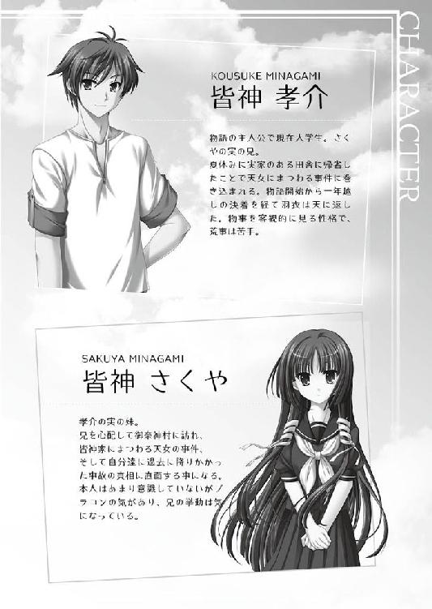
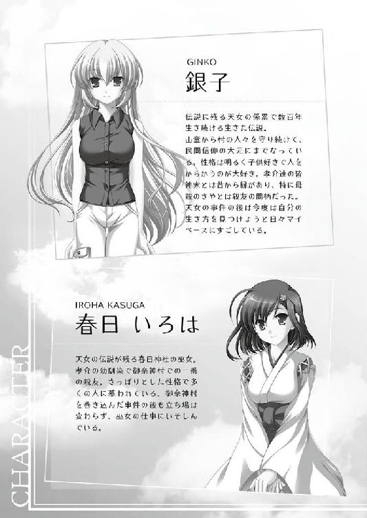
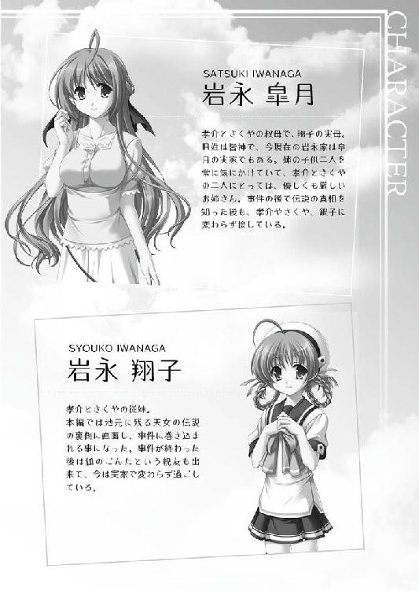
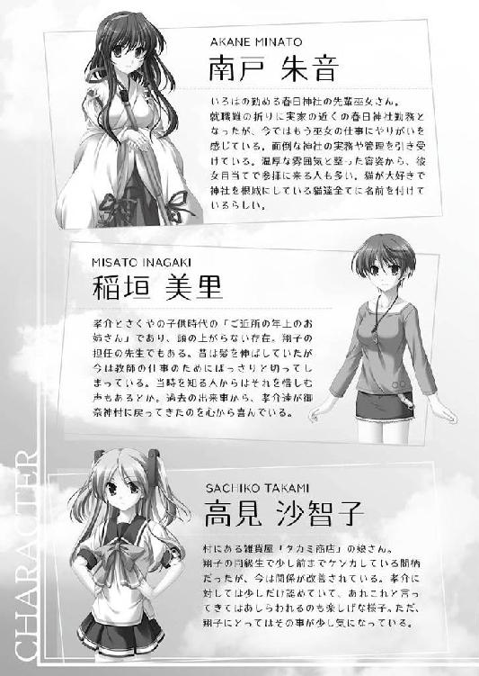
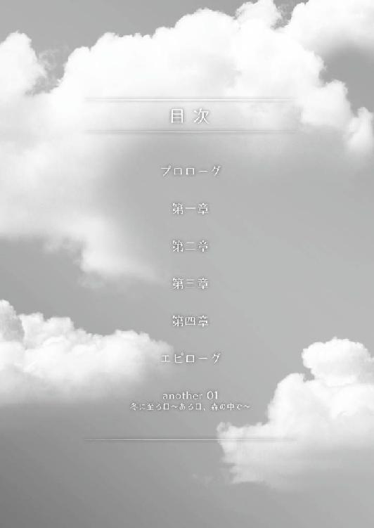
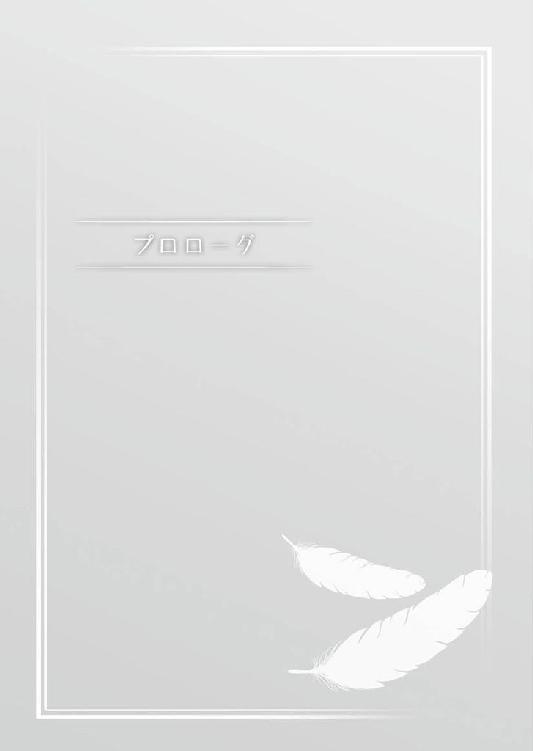
季節は巡り、また新しい季節がやってくる。
肌を焼く夏の日差し。
山から吹き下ろす涼風と、畳の匂いが残る室内に響く風鈴の音。
皆神孝介が過ごした夏休みから、もう数ヶ月が経とうとしているのに、季節が移り変わった今でも、夏の御奈神村に居るような気になってしまう。
それは今年と去年......大学生になって二度の夏休みに体験した出来事が、今も強く心に刻まれているからだろうと、孝介は一人納得する。
日本中を巻き込んだ事件も、時間と共に風化して忘れ去られてしまう。
けれども当事者の心の中には、鮮烈な記憶と共に刻みつけられて、何時までも残り続ける物だ。
だがそれも、日常という膨大な情報と記憶の上書きに埋没し、思い出す機会も少なくなっていく。
孝介をはじめ当事者の記憶が風化するには、まだ長い年月が必要になるだろう。そして、ふとした切っ掛けがあれば、すぐにでも色濃く思い出してしまう。
それは近畿地方の御奈神村を離れた場所である、ここ東京の実家でも同じだった。
『年の瀬が迫ってまいりました。ここで今年に起きたニュースを改めて振りかえってみようと思います』
リビングから付けっぱなしのテレビの音が聞こえてくる。
システムキッチンになっている皆神家では、リビングとキッチンの間をさえぎる物はほとんどなく、音が素通しになっている。
元々、食事の支度の間の暇つぶしに孝介自身がつけて、流れてくる番組の音をＢＧＭにしていた物だ。
まな板を叩く包丁やフライパンの上で跳ねる油の音に紛れ、とぎれとぎれになっていたが、それでも次の音を逃す事はなかった。
『次は八月に起きた、動物の集団大移動でしょうか』
「────」
手が止まる。
指先を切る事はなかったが、それでも動揺を抑える事は出来なかった。
当事者だけではなく、世間からも未だ風化してない。
この夏、日本は騒ぎの渦に巻き込まれていた。
本州の南北から、動物たちの大移動がはじまり、それに付随して事故やら騒ぎに便乗した事件が発生した。
それらの事件の根幹には、一つの昔話がある。
天女伝説
御奈神村に伝わる民話で、おとぎ話の類だ。
村の高台に位置する春日神社の裏には、青い湖面を持つ湖が存在している。
天女ヶ淵の名の通り、数百年前に天女が水浴びをして、羽衣を失い天へと帰れなくなってしまったという逸話が残されている。
絵本の中のおとぎ話そのままの世界が、御奈神村には過去にあった出来事として今も息づいている。
子供の頃から教えられるそれらの民話を現実の出来事として認識している者は皆無に等しいが、それでも御奈神村の住人は、他所の人間よりも身近に、天女と羽衣の存在を感じていた。
だがそれはあくまでフィクションとしての話だ。
御奈神村に伝わる話が、実際に過去に起きた出来事を元にしていると知っている者は余り多くはない。
孝介を始めとした天女を始祖に持つ皆神家と、それに縁がある者。
それから、現代に至ってもこの世界に存在している、天女そのもの......。
「おっと」
物想いから我に返り、孝介はフライパンの火を止めた。
薄く焼き上げていた溶き卵が、ほんのり茶色くなっている。
オムライスにする予定だったが、このまま何重にも重ねて卵焼きにしてしまおうと判断する。
母親を十年前に亡くしてから、皆神家の家事は父親である皆神誠二と、孝介と、妹の皆神さくやの三人で行ってきた。
長年に渡る経験から、面倒な手順を踏まない料理ならば、それなりに出来るようにはなっている。
ただ......と、ふと思う時がある。
自分ではなく妹のさくやだったらどうするだろう？
手際のいい妹だ、もう少し手を加えて味の向上を目指すだろうか？
「............」
少しだけ考えて、卵の形を崩した。
塩コショウを入れて更に卵を追加する。
出来あがる前にベーコンの残りを入れれば、少し形の悪いスクランブルエッグの完成だ。
孝介にとって妹の皆神さくやは、ただの家族ではない。
皆神家は天女の血を引き継ぐ一族だ。
血自体には特殊な物は無いが、皆神家は現代まで代々ある物を受け継いできていた。
天女の羽衣と呼ばれた、他の世界よりもたらされた超文明の産物。
持ち主の思い通りに姿を変え、そして刻まれた命令を実行し続ける万能の道具。
数百年の時を経てなお現代まで受け継がれてきた神秘と、そして過去の天女の想い。
それらが織りなす大きな事件に巻き込まれたのが昨年の夏の事であり、そして一年の時を経て先の日本を騒がせた大事件に繋がっていた。
──ピピッ。
携帯が鳴る。
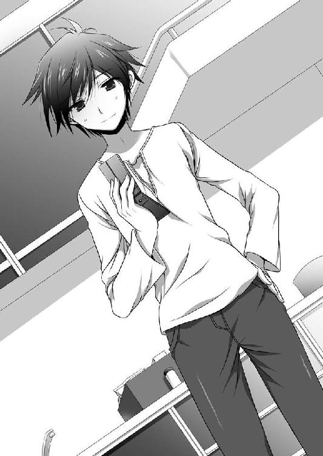
火を止めて液晶画面を見ると、そこには妹の名前が記されていた。
『ニュースで御奈神村が取り上げられていました。いろはさんが映っておりましたが、兄さんは観ましたか？』
「......ふむ」
少しだけ考えて返信を打ち込む。
「画面はみてないけど、音声だけは聞いてた。今度会ったらからかってやろう......と」
送信して、すぐさま返事が返ってくる。
『倍にして、私たちの事をからかわれそうです。自ら虎口に飛びこむのは感心しません』
「まったくだ」
思わず苦笑してしまった。
妹は幼馴染の思考回路をよくわかってる。
そして、孝介とさくやははっきりと反撃されるだけの、大きな弱みも持っていた。
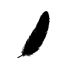
「まったく兄さんったら......」
ひとりごちて、皆神さくやは携帯を閉じた。
流行のスマートフォンは苦手で、折りたたみの携帯電話をしつこく使い続けている。
長い黒髪に切りそろえられた前髪。
物腰穏やかで誰に対しても常に敬語を崩さない彼女は、その容姿から古風な人間だと思われている。
実際はそのような事はないと自分では思っているのだが、いつまでも新しくしない携帯も機種も、さくやの印象に拍車を掛けている。
テレビはすでに御奈神村の風景から移り変わり、別の事件の紹介へと移っていた。
小さくため息をついて、電源を切る。
受験勉強の間の音楽にしていたつもりが、すっかり集中力を削がれてしまっていた。
さくやが居るのは、私立清宮女子学園に存在する学生寮の一室だ。
中高一貫の女子学園は外界から隔絶された山間の小都市に位置している。
全寮制ではないが、交通の不便さから寮生が多く、全体の過半数を占めていた。
設備は確かだが入学するのに高いハードルがあり、生徒数の減少により年々下がっては来ているものの、一般家庭の生徒には敷居の高いお嬢様校......それが世間的な清宮女子学園の印象だった。
とはいえ、それはあくまで外から見た学園の話。
通う生徒にとっては今現在の出来事の方が重要で、翌年の春に大学受験を控えた皆神さくやにとっても、今は目の前の試験勉強の方が大切だった。
テレビを落とし、室内から音が消える。
三年の十二月ともなれば学園の行事も軒並み終了する季節だ。
クリスマスを控えてはいるものの、冬休みに重なる時期では学園のイベントとして盛大に祝う事は無い。
寮内でささやかなクリスマスパーティーがあるが、それは毎年の受験者の息抜きとなるように、慎ましやかに行われるに留められていた。
問題集の回答を、ノートに綴っていく。
さくやのこなす問題集には、問題の頭の部分に漢数字で数字が記されていた。
回答をミスった場合に記し、自分の弱点を修正していく。
さくやの回答はほぼミスのない物だったが、それでも数字を引く事は避けられなかった。
「......やっぱり......」
答え合わせをして、誤答にチェックを入れていく。
それらの回答を見比べると特定の時期に習った問題に、さくやの弱点があるように思えた。
昨年の今頃──二年の秋から、三年の春に掛けての問題だ。
あの頃のさくやにとって、学園で過ごす時間は苦痛でしかなく、常に気が急いていた。
「......兄さん」
当時の事を思い出してか、ふと口に出してしまう。
それは長らく会う事が叶わなかった、短くも長い時を思い出してしまうのだった。
さくやがその気持ちを自覚したのが何時の頃か、記憶も定かではない。
物心がついた時には、もう自らの傍らに居た人の姿を、目で追っていたように記憶している。
それでも、子供の頃はまだ良かった。
幼心に浮かぶ好意は自然の物で、表に出したとしても誰からも咎められる事は無く、むしろ仲の良い兄妹だと褒められる理由になっていた。
しかし成長し、男女の性差と恋愛が年頃の少女の間で重要な問題として扱われるようになると、さくやは自らが抱える大きな問題に気づく事になった。
──この感情は異常だ。
それは対象が兄である孝介に向けられたものだから......ではない。
肉親に対して親愛の情を抱くのはごく自然な事だ。
その愛情が深ければ、男女の物にも通じるものはあるだろう。
しかし、そこには明確な差があってしかるべきものだ。
親愛の情を深め、思春期を迎えて性差を意識する切っ掛けを得て、感情が変質する。
そのプロセスを踏まずに、幼い頃から抱いていた愛情が男女のそれだったと気づいた時、さくやは自らの異常性に愕然とした。
まるでさくや自身の中にあらかじめプログラムとして刻まれていたようにも感じたのだ。
自分の思考や感情すらも何者かに用意されたような気分に付きまとわれる。
成長し、反抗期を迎えたさくやにとって、反抗する対象は親や兄ではなかった。
自らの持つ疑念と想いこそが反抗の対象であり、さくやを動かす原動力になっていた。
「......ふぅ」
思索から我に返り、止まっていた手を動かす。
ティーカップの中に入れた紅茶はすっかり冷めきっていた。
これまでの自分を振り返ると、よくも大胆に行動したものだとさくやは思う。
あの頃は実家に居たくなくて、自分の気持ちと悩みを確かめるために、離れる事しか考えていなかった。
「私も若かったですね......」
当時の悩みなど、今となってはどうでもよい話だった。
新しい環境に馴染み、兄とはメールを通じて交流を重ね、そして御奈神村で起きた一件を切っ掛けに──想いの成就を果たした。
さくやの持つ悩みも疑念も、御奈神村の事件は一切を解き明かした。
その後に残ったのは、何者にも縛られないさくや自身が持つ想いの塊だ。
過去に反抗を試みた理由の分からないプログラムのような感情ではなく、さくや自身が心の奥底で暖めていた強い絆だった。
再び、小さく吐息をついた。
すっかり集中力を欠いてしまっている。
気分を入れ替えようと、さくやは紅茶のお代わりを淹れるため席を立った。
「夜分に申し訳ありません。皆神先輩。少々よろしいでしょうか」
ノックと共に扉の外から後輩の声がする。
「はい......構いませんが......」
部屋の外にいた少女たちを迎え入れる。
いずれも寮の中で見た事のある女の子で、さくやとは学年も違うため深く関わりがあった訳ではないが、寮の清掃活動や食堂などで同席になった事がある。
「それで、どうかされたのですか？」
話を促すと、少女たちは互いに目配せをする。
言いだしづらい内容のようだ。
「実は......私たち、皆神先輩にお願いがあってきました」
「それは、その様子を見れば予想できましたが......何かあったのですか？」
「これですっ」
渡されたのは紙のファイルだ。
バインダーに纏められていて、表紙にはクリスマスのイラストとイベントの題字が鮮やかなイラストで描かれている。
「美術部の子に描いて貰ったんです！ みんな乗り気になってくれて、絶対に成功させようねって」
「は、はぁ......」
意気込む後輩に気圧されながらも、クリスマスイベントのファイルを覗きこんだ。
二十五日に予定されている寮のクリスマスパーティーに関する内容だ。
毎年この時期に行われており、ささやかな催し物と共に食堂を使って皆で料理を作って食べる。
ただそれだけのイベントで、受験を前にした三年生には息抜きに。
寮の生徒達は冬休みの間のささやかな刺激として毎年楽しまれている。
ただそれはほぼ建て前になりつつあるのは、寮生の間で周知の事実だった。
そもそも、長期休暇になれば大多数の生徒が実家に帰る事になる。
この学園は寮から通うのが主流になっているが、実家から通える生徒は、そうしている場合もある。
さくやのルームメイトにしても、受験に本腰を入れるため実家に戻っているのだ。
学園の三年間を運動部に費やしてきた彼女が、来るべき受験の日に向けて日夜しごかれているというのを、昼休みの時間に本人から愚痴交じりに聞いていた。
彼女の場合は少々極端な例なのかもしれないが、親兄弟に長期休みに実家に帰る事を義務付けられている者も多い。残る生徒は僅かで、彼女たちは長い休みに退屈を持て余してしまうだろう。
さくや自身は年内は寮に残り、大晦日に父や兄と御奈神村で合流し、故郷で正月を過ごしてから帰省をするつもりでいた。
だから、クリスマスパーティの誘いを受けても問題なく、元から参加するつもりではいたのだが、少し腑に落ちない事があった。
「ですが、どうして私に？ イベントの内容確認なら寮長に聞いた方がよろしいのではないでしょうか」
さくやは寮内において、何の役職も持っていない。
そして、親しい後輩から直接の相談という訳でもない。
面識はあるが彼女たちと話した事は殆どなく、イベントについて相談をされても困惑が先に来ている状況だ。
「あ、もしかして御影さんの代理なのでしょうか」
委員会で馴染みのある、親しい後輩の名前を口にしてみる。
物腰穏やかなさくやと対局のような少女で、明るい気質を持っている。
一言で言うならトラブルメーカーだが、悪意のない騒動は皆のイベントのように扱われている子だ。
「い、いえ、えっと......」
「......どうか、されたのですか？」
少女たちは口ごもり、互いに目配せをしている。
さくやにバインダーを渡した先頭の子を、隣の少女が肘でつついている。
「じ、実は今回、参加型のクリスマスパーティをやろうと話していまして。それなら皆神先輩が適任だろうという事になりまして」
「適任？ 何のですか？」
「最初は寮長さんの所に持って行ったんです！ そうしたら、皆神先輩に見せて許可を貰えばそれで良いと言われて！」
「......はぁ。なるほど。何とも彼女らしい」
寮長といっても同学年の女子生徒だ。
今の寮長はさくやの友人の一人で、艶のある長い髪が特徴的な子だった。
何でも家の事情により一定の長さから切るのを禁止されているらしく、よく愚痴を漏らしている。
実家は何かの家元らしく、所作や立ち振る舞いの美しさから後輩たちの人気も高く、投票で選ばれる寮長になったのも当然の結果と言えた。
最も友人であるさくや自身から見るとそれは余所行きの姿に騙されているだけであり、特に夏場の自室の中などアイスを食べながらスカートのままあぐらをかいて、襟元を広げてうちわで煽いでいたりと、後輩に見せられた姿をしていないのだが。
そんな彼女であるからして、見た目に反していい加減な所もあり、面倒な事はさくやに投げてしまう悪癖を持っている。
「仕方ありませんね......それで、私はどうしたら良いのでしょうか」
「えっと、まずは見て頂いて、それでご参加いただけるのでしたら、最後に署名を貰えればと」
後輩たちのぎくしゃくした様子も、さくやは少し納得が出来た。
頼みの寮長は些細なチェックもせずに、面識のない他の先輩に丸投げしたという訳だ。級友とさくやのクラスのポジション的に教室の中だったなら、それは特におかしな事のないいつもの行動だ。
しかし、面識のない後輩を挟んでしまっては、これでは元から許可が下りないか、あるいは次はどんな理由を求められるか警戒してしまうのも無理はない。
「わかりました。私で出来る事でしたら協力いたします」
「え」
女の子達のあまりに意外な驚きに、さくやの方が一瞬たじろぐ。
「えっと、あの......？」
「いいんですか!?」
「え、ええ。私に出来る事でしたら......ただのクリスマスパーティですよね？」
「はい！ 若干のイベントはありますが、ただのクリスマスパーティです」
「クリスマスパーティーが、若干のイベントなのですよね？」
「いえ、盛り上がるイベントがあるクリスマスです」
会話が微妙にかみ合っていないような気がして、さくやは引き受けた事を少しだけ後悔した。
「あの......変な事をしたりしないですよね？ ただのクリスマスのイベントなのですよね？」
「はいっ。もちろんです」
「皆神先輩が出て下さるなら、成功間違いなしです！」
「皆に自慢できますっ」
女の子達が言葉を揃えて一斉に喜びをあらわにする。
「そ、そこまで喜んで頂けると悪い気はしませんが......ですが、どうしてそこまで......」
「もしかして、ご存じないのですか？」
「ご存じも何も、何がなにやら」
困惑するさくやを前に、顔を見合わせている。
「皆神先輩は一年の女の子の間で憧れなんです」
「......はい？」
「物腰穏やかで綺麗で、とても素敵だと評判なんです！」
「は、はぁ。ありがとうございます」
「皆神先輩とお話がしたいと思っている子も沢山いるんです。ですから、皆神先輩。どうかよろしくお願いします！」
先頭の子がさくやの手からバインダーを取り、挟まれた紙から最後の署名欄を開いて差し出した。
彼女たちの様子を見て、さくやはしばし思案する。
つまりクリスマスのイベントに合わせて、学年を越えた交流会にしたいのだろうか？
それだけの事なら何も断る理由はなさそうだ。
何かしらのスピーチを求められたりしては困るが、自分以外にも三年生はいるだろうし......いや、それはまだ確認していなかった。
「私の他にも三年生は出席するのですよね？ お誘いは嬉しいのですが、流石に見ず知らずの方の中に一人だと、少々気後れをしてしまいます」
「はいっ。それはもちろんです。寮に残られる予定の三年生の方は全てお誘いする予定です」
「ですから、どうかお願いしますっ」
「わ、わかりました。そういう事でしたら......」
勢いに押されるようにさくやの署名を入れるが、名前を書き終わるかどうかの所で、その手が止まった。
「その前に、もう一度だけ確認しても──」
「ありがとうございましたっ！」
「えっ！ あ、あの......？」
しかしさくやが呼び止める間もなく、彼女たちは大きなお辞儀をすると、足取りも軽く夜の廊下を小走りの速度で歩いていった。
「..................どうしましょう」
ひょっとして、自分は致命的なミスを犯してしまったのだろうか？
今さらそんな懸念が首をもたげてくるが、彼女たちの姿も見えなくなってしまっていた。
翌朝、さくやが教室に登校した時には、既に何人かの生徒がきていた。
寮は学園の敷地の外れにあり、校舎との距離は驚くほど近い。
そのため、ここではもっぱら敷地に入る事ではなく、教室に行く事に対して登校と言う言葉を使っている。
それは裏を返すならば、学園に入ってもすぐさま教室に出向かずに、寮の友人の部屋や敷地内で時間を潰す生徒がいる事も示している。
教室にいたのもそれに代表されるような生徒で、寮長という立場でありながら何時も時間ギリギリに登校してくるのが常だった。
「珍しいですね。近江さんがもう来られているなんて」
「そりゃね。今日このタイミングで皆神の顔を見にこないなんてありえないもの」
長い黒髪を頭の上で団子を作り、余った部分をツインテールのようにおろしている。
それでも背中まで伸びた長さだ。ストレートにすると腰まで届く。
手入れが大変だと愚痴るがサラサラと流れる程に艶のある髪は朝日を浴びて映えている。
スレンダーだが均整がとれた体躯とあわさって、一度見たら忘れられない印象の女の子だ。
目の前にいるのが昨夜、クリスマスパーティの仕事をさくやに投げた張本人である寮長、近江千影だった。
「なんです？ 謝罪にでも来られたのですか？ 面倒なお仕事だからと私に押し付けて......寮に残られるのでしたら、クリスマス会の監督くらい出来るでしょうに」
ため息交じりにちくりと責めたてるが、さくやはあれ？ と思った。
普段の彼女なら、このように言えば苦笑しながらさくやに謝罪を入れてくる。それを仕方ないと許し、学食でお昼をご馳走になる。
そのやり取りが常だったのだが、千影はきょとんとしたまま、訝しげに探りをいれてきた。
「もしかして、何をやるか知らない？」
「知ってますよ。ファイルも見せて貰いました。些細なイベントがあるようですが、普通のクリスマスパーティですよね？」
「その、些細なイベントの中身は？」
「......そういえば、そこまでは確認していなかったですね。あまりの喜び方に説明を求めたのですが」
「じゃあ知らずに参加を決めちゃったの？」
「そういう事になるのかもしれませんが、どちらにしろ毎年寮で行われている、いつものクリスマスですよね？」
「そうだね。中身を確認したけれど、やる事は普段と変わらない。後輩達が料理を用意して三年生に振る舞いつつ、皆と歓談をして交流を深めるためのイベントを行い夜もふけたら解散する。監督者だけは後輩がきちんと後片付けまで行うか見守る義務はあるけれど、それ以外の三年生はそれぞれ各自が好きにしてもいい」
「普段と同じじゃないですか」
監督者は必然的に遅い時間まで残る事になる。
だがそれは、イベントの大元である『三年生に迷惑をかけない』という物と一部矛盾する事になる。
しかし、受験生と一言で言っても、この時期におけるスケジュールは各自異なる。
そのため手の空いてる者が監督を引き受ける事が通例になっており、監督者の遅くまで残る必要があるという仕事は、言いかえれば最後までお祭りを楽しめる事の裏返しでもある。
そのため、必ずしも貧乏くじを引かされた訳ではない。
さくやもそれが分かっているから、ここまでの念入りな確認が理解できずに困惑していた。
「......本当に知らなかったんだ......」
「......一体何があるというのですか？」
「うう......ん......それを言っていいのかどうか......いや、でもこれはますます面白くなってきたのかも......学生時代の良い想い出？ きっと後世に語り継がれるに違いないし」
「あ、あの？ 近江さん？」
ただならぬ様子にさくやの頬に一筋、汗が流れた。ひょっとして私は軽率な事をしてしまったのだろうか？ 自問をするが時既に遅しだ。
今から下級生の教室にいって問いただそうとも思ったが、昨夜の喜び様が脳裏に浮かんでくる。
どのようなイベントであれ、さくやの参加を彼女達は心から喜んでいた......ように思う。そしてサインを入れた時の驚きは、確実に断られるであろう事を想定していたのだと今さらながらに理解した。
「と、ともかく」
どのようなイベントなのか、まずは知らなくてはならない。想像だけを膨らませても意味はない。もしかしたら、近江千影が不安を煽ってるだけで本当の意味で『些細なイベント』なのかも知れないのだから。
内容が分からない限り、判断を下す事は出来ない。そうさくやは決めて、改めて問おう──とした。
「ねーねー。クリスマスにミスコン出るってホントー!?」
「..................」
問おうとした言葉が、止まる。
教室に入ってきたのはクラスメートの薬師清香だ。教室の入り口からさくやを見つけると勢いよくやってくる。
「聞いた時にびっくりしたよー。まさか本当に出るなんて思わなくって。でも応援してるから大丈夫。下級生のさくや人気はなかなかすごいものがあるから、優勝しちゃったりしてね」
「ちょ、ちょっと待って下さい！ そもそもミス、コン？ なんでそんな話になるんですか？」
言われた意味が、分からない。
そもそも、それは男女混合で行うイベントだったはずだ。
女子しかいない私立清宮学園で女子に票を投じて、何が面白いというのだろうか。
更にはそのステージにさくや自身が上がっている姿が想像できない。
否、想像しようとして、あまりの過負荷にショートしかけている。
「だいたい、ミスコンとは、一体何の、事なの、で、しょうか」
切れ切れの震えた声で清香に問う。
さくやには自分の声が遥か遠い彼方から降り注いできたように聞こえた。
「え？ だってクリスマスパーティでミス清宮を決めるんでしょ？ すっごく楽しそうに宣伝してたし、入り口にポスターも張り出されてたけれど」
「はいぃぃ!?」
「くっくっく......」
さくやの後ろから押し殺した笑い声が聞こえる。そして振り向かなくても分かる。近江千影だ。
慌てふためく姿は予想以上の物で、それまでのどこかぎこちない雰囲気を吹き飛ばす程だ。
清香のあっけらかんとした態度と空気が全てを洗い流し、さくやを喧騒が包む。
「嘘......ですよね......」
その中でさくやは、茫然と立ち尽くすのだった。
「ようするに」
昼休みになって、さくや達は集まって話あっていた。
時間を置いて今朝の話を清香達に聞いた。さくや自身が考えていたクリスマスパーティと実際に行われる内容に大きな隔たりがある。そしてそれを理解してないのは当の本人であるさくやだけのようだった。
「卒業生の想い出が欲しいって話が発端なんだ」
千影の言葉に首をかしげる。
「想い出と言われましても、どうしてそうなるのでしょう？ 学園や寮で過ごした時間は下級生よりも長いですし、想い出というのは各自が作り上げていった出来事の結果なのではないでしょうか」
「それはさくや個人に限っての話でしょ？ そうじゃなくて、下級生が上級生の想い出を欲しがってるんだよ」
「......といいますと？」
意味が分からなくて、さくやは二人に再び聞いた。
想い出というのはあくまで個人が作る物だ。集団行動においてもそれは変わらず、個人の中に『みんなと何かを成し遂げた』という想い出が出来上がる。
イベントを一つとったとして、それに対する想いや感想は千差万別であり、極端な事を言ってしまえば一人には良い想い出でも他の誰かにとっては思い出したくない悪夢になる事もありえる。
それはもしかしたら、これから遠くない未来にさくやが味わうかもしれない話だ。
ミスコンの細かい趣旨は分からないが、テレビで見るイメージのように、自分が露出度の高い格好をしてステージに上がってスポットライトを浴びている姿が想像出来る。
清香と千影の口ぶりからも、あながち間違っていないであろうと確信が出来た。
他の人たちは楽しいイベントになりそうだと、さくやは思った。そして自分自身にとっての悪夢なのも間違いなさそうだ。
「やはり私をだしにして、笑いを取りに来てるとしか思えません。クラスの反応からもそう感じましたし、あながち間違ってないと思います......いえ、別に怒ってる訳ではないのですよ。ええ、もちろん」
「怒ってる！ めっちゃ怒ってる！」
「騙されたような気持ちが無い訳ではないですが......はぁ、なんと言ったらいいのでしょう......」
本日何度目かのため息をついて、改めて聞いてみる事にした。
「そもそも意味が分からないのです。なんで私がミスコンになんて出ないといけないのか」
「サインしちゃったからじゃないの？」
「そうではなく！」
こほんと小さく咳払いをして、気持ちを落ち着ける。少し質問を変えてみる事にした。
「もっと盛り上がりそうな方は多いですよね。例えば生徒会長の赤星さんは下級生からも慕われていますし、積極的にイベントを開催するノリの良さも持ち合わせています。楽しんで参加されるのではないかと思います」
「あ、出るって書いてあったよ」
「............」
即答で返されて、瞬間言葉に詰まる。
気を取り直して続ける。
「......つまり、そのように人望もノリの良さもある方が参加表明をされるのは至極普通の事であり、皆さんに求められるのも理解が出来ます。ですが、どうして私まで」
「そりゃだって」
「ねぇ」
二人は顔を見合わせて頷いている。暗黙の了解とも言うべき共通認識を確認しているようで、さくや一人だけが取り残されていた。
「ちょ、ちょっと待って下さい！ なんですかその反応は！ まったく意味が分からないのですがっ」
「言葉で説明させるなんて、さくやじゃなかったら嫌味だね」
「本当にねぇ。さくっちだから許される言動って多いと思う」
「まったくだね」
「......ですから、説明して貰わないと分からないのですが」
さくやを置いて進められる会話に、微かな頭痛を覚えながら話を促す。
「まず先ほどの話とコンテストがどう繋がるのです？ 確かに学園でのイベントは想い出になるでしょう。でも、私は生徒会長さんのように学園で何かの役職についた事もありませんし、部活に所属していた訳でもありません。近江さんの面倒事を回された気がします」
言いながら、それは事実だ。とさくやは胸のうちで思った。自分自身は特別目立った生徒ではない。何か学園の行事に携わる大きな役職についていた訳でもないし、部活動で活躍して表彰をされた訳でもない。ただの目立たない一般生徒でしかなく、人々の注目を集める舞台とは縁が無い。
しかし、さくやの胸の内とは裏腹に二人は大きくため息をついて見せた。
「......もしかして、知らないのかな」
「そうだろうね。というより、知っていたらそれはそれで印象に合わなくて驚きだけれど」
「あー。それは確かにねぇ」
「一体何の話をしているんですか？」
嫌な予感がして、唾を飲み込んだ。
おそるおそる訪ねると、逆に千影がさくやに訪ねた。
「ＭＳＦって知ってる？」
「えむえすえふですか？ 何かの暗号か略称のようですね。今初めて聞きました」
「この学園にいろんな同好会があるでしょ？ その中の一つよ」
「確かに同好会なら、聞いた事が無くても不思議ではありません」
言われて、さくやは頷いた。
ここ私立清宮学園の中には、様々な部活動、同好会がひしめいている。その数を把握している生徒、教師はごく限られており、あるいは誰も把握してないのではないかとまで言われている。
それは誇張めいた表現だが、聞く者には確かな説得力を持っていた。
「こんな田舎の学園では他に楽しみもありませんから、仕方ないのかもしれませんけれど」
「そうだね。ＭＳＦもそんな同好会の一つ」
清宮学園は田舎町の郊外に位置している。
伝統のあるお嬢様校であり、シックなセーラー服に身を包んだ姿と森の中にある静かなたたずまいは、生徒、保護者問わずに清宮学園の持つブランドとして認知されている。
だが、入学してくるのは年頃の少女達だ。娯楽の少ない郊外の森では退屈を持て余し、特に保護者の目の行き届かない寮生の素行には一挙一動の監視が付けられていた時代があった......とさくや達は聞いてる。
過去形なのは、それはもう遠い過去の話でさくや達は伝聞でしか知らないからだ。
今の清宮学園を知ってると、退屈を持て余した生徒達による素行の乱れが問題視されていた事など、違う学園の出来事のように感じてしまう。
とはいえ特別な解決策を持ち出した訳ではない。
ただ、退屈を持て余して学外での素行が問題になるのならば、学園内に退屈を紛らわす物を作るという単純な方法でしかない。
それが寮生が独自に行うクリスマスパーティであり、全貌を把握しきれないとまで言われる増え続ける部活動、同好会の存在である。
本来なら、学生だけの集会で夜遅くまで過ごす前提のパーティなど許可されない。仮に飲酒などがあって表沙汰になれば経歴にも傷が付くし、外部に大きく取り沙汰される。
火を使うのも同様だ。出火騒ぎ等になれば生徒達の不注意だとしても、学園を狙った放火の線からも警察は介入せざるをえない。
本来はそれがブランドを持つ学園の不自由な側面のはずである。
だが今の清宮学園の校風は自由であり、生徒の自主性の元にイベントを開く事が推奨すらされている。
その中で大きな事件は起きた事がなく、むしろ風通しの良さが生徒側に自主的な抑制をさせていた。
ずいぶん自由な所なのですねと、入学したばかりの頃に、さくやは寮を預かる寮母の女性に言った事がある。
当時で三十後半。今は四十を過ぎた彼女は、寮生の間から『お母さん』とあだ名をつけられて親しまれている。
その名の通り、包容力のある笑みを浮かべて、問いかけたさくやに答えた。
「当時の生徒会長がすごかったのよ。もう、すごい自由な人で行動力もあったから、先生達もあの子が言うならって完全にいいなり状態だったの」
「それは、すごいですね。ですが生徒の発言でそこまで行くのも釈然としない気持ちもありますが......何か特別な方だったのですか？ ご実家が大層な資産家で寄付の額がすごいとか」
「そんな事は無かったと思うわよ。何か古い家柄だとは聞いた事があるけれど、本当にそれだけ。ただ、彼女がすごかったの」
遠い目をして、当時の事を語る。それを見て、さくやはあれと思った。
その時だけは寮母があだ名の通りの寮生の母親役から、一人の女性のように見えた。
だがそれは、当時知りあって間もない頃のさくやに指摘出来るはずもなく、ただ話に耳を傾けるだけだった。
「本当に面白い子だったわ。見た目と正反対の行動力を持ってて、やる事なす事、もうめちゃくちゃ。それでいて事が終わると不思議と上手くいってるんだから、先生達も苦労したと思う」
「はぁ......なんだか大変な方だったんですね」
「ええ、本当に」
そういって、さくやを見る。
奇妙な、楽しげな笑みを浮かべていたのが印象的だった。
「でも本当に楽しかった。私は当時はただの生徒だったし、その子と知り合ったのは学園に入ってからで付き合いもたった三年だけだったけれど、あの時の事は今でも忘れないわ」
「そんなに楽しい方なら、会ってみたいです。まあ、もう卒業されてから長いと思うので、学園に来られる事もなさそうですけれど」
「......そうね。ただ......うん、でも、きっと当時いた先生方も楽しかったんだと思う。そして、彼女が作った自由な校風を、今も楽しんでるのよ。だから、この寮に入ってきたあなたに一つだけお願い」
「お願い、ですか？」
「ええ、この学園を楽しんでいって。卒業まで長いようで短いから、目いっぱい盛大にね」
「わかりました」
当時は意味が分からなかった問答も、三年になり卒業を間近に控えたさくやには理解が出来る。
さくやは名前も知らない過去の生徒会長のようにイベントを打ち出した側ではなく、もっぱら振り回される側ではあったが、沢山の出来事があったと感じている。
ただ生徒の自主性の言葉の元に、イベントを拡大解釈して暴走するのは困り物だった。
なぜか、毎回さくやが引っ張り込まれる事になるのだ。
そして今回もその例に漏れないのだと、同好会の話を聞いて内心嘆息した。
「それで、そのＭＳＦがどうかしたのですか？ というよりも、一体どういった趣旨の活動内容なのですか」
「まだわかんないかなぁ。ヒントを言うとＦはファンクラブね」
「......Ｆがファンクラブですか？ じゃあ頭の二つは......あっ！」
言って、気づいた。
英字で三文字。そして最後の一つがファンクラブならば、当然頭の二つはイニシャルか、あるいは名前の略称になる。
「そそ、皆神さくやファンクラブたっての願いでね。クリスマスパーティにはぜひともって頼みこまれちゃったのよ」
「ちょ、ちょっと待って下さい......少し整理させて欲しいのですが」
「いいけど、どうしたの？」
「どうしたのじゃありませんっ！」
二人に食って掛かる。さくやの勢いに気圧されたように、数歩下がった。
「そもそも一般生徒にファンクラブって何の冗談ですかっ！ しかも同好会って学園の活動じゃないですかっ！ ありえません。一体どうなってるんですか、ここは！」
「まあまあ、そんな驚く事じゃないでしょ」
「驚く事ですよっ！ いつから存在してたんですかっ」
「私の知る限り、二年の頭には出来てたかな？」
「あたしが知ったのはその頃の文化祭だったかな。下級生がさくやのメイド服の写真撮りまくってたしね」
「そ、そんな昔から......」
がっくりと肩を落とす。自分が在籍していた学園の暗部を知り、ギャップについていけないとさくやは混乱する頭で思っていた。
「これで露出度の高いコスプレサンタのコンテストは避けられないね」
「嫌ですよっ」
「さくやはスタイルいいからなぁ。きっとミニスカのフリフリでも似合うよね」
「絶対着ませんっ」
「こんな事を言ってる娘に限って、異様に似合っていたり......」
「いざ当日になるとノリノリで、フェロモンをまき散らして一人勝ちだったり......」
「そういえばさくやは彼氏持ちだったね」
「じゃあその彼のためにも、写真撮りまくらないといけないんじゃない？」
「となると露出は高い方がいいよね」
「水着審査ってあるのかな」
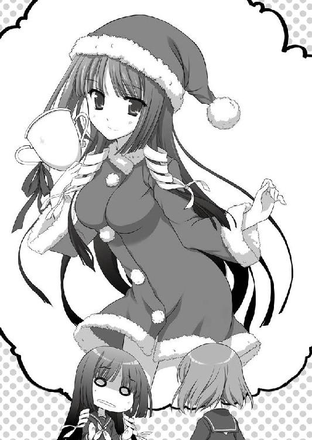
「あ、あああ......」
その光景をさくやはリアルに想像出来てしまった。
あの兄ならば、きっと大喜びする事だろう。そして自分にも見せろと無責任に囃したててくるに違いない。
「悪夢だ......」
今すぐ何とかしなくてはならない。さくやはそう心に誓っていた。
「ですから、笑いごとじゃありませんっ」
放課後、学園の校舎と寮の途中にある森から、さくやのやや抑えめだが強い声が響いていた。
『はは、でも兄としては妹が好かれてるのは嬉しいもんだぞ』
「好かれてるって同姓の女の子じゃないですか......しかも理由がまったく分かりません」
『そうかぁ？ 理由はいくらでもあると思うけどな』
「......どんな理由ですか」
『純粋にさくやに好意を抱いているとか』
「ですから、女の子ですよ？」
『それは先入観だろう。いまどきは女の子同士だって油断できないんだぞ』
「そんなまさか」
『じゃあお前は、三年間学園にいて、その手の話題を一切聞いた事がないのか？』
「そ、それは......」
実の所、ない訳ではなかった。
最初に耳にしたのは一年の入学したての頃だ。クラスメートの女の子が、昼食時のふとした雑談の中で「先輩に告白をした」と言った。
それを聞いた事情を知っている風な子が黄色い歓声を上げた。唐突な話に面食らった事を、今でも覚えている。
その時にさくやは漠然と「想いが叶って良かった」といったような事を言った記憶がある。
言われた側の反応は少しあっけにとられたような雰囲気で、さくやも意味が分からずにしばし首を傾げてしまった。
数日が経ち、今度は「相手の態度がそっけない。優しくしてくれない」と言う悩みを聞いた。
当然の疑問として訪ねた。「相手はどのような方なのですか？」と。
それに対する返事は、今でもよく覚えている。あれほど困惑した事態は滅多になかった。
「皆神さんも知ってるでしょ？ 三年の静原先輩」
漫画の凍った表現は事実だったと実感したのは、この時が初めてだった。
意中の相手は女子で、彼女に対して想いを告げて両想いになった。この出来事がさくやの理解の範疇を超えていた。
しかし、困惑するのはさくやだけで、他の子は当然の出来事だとばかりに、相手の態度を責めて、傷心に落ち込む同級生を慰めるのだった。
「......まあ、なかった訳ではありませんが......」
『やっぱり女子校だと、そんな話題に事欠かないんだな』
「滅多にある訳ではないですからね。大体、ここには本気で同姓で恋愛をしてる子なんていません」
困惑の極地ともいえる衝撃の告白から数週間が経ち、落ち着いて周囲を見渡せるようになったさくやが出した結論が、それだった。
つまりは、ごっこ遊びなのだ。
この学園の中には男性が少ない。
ごく少数の教師を除けば、出入りの業者しかいない。
かといって、外界と完全に隔絶されている訳でもなく、一歩学園を出て駅の方にいけば、すれ違う人やお店の人。さらには近隣にある他校に通う学生など、異性と接する機会なんていくらでもある。
しかし、そちらに出会いを求める生徒は、殆ど居なかった。
なぜなら男性と付き合うのは彼女たちにとって本番だからだ。
閉ざされた学園という狭いフィールドの中で、自分より年上の頼りがいのある同姓に、憧憬と好意の中間のような感情を抱く。
そして相手に受け止めて貰えたら、互いの間に生じる感情に振り回され、翻弄される。
けれどそれは、実際の見知らぬ他人との恋愛に比べて、ごく穏やかな波のようなもので──つまりは、練習でありごっこ遊びなのだ。
「ファーザーコンプレックスの変化形といったらおかしいかもしれませんが、私はそう解釈していますよ」
『お父さんと女の子じゃ大きく違うだろ。俺はどっちかっていうと女の子同士の方がいいな。お父さんと娘じゃ生々しくて嫌だ』
「私だって嫌ですよ。というか、変な事を言わないで下さい。大体兄さんがそんな事を言っても説得力なんて欠片も無いんですからね」
『まあなぁ』
さくやと兄の関係からして、他者をどうこう言えた筋合いではないのだ。
そして、だからこそさくやは先の出来事を冷静に解釈出来たともいえる。それは少し皮肉なのかもしれないと内心で小さくため息をついた。
「つまり好意の延長線上に頼れる存在を求めている訳です。学園にいると身内からは離れないといけません。だとしても、いきなり外の世界に飛び出して、同級生という仲間が存在しない世界での繋がりを作れるくらい強い人間は、滅多にいません。そこで年上の頼れる先輩に理想像を見出し、自分の中にある偶像と重ね合わせる事は、特別おかしな事ではないと思います」
『実のところ、そういった事態は珍しくないんだよな。大昔からある事だしな』
「そうなのですか？」
考えに考え抜いた末の結論で、それに対してくるであろう疑問や反発に対する答えも用意していたのだが、孝介の返事はあっさりした肯定だった。
『偶像崇拝ってあるけど、それにも通じる所があるんだよ。個人の感情を持て余した時に神に祈る。そして祈りを偶像に託す事で自己の想いを発散させる訳だな』
「なんだか厳粛な聖職者の祈りみたいですね......理屈では何となく理解できそうですが、実感は持てそうにありません」
『俺もだ』
流暢に説明したくせにと、さくやは少しだけ思った。それが電話越しに伝わった訳ではないだろうけれど、孝介は先を続ける。
『仏像や石像......神様を模した物に祈ってるだけなら、さくやの感想だけで納得なんだけど、別にそれだけじゃないんだよ。これは人間にも適用される』
「ええっと、生きた神様ですか？」
『ある意味ではそうかもしれないな』
率直な感想に、電話口から苦笑が聞こえた。
『例えばいろはのように神事を取り仕切る巫女なんかも、里の人からはそう見られてたりするものなんだ。あいつはただの巫女さんで誰かを教えてたり、村の運営で直接采配を揮ってる訳でもない。でも、大きな神社の巫女さんというだけで、注目されて一挙一動が指針とされる事もある。いろはが立派な人物なら、いろはのような子になりなさいと教えてる家もあるだろうな』
「実際、いろはさんは立派ですから、大いにありそうですね」
相槌を打ちながら、年上の幼馴染の顔を思い出した。
今話に出た春日いろはは、兄の皆神孝介と同じ年だ。
整った容姿とスタイルの良い長身を持つが、本人はそれを誇るでもなく常に自然体でいる。
明るい性格は老若男女問わず好かれて、自身も努力家だ。
御奈神村の夏祭りは大変なにぎわいを見せる。いろはのような人間が村の祭事を取り仕切ってるのだから、手伝う側も力が入り、その熱は参加者にも伝わっていく。
時代が時代なら、今しがた孝介が言ったように生きた神様扱いされたのかも知れない。
『一つの村全体という大きな話にしちまったけど、この手の事はもっと狭いコミュニティでも十分起こるんだ』
「例えば......学園内でも？」
『むしろこっちの方が起こるだろ。品行方正な生徒会長が居て、教師は会長のようになりなさいとはっぱをかけたり、素行が悪いが行動力のある不良に、女の子が騒いだり』
「さすがに後者はうちの学園ではありませんが......」
『どちらも根は同じってだけの話だな。俺が大学入る前でも生徒会長は男だったけど、男からラブレターなんて貰ってなかっただろうし』
「それは当然です」
『でも、もしも男子校だったらそんな事もあったかもしれない話だ』
本当にそうだろうか？ と一瞬考え込んで、さくやは頭を振った。流石に今のはからかわれている。
「あまりそちらに脱線すると兄さんに特殊な性癖があるのではないかと疑いますからね」
『そんなの無い事はお前が一番良く知ってるだろ』
「......うるさいですよ」
憮然と返しながら、兄の話を反芻する。
つまり自分も狭いコミュニティにおける偶像崇拝の対象にされたという事だろうか？ しかし、入学から今までの自らの行いを振り返っても、さくやには他人に慕われるくらいに目立ったという記憶がない。それどころか、今は知らず知らずのうちに祭り上げられた印象さえあった。さくやは自分が偶像にされる理由は無いように思える。
「話を戻しますが、そうなるとますますおかしい感じがします。兄さんが例に出したように、象徴としての意味合いなら私は違います。もっと別の理由ではないでしょうか」
『そうだろうな』
あっさりと肯定する兄に「そう思ってたなら最初から言って下さい」と突っ込みを入れ、先を促した。
楽しんでさくやに無駄話をしていたのか、あるいはこの先に別の理由があるから今の偶像の話をしたのか。これまでの兄の事を考えるとどちらもありそうに思えた。
『俺はさくやほど、さくや自身を過小評価してないから、ファンクラブも普通にあり得ると思ってる。でも、さくやはそれじゃ納得できないんだよな？』
「当然です」
『発端は結局の所、当人達に聞くしかないよ。ただ......そうだな。もしかしたら、もっと俗っぽいのかもしれないな』
「庶民的な理由という事ですか？」
『そういうこと。さっきの偶像の話に戻るけど、アイドルといった芸能人だってこれに当てはまる。狭いコミュニティで目立った人物を崇拝するのと基本的に一緒だからな。この場合だと崇拝する側に理由なんてない。......まったく無い訳じゃないんだけど、さっきの例よりももっと曖昧になる』
「それはどうしてです？」
『言葉通り理由が漠然とした物になってしまうからだ。さっきはいろはや学園の生徒会長を例に出したけど、身近に接していて、本人の素の部分が出る日常生活においても尊敬に値する人物であるなら、相手の人格や性格のリスペクトが入るからな』
「つまりその方の事を良く知らない場合は、相手の性格や人格、普段の行いも想像するしかないから......」
だから曖昧になる。
本人が一体どういう人物で、何を考えているのかは考慮されない。どのような人格、趣味嗜好であるかはお構いなく、ただ一方的に賛美されて他者に影響を与える。
それも本人の知らない所で。
「どうしてこんなに反発を覚えていたのか、ようやく分かった気がします」
電話越しの兄に向けてため息と共に言った。
「ファンクラブと言っても私の都合などお構いなしなのですね。最初からイベントへの参加として持ってきていたなら、抵抗はあっても頭から拒否はしなかったと思うのに、交渉の余地すらなく一方的に決められてしまった。その事に反発を覚えていたんだと思います」
『だろうな』
電話口の言葉に苦笑が混じっている。さくやの事などとっくにお見通しだったのだろう。
「兄さん、私やっぱり断りに行ってきます。その結果、代わりの人を探すのが大変になったとしても、納得出来ませんから」
『そうするといい。......ま、俺としてはさくやのコスプレ見られないのは残念だけど』
「やる、やらないにしろ、兄さんが見る機会なんてありませんよ」
調子のいい兄にぴしゃりといって、電話を切った。
校舎に戻った時には太陽はすっかり傾いていた。
茜色に染まった廊下を歩いていると、冬の日の入りの早さを実感する。
ついこの前まで故郷で夏の暑さを味わっていたのに、今では上着が手放せない。
「大体、意味が分かりません」
歩きながら知らず不平がこぼれる。
さくやを推薦したＭＳＦという怪しげな集団にしても、同じ生徒のはずだ。それが目立った所のない同じ生徒のファン活動をするなど理解の範疇を越えている。
「これが生徒会長や何かの運営委員長のような目立つ方ならまだしも......」
先ほどの偶像の話を思いだす。
学園生活という狭いコミュニティに置いて、何らかのアドバンテージやアピールポイントを持つ人間に対して、『自分もそういう学園生活を送りたい』と言う願望を持つのは理解が出来た。今回はそうではない。さくや自身は学園に置いて主だった業績は残していなかった。
さくやはその時点で偶像化されているという線を捨てている。
「......はぁ」
自分のファンクラブについて自ら訪ねて回るというのは、想像以上に神経をすり減らした。
当初はクリスマスパーティの運営委員を訪ねるだけで済むと思っていたのだが、行く先々で「知らなかったの？」と逆に尋ねられた。それだけならばまだしも、さくやに先んじて「コンテスト応援している」「頑張って」と言われてしまっては、円滑な辞退のために奔走しているとも言いだせない。
結果、返事に詰まって頭を下げてくるのが、また勘違いに拍車をかけていた。
「どうして私がこんな目に......」
見ず知らずのＭＳＦという集団の姿が、さくやの脳裏で構築されてる。
きっと人の話を聞かない、傍若無人な集団なのだろう。今回の件も嫌がらせが発端になっているに違いない。
さくやは他人に対して先入観を抱いた事は滅多にないが、朝からの疲れが思考をネガティブにしていた。
「......ここですか」
ファンクラブの会合に使われているのは、旧校舎の視聴覚室だった。
部活動、同好会の多い清宮学園でも、放課後はあまり使われていない建物だ。
そんな人の気配の薄い所で活動しているというのも、さくやの不信感を煽る理由になっていた。
「失礼します」
それでもいきなり踏み込む事はせずに、ノックと共に声を掛ける。
清掃の行き届いた新校舎や寮と違い、古ぼけた建物はどこか寒々しい印象を受ける。
ここに来る途中にも、廊下の天井の隅には小さな蜘蛛の巣が張られ、角には綿ぼこりが転がっていた。
一応使われている建物なので、掃除はされているようだったが、必要最低限の手抜きを思わせるものでしかなかった。
どこか薄汚れた校舎も印象の悪さに上乗せされている。
まだ会った事のないＭＳＦの面々は、さくやの脳裏の中では幼い頃に兄と共に見たアニメに出てきた、人が嫌がるのも気にせずに騒ぎたてるいじめっ子の取り巻きのようなイメージを抱いていた。
「どうぞ。お入りになって下さい」
だからだろう。
中から聞こえてきた声が、軽やかな涼しい音だった事がとても意外に思えた。
「............え」
中に入ると、景色が一変した。
古ぼけて薄汚れた旧校舎の中で、その室内だけはどこよりも清潔に見えた。
壁や床は掃除が行き届いて磨かれており、傷だらけのリノリウムの床にもワックスが掛けられている。
机の上には白いレースが敷かれ、白磁のティーカップが置かれていた。
メンバーと思しき少女たちは、突然の来訪者を見てあっけに取られた顔をしている。
その素直な反応からは、彼女たちはさくやが抱いていたような意地悪さは微塵も感じさせず、むしろさくやの困惑を楽しむ節のあった友人達よりも純粋にすら見えた。
「あの......私、三年の皆神さくやと申しますが。こちらはＭＳＦという同好会でお間違いは無いでしょうか......？」
「えっ！ え、ええ......あの......はい......」
さくやの問いかけに、ティーカップを持った女子生徒がぎこちなく答えた。
やっぱりここで良かったのか。自らの抱いていた印象との乖離に微かな頭痛を感じた。
「こちらの部長さんは......」
「わ、私です。失礼いたしました。皆神先輩」
さくやに答えた少女が、立ち上がり机の横に出た。
一目見て、気が強そうな子だとさくやは思った。
背丈はさくやよりも一〇センチは低い。だがこれはさくやが女子にしては背が高いため、一五〇センチ半ばならば女子としては平均だ。
髪の色は明るく、少し赤みが掛かっている。
頭頂部から先端に掛けて色のくすみがない。この学園では理由のない染色は校則違反なので、染めているのではなく地毛なのだろう。
肩口で切りそろえられた髪は、両側に小さなみつあみが巻かれている。
それが少女の持つ雰囲気を可愛さで和らげていた。
「来て下さってありがとうございます。よろしければおかけ下さい」
「で、では失礼して」
やや面食らいながら、椅子に座る。
元が視聴覚室だけあってか、教室の椅子よりも長時間座るのに適したタイプでクッションが柔らかい。
更に背もたれと座席には手編みらしきカバーが付けられて、清潔感が増していた。
さくやは自分がそれまで思い描いていた想像と真逆の光景が信じられず、何度も教室の中を見渡した。
ここは視聴覚室だったはずだが、旧校舎の老朽化した設備は取り除かれ、今では大型スクリーンにプロジェクターがあるだけの部屋になっている。
授業でパソコンを使う時は新校舎にあるＰＣルームを使用するため、学園に三年間居たさくやもここに足を踏み入れるのは初めてだ。
内装にまで手を加えられており、清潔感を漂わせる白色で統一されている。
教室には目の前に座っている部長の他に三人の女子が居るが、昨夜訪れた生徒はおらず見覚えのない顔だった。
「昨日来られた方はこちらの方ではないのですか？」
「穂波さん達でしたら、今は飼育部の方に行っています。何でも怪我した動物を保護したとかで」
「そうなのですか......保健所や獣医さんに連絡しなくて大丈夫なのでしょうか」
「そちらは初日に連絡済みとの事です。幸い見た目程ではなく怪我も軽く、今は飼い主の方を探しているようですね」
「それは良かったです」
一息つくように、勧められるまま紅茶に手を伸ばす。
......話の導入が見つからずに、無関係の雑談になってしまった。
一抹の反省と共に、今度はどう切り出そうかと迷う。
見た感じ節度のありそうな少女達だ。部長の彼女も物腰穏やかで常識を持っていそうに見える。
もしかしたら、自分の勘違いなのでは？ という考えが脳裏をよぎった。
いやでも、最初に訪ねたはずだ。ここはＭＳＦの本部なのかと......。
「あの、率直に聞かせて頂きたいのですが」
考えた末に、さくやは正面から切り込む事にした。
間違っていたのならば構わないし、恥をかいたとしてもどうせ後数ヶ月で卒業する身だ。特に後悔は無かった。
「どうして私なのですか？」
「と、おっしゃいますと？」
即答で返される。
あるいは曖昧な事を言ってお茶を濁しているとも取られてしまったかもしれない。
さくやは再び訪ねる事にした。
「こちらはその......ＭＳＦ......私のファンクラブ......だとお聞きしたのですが、間違いはありませんか？」
「ええ、そうですけれど」
「......そうですか」
落胆のような、安堵したような、奇妙な感覚を味わった。
笑い飛ばされて「ご自身のファンクラブを探しに来られたのですか？」と嘲笑されたとしても、一時の恥をかくだけで済む。
だがここまであっさりと肯定されると、それはそれで脱力をしてしまう。
「私をクリスマスパーティのコンテストに推薦したのはあなた方だと聞きました。その根拠を教えて欲しいのです」
「えっと......ですがさくや様は快く引き受けて下さったと......」
困惑と共に部長が背後の部員を振り返る。
興味深くさくやの一挙一動を見守っていた子達が、慌てて首を左右に振った。
「それは普段と同じだと思ったからです。もしもそんなイベントがあるのでしたら、少し考えさせて頂いておりました」
「そうですか......」
肩を落とす姿は本当に落胆しているようで、さくやは少しだけ申し訳なく思った。
「あの、どうしても無理なのでしょうか」
「えっと......あの、はい......」
「そこを何とかお願いしたいのですが」
「ちょ、ちょっと待って下さいっ」
落ち込んだ姿勢から一変、さくやの手を握る。
見た目通り華奢な手だったが、強く熱がこもっていた。
「そもそも意味が分かりませんっ。どうして私なんですかっ！」
「それは、さくや様だからですっ」
「その、様というのも止めてくださいっ！」
「じゃあ......さくやお姉様？」
「なんでそうなるんですかっ！」
「ああ......さくや様の手、しっとりとしていて気持ちいい......」
「誰か助けて下さいーっ！」
取り乱す部長がさくやから引き剥がされたのは、それから数分後の事だった。
「大変失礼をいたしました」
最初と同じく優雅に一礼をするが、本性を知った後では返事する気にもならない。
掴まれて汗ばむ手をハンカチでぬぐいながら、さくやは改めて訪ねた。
「エントリーされているなら、取り消しに来ました。監督も近江さんにやって貰うつもりです。エントリーしたままであっても私はクリスマスには居ませんから、不在のまま進む事になります」
「そんなっ」
「......今の言動を見たら、これが妥当だと思いますが」
じろりと睨んでやる。
さくやの迫力に押されたように、うっと小さく呻いた。
学園ではあまり見せない顔で、もっぱら兄に突っ込む時にする顔だったが、意外に効果があるようだった。
クラスメートに振り回された時にもやってやればよかった。
「考え直して頂く訳にはいかないでしょうか」
「今の所は無理ですね」
即答で返すと、部長も含めて全員が肩を落とす。
それは本気で悲しんでいるように見える。少なくとも、真剣に取り組んでいたのは事実なのだろう。
「......話を戻しますが、どうして私のファンクラブなどと言う物を作って、なおかつコンテンストなんて開こうとしたのですか？ その理由を教えて下さい」
「それは勘違いです。さくや様」
「その様付けも止めて下さい」
「あ、申し訳ありません。......皆神先輩」
肩を縮めて委縮する。
後輩の女の子が手を挙げて、おそるおそる前に出た。
「よ、横から、し、失礼しますっ。部長が様付けするのは、ご自身の癖なのでどうか許してあげて下さいっ」
「......そうなのですか？」
「はい......御不快に思わせてしまい、申し訳ありません」
どうやら本気のようだった。
「......それならば構いませんが。私にも覚えのある事ですし」
さくやの言葉遣いも、幼児期から染みついた癖のようなものだった。
今まで幾度となく、丁寧語を止めてくれと新しく出来た友人に言われたが、結局矯正出来ずに今に至っている。
その覚えがあったから、真偽はともかく本人の癖という物を直させようとは思わなかった。
「ありがとうございます。それでさくや様......御不快に思われてしまったのなら、本当に申し訳ありませんでした」
折り目正しく頭を下げる姿からは、当初抱いていたような傍若無人な集団というイメージはうかがえなかった。
改めて小さくため息をつく。
ここで押しが強く出られないから、きっと自分はクラスメートに皆神大明神などと言われて便利に扱われるのだろうと思った。
どこからか兄の苦笑が聞こえてくるようだった。
「理由、聞かせて頂けますか？」
旧校舎を出た頃には、茜色になっていた空はすっかり暗くなって夜の帳が下りていた。
さくやは寮に戻り、私服に着替えて机の上に突っ伏した。
携帯の音が鳴り響く。
発信者は予想通り兄の孝介だった。
「もしもし」
『なんか疲れた声してんな。上手くいかなかったのか？』
「そういう訳ではないのですが......」
成果が無い訳ではなかった。少なくとも自分のファンクラブ等という得体の知れない存在が生まれた理由もわかったし、クリスマスパーティの件も納得が出来た。
しかし、それとストレスの消失はまた別問題だ。理由が分かった事が、さくやに新たな問題を作っていた。
「ねえ兄さん。想い出って何なのでしょうね」
『何言ってんだ。お前。今さら思春期の悩みか？』
「あるいはそうなのかもしれません」
『さくやにしては回りくどいな。何があったのか教えてくれ』
「それが......」
理由を聞かせて欲しいと言った後、部長は立ち上がりさくやに頭を下げた。
「どうか改めて出て頂く訳にはいかないでしょうか」
「ですから、その理由を尋ねているのです」
そう返しながらも真摯な態度が気になった。
当初のような悪戯や嫌がらせという線はもう捨てていた。彼女たちは明確な目的があってファンクラブを作り、さくやに真剣にささやかな表舞台に出て欲しいと思っている。
「さくや様はご存じない事だと思いますが、今下級生の間では勢力争いが起きてるんです」
「............はい？」
「勢力争いです」
「いえ、それは聞こえましたが......なんだか時代錯誤のような、学生に似つかわしくない単語が聞こえたような」
「そのように驚かれるのも無理はありません。私自身も嘆かわしい事だと思っております」
酷い話だと頷いているが、話の焦点は当然そこではない。
「......すみません。こう言う場合は突っ込みを入れてもいいのですか？」
後ろの下級生に聞いてみたが、困った顔をして隣の子と視線を合わせるだけだった。
「平和な学園に問題ごとを持ち込んでとお怒りなのもごもっともです。これまで学園を守って来られた上級生のお姉さま方には平身低頭お詫びする他ありません」
「そういう話ではなかったような気がしますが......あの？ もしもーし」
「そのためさくや様のお力が必要なのですっ！」
拳を握りしめて力説するが、途中色々と飛ばし過ぎだ。
さくやは指先でこめかみの辺りを押さえる。こういう場合最もいい対処方法を兄で学んだ気がしていた。
「ていっ」
ビシッと小気味良い音がして、部長の額にさくやの手刀が入る。
「は......っ！ も、申し訳ありません。つい熱が入ってしまって」
「そういうレベルではなかったような気がしますが......ともあれ、最初から説明して頂いてもいいですか？ ......えっと、部長さん以外の方に」
ちらりと後ろの二人を見た。
結局、遠回りの末に聞きだした話によると、次回の生徒会選挙絡みの話らしい。
清宮学園というのは、校風や立地。歴史から格式高い学園だと思われている。それは子供にステータスを求める親が選択するに相応しく、いわゆる良家の子女も在学している。
一般市民の出だと思ってるさくやがその辺りの事情を意識した事はないが、皆神家にしても数百年の長きに渡る物であり、学園側は考慮に入れている可能性はあった。
当人からすれば結局その程度の話でしかないのだ。学園という隔離された世界において、本人を取り巻くその他の情報はあくまで副産物でしかない。
しかし、学園に関わらない関係者にとっては？ それが今回の騒動の原因だった。
「......話を総合すると松平と木下という仲の悪い資産家のご両家のいざこざが発端という訳なのですね」
「まったくもって面倒な話です」
やれやれとため息をつきながら、部長はティーカップを傾ける。
「両家の対立は昭和初期まで遡るそうです。機械製品に乗り出す頃になって、競争が対立。一時は手を結んでいたようですが、類似商品を出すに当たり双方の訴えが激化。......今ではどちらが発端だったのか分からないくらい、お互いの足を引っ張ってるようですね」
「......なんだか遠い話の出来事ですね......」
学年が違うのならば、まだ良かったのだろう。
しかし同学年では明確に上下が決まってしまう。本人の意向を無視して何十年も続くいがみ合いの代理戦争をさせられているのが現状のようだ。
「双方がやっている事は、一年のうちからクリスマスパーティのようなイベント運営を行う事で、次回の生徒会選挙への票集め......知名度の上昇と派閥の人員を増やす事ですか。なんだか学生の枠を外れて完全に政治ごっこですね」
「本当に不愉快極まりない話です。学園のイベントは学園の人間が楽しむ物ですのに」
「いえ、それをあなたに言われたくないのですが。当事者の松平御雪さん」
冷静に突っ込みを入れる。
目の前で語ってるＭＳＦの部長こそが、事の発端となった一人だった。
「それだとなおさら分からないのですが、どうして私なのですか？ 私はあなたの事を知りませんし、これまで今のようなお話がある事も知りませんでした。しかも学年も違うため接点もありません。......実の所、今回の話を知った時には妙なイベントに巻き込まれたという感じがありました。ですが、今はもう少しこう......要らないお家騒動に巻き込まれたように感じられてなりません」
言葉に少し棘が混じったかもしれない。それを知ってか御雪は深々と頭を下げた。
「それについては重ねてお詫びいたします。ただ、私も彼女......木下恵も、実家の見栄などどうでも良いのです。ですから、このような形の企画ならば、共に家の事は忘れてイベントを盛り上げていきたいと、そう話していました」
つまり、お家騒動ではなく純粋にイベントの参加者にさくやが選ばれたと言っているのだ。
ただ、それだけでは納得できるはずもなかった。
「そして次に、さくや様は一つ間違っております。私とさくや様は初対面ではありません。そしてここに居る全員......いえ、今は席をはずしている者も含めて、全員会った事があります」
「えっ!? そうなのですか？」
言われて改めて室内の顔ぶれを見るが、さくやの記憶に一致する顔は無かった。
同じ学園に通っているのだから、一年生とはいえもう十カ月は共に過ごしている事になる。だから会った事くらいはあるだろうけれど、御雪の言葉からはもう少し深くかかわった事があるように感じられた。
「そもそも今、名前を出した木下恵......彼女と話が出来るようになったのも、さくや様のお陰なのですよ」
「申し訳ありません。まったく記憶にありません。それは本当に私だったのですか？」
「はい。覚えてなくても無理はないと思います。あの時のさくや様は本当に通りすがっただけで、私も満足にお礼を言う暇もありませんでしたから」
「あの時はかっこよかったです」
後ろの、御雪に変わって説明した一年の少女が続ける。
「入学したばかり。新天地で困っていた私たち。街に出た時に他校の男子に絡まれた私たちを、皆神先輩が助けて下さったんです。それがすごくかっこよくて、今でも鮮明に覚えています」
「......そんな事、ありましたっけ？」
本気で首をかしげるが、今から春なら八ヶ月は昔だ。当時はさくやの記憶も曖昧で日々の事すらいまいち思いだせなかった。
「思い出せなくても無理はありません。本当に僅かな時間の出来事でしたから。ただ、その時の事はずっと忘れられなくて、今回の事が起きた時に思ったのです。学園の中で与えられる栄誉ならば、学園で慕われている三年生に送られるべきだと」
「そう言って頂くのは嬉しいですが......」
「無論、無理強い出来る立場ではありません。ですが来年上級生になった時に、想い出を残しておきたいのです。私たちが新入生だった頃にはこのような素晴らしい先輩がいて、今も記録に残っていると」
「......私は、そこまで持ち上げて頂くような者では。それに生徒会長さんも出られるのですよね。私自身は結果はどうでもよいのですが、ここまで応援されて敗れたら、そちらは収まりがつかなくなるのでは？」
それでは結局同じ事だとさくやは言った。
学園から離れた保護者の見栄による政治闘争を回避しても、特定の個人が応援している派閥の勝敗は関わってくる。
形を変えても、代理戦争になってしまっては意味がないのだ。
「ご心配には及びません。それはそれ、これはこれです」
「といいますと？」
「さくや様に勝つお方なら、素晴らしい方である事は間違いないでしょう。ならば、私たちが下級生に語り継ぐお方がもう一人増えるだけの事です」
「そういうものですか」
ポジティブと言っていいのか、それともしたたかなのか。
すっかり話しこんでしまい、外は暗さを増していた。
「......と、言う訳なのです」
『はは。なかなかのやり手だな』
「笑いごとではありませんっ」
室内に戻ってきても、やはり誤魔化された感じがついて回っている。
しかし、当初のような反発も少なくなっていた。
『やる気になってるなら出てもいいんじゃないか？ 兄としてはさくやが人気あるのは嬉しいもんだぞ』
「だとしても、出る理由の方がありませんよ......なんで恥ずかしい思いをしなくちゃいけないんですか」
『まあ、それも想い出の一つになるんだろうな。学生時代に起きた事って、その時は恥ずかしいだけでも後から楽しい想い出になったりするもんだ』
「たいして年も変わらないのに、何ですかその大人目線は」
『僅か数年でもこれくらい懐かしくなったりするんだよ。お前だって昔の事が懐かしかったりするだろ？』
「......確かにそうですけれど」
ふと昔の友人の事を思い出していた。
御奈神村から引っ越して、東京の小学校に転校をした。
それから中学までを過ごし、単身で清宮学園に入学した。
東京でも仲の良かった友達はいる。さくやと一緒の学園に進学できない事を悲しんでくれていた。
一緒に過ごした中学の文化祭も体育祭も、今では良い想い出になっている。当時と今では日々の過ごし方も違っている。
兄の言う通りだ。僅か数年でも人の持つ想い出は大きく変わってしまう。
『新しく入った下級生に、自分の先輩を自慢したいってのはちょっと良いと思ったな』
「............」
自分の事だから、直ぐには頷けなかった。
それでも気持ちは分かる。
卒業を間近に控えたさくやだが、二年の頃には気に掛けてくれる先輩がいた。
二年の冬。クリスマスにも新年にも実家に帰らず落ち込みがちだったさくやを励まして、慰めてくれた。
当時の彼女と今の自分と、同じ年齢になっている。
それでもさくやは、今の自分が当時の彼女ほど『大人』になれているとは思えなかった。
『まだ時間あるだろ？ 少し考えてあげたらどうだ？』
「そう、ですね。そうしてみます」
それだけを答えるのがやっとだった。
翌日、教室に入ると近江千影は先に来ていた。
「なんだか既知感を覚える光景です」
「そうなのかな？ それはきっと気のせいだよ」
「......絶対に嘘ですよね。今日は目覚まし幾つかけたんですか？」
「実は一つも使ってない。朝からさくやを張ってようと思ったら目が覚めてしまった」
「......遠足に行く子供じゃないんですから」
小さくため息をつく。
「ひとまず参加取り消しはしない事にしました。......もっとも参加するかどうかはまだ決定ではないですが、少しだけ様子を見ようと思います」
「それは......一体どんな心境の変化？」
「別に大した事ではないのですが......」
放課後していた会話を思いだした。
後輩は想い出を欲しがっていると言っていた。もしかしたら彼女たちの事情も知っていたのだろうか？
改めて聞いてみると、千影は首を横に振った。
「それは自分がそう思っていただけ。卒業が迫ってくると、色々と考えてしまうんだよね......この学園にいて何が出来たかとか、この後どうなっていくんだろうとか。そうしたらふと卒業していった先輩たちの事を思い出してね。部の引退にも、退寮する時にも、卒業式にもあんなに悲しんで絶対に忘れない、先輩達の後は引き継いでいく......なんて殊勝な誓いを立てたのに、それが守れているのかなって思った」
「確かに殊勝な考えですね」
「さらりと酷いなっ」
「付き合いも長いですから、これくらいは」
四六時中考え込むほど繊細な神経をしてない事は、既に知っている。さくやに黙ってクリスマスパーティの企画を投げた事からも明らかだ。
「確かにそうなんだけどね。その時の悲しみは一過性の物で、忙しかったり自分の事で手いっぱいでいつしか忘れていた。......でも、ね。自分が当事者になると思いだすからね......」
「......なるほど。近江さんの言っていた下級生も想い出を欲しがっているというのは」
「そう。自分自身の事。もっと色々とやっておけばよかったって今になって思う。面白い先輩も沢山いたし、むしろ私たちは地味だよね」
「そうですね......散々苦労をさせられた記憶があります」
入寮した当初は破天荒と言う存在が多く、本当にここでやっていけるのかと頭を抱えた物だった。
しかし一年が経ち、寮の問題児として愛されていた先輩が卒業し、夜中に部屋に遊びに来る事もなく急に肝試しに連れて行かれる事も無くなって、解放されたと同時に寂しさが募る。
想い出の中でしか共有する事が出来ず、それを語れる相手も年々減って行く。
いつしか思いだす事もなくなり、日々の中に埋没してゆくのだろう。
昨日の御雪との会話は、さくやに自らが過去に抱いていた感傷を思い出させていた。
「今の下級生と積極的に繋がりを持った事はありませんから、私が推される事はまだ納得がいってません」
「私はそうは思ないけれどね。......昨日も言ったかもしれないけど」
「それはきっと、自分自身では分からない事ですよ」
「そうかもしれない」
二人で顔を見合わせて、笑った。
その日の放課後、さくやは再びＭＳＦの集会場に出向く事にした。
「本日も来て下さってありがとうございます」
松平御雪は優雅とも言える仕草で頭を下げて、さくやを出迎えた。
「そこまで畏まって下さらなくても構いません」
「いえ、さくや様が来て下さったのですから当然です」
「そういうものですか」
やや鼻白んださくやに気づいてか、御雪の表情が少しだけ翳る。
「......あの、もしかして慇懃な態度だと思われました？」
「別にそういう訳ではないですよ」
次の台詞は付け加えるかどうか、一瞬だけ迷った。
もしかしたら気を悪くさせるかもしれないと思ったが、嫌われてＭＳＦが解散になってもそれはそれで構わないと判断し、言う事にした。
「ただそう取る人がいてもおかしくないとは思いました」
「......そうですよね......」
御雪の表情が目に見えて曇る。
さくやに対して反発を持つ以前の落ち込み方に、言った方のさくやが少しだけ慌てた。
「ま、まあ。御雪さんの雰囲気にはあっていますし。物怖じしないのは、美点でもありますから」
「......ありがとうございます」
御雪から少しだけ恥ずかしそうに、礼を言われた。
今日は他のメンバーは遅れるらしく、外に出る事にした。
清宮学園の周囲は森があり、森林浴が出来るように散歩のコースが組まれている。
深い所に迷い込まないように柵は付けられているが、昆虫が苦手な生徒も多いため、元から森の奥に入る生徒も滅多にいなかった。
「さくや様に助けて頂いたトラブルの時も、私が原因なんです」
「確か他校の男子ともめ事になったという......」
「......はい。私の言葉が相手にとって大変無礼に聞こえてしまったようで、上手く謝罪も出来ずに困っておりました」
「そういう事ってありますよね。少し分かります」
「ありがとうございます。......実は、その時にはこうしてお礼を言う事も殆ど出来なかったんです」
「そうなのですか？」
今は慇懃に聞こえる事もあるが、全体的に腰の低い下級生だ。
平均的な身長に可愛らしい外見。それからまっすぐ背筋を伸ばして相手を見ながら言う言葉には芯の強さを感じる。
棘を感じる事はあるかもしれないが、彼女自身が言うほど無礼には見えなかった。
「さくや様に助けて頂いた時に、私こう言ってしまったんです。感謝いたします、と」
「..................」
心に引っかかる物があった。
「そうしたらさくや様が、私の手を取って言ったんです。それでは言葉は伝わらないと」
「......あー......」
確かに言ったような気がする。
「そして次に、一緒にいた同級生に対しても同じことを言うように言われました。......あの時の私には、その理由が良く分からなかったんです。助けてくれたのはさくや様でしたが、他の子達は私と一緒に困って、震えているだけでした。助けてくれた訳ではないのに、礼を言えと言われた事は驚きで、そして微かな困惑がありました」
「......思いだしました。そういえばありましたね」
「覚えていて下さいましたかっ！」
一転して笑顔になる。
そう、あの時に気丈な後輩が肩肘を張って背後の女子を守っているように見えて、助けに入った。
幸い話せば分かる人たちだったので大きなトラブルにもならなかった。
そうして事が終わった後に、自分でも余計だと思いながら付け加えた。自らが守った人間にも礼を言いなさい、と。
「申し訳ありません。あの時は言いすぎでしたね」
「いえ、そんな事はありませんでした。確かにその当時は理由が分からず、納得できず、しばらく考え込んでしまいましたけれど」
「でしょうね」
さくやの脳裏にあったのは、当時から更に半年以上前。二年の夏休みの出来事だった。
その当時、夏休みに十年ぶりに帰省した御奈神村で、兄の孝介は山童という怪物に遭遇した。
御奈神村の昔話に出てくる山に棲まう不死の怪物。従妹の翔子を守ったものの孝介と連絡が取れなくなってしまう。
さくやが御奈神村を訪れたのはそんな時で、音信不通になったままの兄を確かめるのが目的だった。
やがてさくや自身も山童に遭遇し、数々の出来事を経て身辺が大きく変わる事になる。
それから一年後に再会出来るまで、あの夏の日々を忘れた事は無かった。
秋が訪れ、冬が開けて、落ち込むさくやを励ましてくれた先輩達も卒業していった。
やがて桜の季節になり、再び訪れる夏を指折り数えるようになって、その光景に遭遇した。
一人の少女が、背後に女の子達をかばっていた。
膝は小さく震えて、今にも崩れそうだった。
頬は青ざめて血の気を失いながらも、その場を逃げようとはしなかった。
一見して一人の女の子が背後の少女たちの盾になっている姿だ。
それを見て、さくやは兄が言っていた言葉を思い出した。
『逃げたかったけど、後ろに翔子ちゃんが居たから。そのおかげで今はこうして生きてられるんだろうな。守ってたつもりが守られてたんだ』
そういう物かもしれないと、思った。
男子達がそれ以上何かしないのは、彼女たちが逃げずにひとかたまりになっているからだ。
一度振り上げた矛の収め所を失い、どちらも手を引きたいのにどうにもならなくなっている。
かばわれながらも、矢面に立ってる少女を見捨てない。そして背後からの見えない死角を利用して、さくやに向けて大きく頭を下げた。
それを見て、なるほどと思った。
逃げずに居たのでも、盾にしていたのでもない。
自分達を守り、この場を収められる人を必死に探していたのだと。
「恵がさくや様を呼んで下さったのですよね。それに気づいた時に、話をしてみる事にしました」
「ではそれまでは......えっと、確か木下さんとはお話した事はないのですか？」
「お恥ずかしながら」
その二人のせいでさくやが巻き込まれてるのに、意外と浅い繋がりだったのがやや意外にも感じられた。
「それで彼女がさくや様を呼んで下さったのを知って、あの時はそういう事だったのかと納得いたしました」
「私自身はそこまで深い考えがあった訳ではないのですが......」
さくや自身が一方的に感謝されるだけの存在になるのは、何か違うと思っただけだった。
放ってはおけなかったから呼ばれなくても仲介したかもしれないが、結局介入する最後の一歩を後押ししたのは、少女の懇願だ。
それなら共に礼を言い合うくらいがちょうどいいと思ったにすぎない。
「ちなみに、その木下恵さんもご参加されてるのですか？」
「昨日お会いになられたじゃないですか」
「......そうでしたっけ」
「ほら、私の後ろに居た少し気の弱そうな......」
「あ」
資産家の娘で政治的な介入という話を聞いていたせいか、目の前の御雪と同じくらい目立つ存在だと思い込んでしまっていた。
「でもちょっと待って下さい。それって今回の件に関わる大元の人物が、二人とも......」
「はい。さくや様のファンです。私が会員番号二番ですがファンクラブの会長職を。彼女は変わりに一番を取る事で双方平和的に合意をいたしました」
「いやいや！ それっておかしいですよねっ。それなら、何もこんなイベントをする必要がないのでは!?」
「それはそれです」
「どれがどれですかっ」
「大丈夫です。何も問題はありません。敵対者がどのような妨害工作を行ってきたとしても、鉄壁の守りをご用意いたします」
「むしろあなた達が何かしでかしそうなのですが！」
「それは......えっと、平気です。のーぷろぶれむです」
「......思いっきり不安になるような事を言わないで下さい......っ」
さくやの悲痛な叫びに、こほんと小さく咳払いをする。
「それもあって引くに引けなくなった部分もあるので、さくや様には本当に申し訳なく......」
「今さら謝るんでしたら、イベント中止にしてくださいっ」
「ですが本当に楽しみなんです。みんな今もクリスマスの準備をしていて......」
「そ、それを言われると」
上級生を交えて想い出になる大きな盛り上がりは、さくや自身もやりたかった事だ。
後輩から取り上げてしまうのも気が引けている。
「......はぁ。じゃあ一つだけ聞かせて下さい」
「はい」
「あなた達は今回のイベントを今後どうするつもりなのですか？」
「そうですね......」
御雪はしばし考え込む。
さくやとしては今回のお祭り騒ぎが一過性の様々な要素が組み合わさっただけのイレギュラーな物なのだから、強く推されたとしても、断る事も検討していた。
しかし、もしも違うプランを持っているのなら。
今後この学園で２年以上も過ごす彼女たちの伝統行事になっていくのなら、それはさくやが学園生活で出来なかった事を叶えてくれるのではないだろうか。
「イベントの恒常化を。今回はさくや様を振り回しご迷惑をおかけするだけの結果になってしまったとしても、やがて小さな権威を経て、皆に教えられるだけのイベントにしたいです」
「教える？ 何をですか？」
「こんなにすごい人と、共に過ごせたのだという事を。皆さんに愛された先輩がいた事を残して、私たちが卒業した後になって、語り継いでくれる。そんなイベントにしていきたいです」
「ですが発端はただの寮内のクリスマス会に過ぎません。そこまで大きくするにしても、寮生と通学の生徒では差も生まれますし、新たな軋轢の原因になるかもしれませんよ」
「はい。そのような問題が出た時は、それはそれでその時の人たちに解決して貰いましょう」
にっこりと、嫌味の無い顔で笑う。
それが新しい学園の想い出になるのだと信じている顔だった。
「......私たちが入学した時、上級生は破天荒な方々でしたが......今の新入生も負けてなかったのですね。きっと何年か後には私と同じ想いを抱く新入生が来るのでしょう」
「ですがさくや様。私が入学して感じたのは、今の三年生の方は同じ学生だと思えないほど大人びていて、気品のある存在だと言われています。私も、そう思いますよ」
「......自分たちでは、地味な学年だと思っているのですけれどね」
「そういうものなのですか？」
目を丸くして驚く後輩に、さくやはくすりと笑った。
その夜、さくやは近江千影の部屋を訪れていた。
室内はさくやと同じ間取りなのに、趣はずいぶんと違っている。入寮した時から内装の変更もせずに使用してるさくやの部屋は、ここに比べると物が少なすぎるのだろう。
壁には大きな本棚が設置され、様々なジャンルの本で埋められている。
壁紙は白を基調としたベースにアイコン的な花柄が配置された物で、本に埋もれて閉塞感をもたらす部屋に僅かな解放感を与えていた。
「結局出る事にしたんだ」
「ええ......学園生活の中で一度くらいはそのような機会があっても良いと思いました」
「一度？ 私はメイド服着せられたり、コスプレ喫茶店のウェイトレスをやったり、そんな光景を何度も見た事があるような記憶があるんだけれど」
「明晰夢って現実と区別がつかなくなるそうですよ」
「ずっと見てればそれは現実と変わらないとも言うね」
やり返して、くすりと笑う。
「ちなみに他にはどなたが出るんですか？ 生徒会長さんは聞きましたけれど」
「人数は昨日より何人か増えてるね。基本的に寮生だけど、会長みたいに飛び入り参加も多い。第二の文化祭みたいに思ってる子が多いのかな？ コスプレ衣装なんかも作ってるって話も聞いた......まあこれは噂だけど」
「すみません。やっぱり辞退で」
「今さら無理。観念するんだね」
冗談ではあったがコスプレは嫌だ。また兄にからかわれるし、見せろと言われたら拒否し通す自信もない。
「なんだか大ごとになってきてませんか」
「みんなストレスが溜まってたのもあると思う。この所ずっと勉強勉強で、クリスマスや新年も果たしてあるかどうかって感じだったしね。その証拠に自宅組も参加したいって言ってるくらい。冬休み中自宅に閉じ込められて勉強も大変だしね。一日くらい息抜きが欲しいって所かな」
「まあ、確かに今さら一日休んだ所で、大した変わりもなさそうですけど」
「そうは思わない人の方が多いんだよ。私ももしも受験失敗なんて事になったら、あの時に休まずやっておけばよかったと後悔するかもしれない」
「......この時期のイベント運営はそこが難しいですよね」
実際にそういう問題が起きた話は聞かないが、『そう言われるかもしれない』という不安は人の行動を鈍らせる。
発端が何であれ、企画をした一年達は大した物なのかもしれない。
あるいは、そこまで考えていないだけかもしれないが。
「設営のお手伝い等はした方がいいんでしょうか？」
「しなくていいんじゃない？」
「そういうものですか？」
「もちろん。それじゃ本末転倒になるもの」
「......まあ、確かに」
上級生との交流を目的としながらも、手伝いにまで参加させて時間を奪うのは彼女たちの本意ではないだろう。
ただ、さくやの性格的に招待されるまで何もせずに待ってるのは居心地が悪いだけだ。
「ゲストとして呼んでくれるって言うんだから、鷹揚に構えておくのも仕事だと思う。主賓はうろちょろしない方がありがたみが生まれるから」
「社交界みたいな場に無縁の一般庶民には、難しい理屈ですが......がんばります」
「気になるなら、本格的に忙しくなった頃に差し入れでも持って行ってあげたら？」
それでふと思い出した。
兄は御奈神村の夏祭りの手伝いに行っていた。素人だから何でも首を突っ込むのではなく、言われた事をやって差し入れしてたらしい。
応援の姿勢を見せる意味ではそれが一番有効かもしれない。
「そうする事にします」
近江の部屋を辞して、さくやは外に出る事にした。
寮は門限こそあるが敷地から出てすぐの所にあるコンビニに行くぐらいは許されている。
女子寮として必要な備品等は十分にあるが、それでも緊急に日用品が必要になった時に規則でがんじがらめになって行動を制限されるのは生徒も保護者からも受けが悪いというのが理由なのだろう。
そんな事を漠然と思いながら、私服に着替えてコートの中の財布を確認する。
特に必要な物がある訳ではなかったが、差し入れの予行練習のようなノリで、何となくお店の棚を見ておきたい気分になっていた。
寮から少し歩くと、学園の敷地を隔てる門がある。
夜間は閉め切られているので横の通用口に向かった。
「こんばんは」
夜間警備をしている、今では顔見知りとなった女性に挨拶をして外出の署名と現在時刻を書き込んだ。
帰りが三十分を超えた場合は別途理由を書く事になるが、それ以内なら記入だけで済まされるのはありがたかった。
「..................」
警備室の明かりが木々の間に隠れる。
学園の敷地を抜け、森が途切れてお店の明かりが見えるまでの十メートルほどの道のりは、簡易的に付けられた街灯一つだけで悪い意味で雰囲気が出ていると評判だ。
この道のりを怖がって夜間は出ない生徒も多いが、それも仕方ないとさくやは思った。
「............ふぅ」
街灯の下について、冷たい金属に手をつく。
いつからだろう。怖いと思っていた夜の道に恐怖を感じなくなっていたのは。
ここ二年の御奈神村滞在で、本当の夜の闇と暗がりに潜む怪物の恐怖を味わった。
その時の事は今でも忘れられない記憶になっているが、同時にそれ以外の闇は対して怖くなくなってる自分もいた。
どれほど頼りない明かりであっても、人が作りだした照明があるうちは、人間の世界だと思える。
本当に怖いのは、人の常識を超えた違う世界の理だ。
怪物が支配する夜の山の中に比べたら、人の世界の中で過ごす夜は怖いとは思えなかった。
「......？」
がさり、と森の中から音がした。
動物だろうか。この辺りでは野鳥や鹿、狸などを見る事がある。
餌付けは禁止されているが、野生動物の愛らしさからついつい行ってしまう生徒もおり、餌を求めて学園の敷地に近づいてくる事があり、先日少し話に出た飼育部はそんな迷い動物の保護と連絡をしている。
もちろん危険な大型動物や手負いの獣がいたら、即座に保健所と獣医に連絡するのが手はずになっているが......。
さくやは唾を飲み込んで、森の奥に目を凝らした。
間違いなく何かが居る。
繁みの中からさくやの方をうかがっている。
再び繁みの葉が揺れた。そこにいるのが何か光がなくて見えない。
ただ唯一の光源である離れた街灯から差し込む光が、瞳を僅かに反射させて、青い光を放っているようにも見えた。
「そこで何をしているんですか？」
背後からの声に、反射的に振り向く。
人の声に驚いたのはそこに居た何かの方も同じだったようだ。身を翻すと同時に奥へと走って行った。
道を外れたといってもたかが数メートルの事だ。
街灯の下に戻ると、先ほど挨拶をした警備員がいた。
どうやら道を外れたまま戻ってこないさくやを心配していたようだった。
「申し訳ありません。何か小柄な動物が居たみたいです」
「ふぅん？ 猫か狸かしらね」
「あるいは狐かもしれませんね」
「この辺りにもいるんだっけ。私は見た事ないけれど、あなたはある？」
「ええっと......はい。ここじゃありませんが、少し離れた親戚の家がある村で、狐が飼われています」
「それは見てみたいわね。でも親戚の家じゃなく村で飼ってるの？」
「今はなんだかそういう事になってるみたいですね......そのうち守り神様になってるかもしれません」
「あらあら。なんだかおかしな話ね。買い物気をつけてね」
「はい。ありがとうございました」
見送る警備員に頭を下げてコンビニに行く。
中には同じ清宮の生徒らしい女子が何人かいてレジで会計を待っていた。
自分の見る夢を、はっきりと夢だと意識出来る事はそう多くない。
見る者にとってそれは一つの現実であり、自らが見ている物を改めて意識したりはしない。
それなのに夢を夢だと意識出来るのは、どういう時だろう。
一つは明晰夢。半覚醒をしながらまどろみの中で意識だけが目覚めている。
そして次は、幾度となく繰り返し訪れた心に強く刻まれた痛みの光景。
もう起こり得ない痛みを夢見る時に、夢である事を夢の中で願い、そして未だ目が覚めない事に絶望する。
さくやの手足は、食われていた。
見通せない暗闇の肉の中で、指の先端から溶けて広がっていく。
さくやの物ではない目が見た情報を伝えてくる。
地上から天空まで、人の目では見渡せない視野がもたらす情報を、人ではありえない思考で処理していく。
そこは暗い山の中だ。山頂から見下ろしても山肌が見えない。
大地は数多の獣に覆われて、さくやの元に辿りついた獣が彼女を取り込む巨大な肉の塊に飛び込んで行く。
やがて咀嚼されるように分解され、送りこまれた新しい細胞が一際大きな生物としての部品になる。
薄れゆく自我と、こぼれおちそうになる記憶。
手足の感覚はとっくになくなっていた。まだ人の形を保っているのか、あるいはとうの昔に肉片に混ざり合っているのかも定かではない。
自分の物ではない思考が、ほの暗い喜びを伝えてくる。
──嗚呼。
ため息をついた。
──私は獣だ。
──獣になってしまった。
──繋いだ手の指先も。
──共に歩いた足も。
──全てを失って、ただ一つの醜い獣に。
──でも最後にもう一度だけ。
──最後の心が塗りつぶされる前に。
──どうか一目だけ、あなたに。
光が、満ちる。
夢の終わり。
そして悪夢の終わりを意味していた。
目を開けて、目元をぬぐった。
こぼれおちた涙の量に、自分でも驚いた。
元々低血圧気味で朝の弱いさくやだったが、悪夢を見た時だけは目覚めが良かった。
「......朝から憂鬱な物を......」
昨日感じていたどこか晴れやかな物とは裏腹に、気分がブルーになっていく。
洗面所に入り、顔を洗った。
目の下に少し赤みを持っているが、そのうち収まるだろう。
「さくやー、起きてるー？」
部屋を叩かれると同時に名を呼ばれた。
隣室の子だ。クラスは違うが学年が同じだから、何かと交流はある。
「あ、はい。なんでしょうか」
「ちょっと用事。聞きたい事があるんだって」
「聞きたい事......？」
と言う事は彼女の用事ではないのだろう。
「着替えますので少しだけお待ちください」
手早く顔を拭うと、パジャマを脱いだ。着る物は制服でいいだろう。どうせその方が後から楽だ。
手早く衣服を身につけて廊下に出る。
そこには隣室の少女の他に、学園の教員の姿があった。
「なにか......？」
「なんか話が聞きたいんだってさ」
「構いませんけれど......」
でも一体どんな要件だろうか。不安が顔に現れていたのか、教員は緊張を解くように肩を少しすくめた。
「昨日の夜の事を聞かせて欲しくて。確か、夜に動物を見たって言っていたらしいから」
「ああ。その事ですか」
「なになに？ 何かあったの？」
「日が暮れてからお買い物に行ってきたんです。時刻は夜七時くらい。夕飯は食べる前でした」
「場所は校門のすぐ近くと聞いたけれど」
「ええ......はい。そうですね。何かいるような物音がして、それで覗いてみました」
「大きさは？」
「えっと」
思いだしながら腰をかがめて手で高さを作る。
「膝くらいの繁みの中にいたので、多分これくらいじゃないかと思います。犬か猫か狸か......そんな感じだと思いました」
「......ふぅん。そっか。なるほど......と」
手にしたメモに書き込んでいる。
これと同じような事を、兄がしているのを見ている。あの時は山に巣食う怪物の話だった。
その光景が目の前に重なる。まるで今も同じく、怪物の目撃情報を集めているようだと思った。
「何かあったんですか？」
「ん......そうね。まあ。すぐ広がると思うから、いいのかな......？」
それでも大っぴらにしない話なのだろうか。教員は声をひそめると、さくや達に顔を近づけた。
「昨日の夜、同じように外に出た子が転んで怪我したのよ。それだけなら良くある話なんだけれど、その子が言うには......」
言いづらい話なのかもしれない。
しかし、さくやはこれと同じ逡巡を見た事がある。
信じられない物事に対して言及する時、人の態度は似通った部分を見せる。
まさか、という思いが強くなる。
夢の光景が脳裏によぎる。
全ては終わったはずだった。でもしかし、だとしたら何故......？
「さくや？ どうしたの？」
「あ──」
顔を覗きこまれて、我に返った。
「それでその方が言うには、どうされたんですか？」
「あ、うん。それがね......怪物を見たんですって。信じられる？」
「............さあ、何とも......言えません......」
「そうよね。ごめんね変な事を聞いちゃって」
「それって大きさとかは」
「んっと、すごく大きかったって言ってるから、皆神さんが見た動物じゃない事は確かね。万が一があったら放っておけないし、そんなに目立つなら誰か見てないかなって聞いて回ってる所」
「私が見たというのは、警備の方からですか？」
「ええ、そうよ。こんな場所だから、何か見かけた場合は全部情報を回して貰ってるの。生徒が野良犬に噛まれて病気貰っても大変だしね」
「......そうですか......」
「それじゃ朝に時間取っちゃってごめんね」
軽く手を振って歩いて行った。
寮の玄関の方ではないのは、まだ何人か話を聞いて回るのかもしれない。
「怪物ねー。山の中だから何か出てきたのかなー」
「そうかもしれませんね」
頷きながらも、嫌な予感が拭えずにいた。
教室に入った時には、殆どの生徒が集まっていた。さくやがやってくると、視線が集まる。
何か待ちかまえられるような事をしてしまったか？ と思ったが、すぐに雑談に戻っていった。
席に着くまでにもあちこちから今朝の寮の話が聞こえてくる。
怪物の話は思った以上に広まっているようだった。
「おはよう〜。珍しく遅かったね」
席に着くと清香がやってきた。
「え、ええ。少しありまして」
「やっぱりあれ？ 怪物の話？」
「もうみなさん知っているようですね」
「そりゃね。寮の中で堂々と話してたって言うし、噂が噂を呼んでこの通り」
興味を引く話題に対する食いつきは早い。
噂が噂を呼んで、教室の話題はこれ一色に染まっているようだった。
「怪物......いると思います？」
「さあ、どうだろうね。実際にいたらロマンあると思うけど」
「この前もそれっぽい事はあったからね」
千影も会話に参加してくる。
「え、何それ。あったっけ？」
「あんなにニュースになっていたじゃない。動物の異常行動ってテレビにも取り上げられて」
「ああーっ。みたみた。この前も特番でやってたよねー」
「............」
怪物の話が出てくると、どうしてもあの時の事を思い出してしまう。
そもそも原因になった天女の羽衣は兄の孝介が自らの体の一部を犠牲にしてまで空に返した。
山童と言われた存在は、その時に居なくなったのではないだろうか？ だから、今回は単なる見間違いで、懸念するような事など起きるはずもない......。
「あ！」
「いきなりどうしたの？」
「忘れ物でもした？」
「え、ええ。その通りです。今から取りに行ってきますので」
「一時間目に使う物？ 教科書なら見せて貰えば」
「い、いえ。そういう訳でもないのですが」
「そろそろ先生来るだろうし、休み時間でもいいんじゃない？」
「......そうですね。そうします......」
思い当たる事があって、内心の焦りが止まらない。
昨日その存在について話していた。
山童とは呼べなくても、それに近い存在が今も生き残っている。怪物化していなくても、怪物と対等以上に渡り合える程に強化された獣は、人から見れば大差がない。
御奈神村の神社の裏で飼われている狐がいる。
一度は山童になりかけて、そして自ら決別の意思を見せた動物だった。
休み時間になると同時に席を立った。
さくやの焦った様子に後ろから何か言われた気がしたが、それに答える余裕はなかった。
廊下に出て左右を見渡す。
校舎の中では携帯電話は使えない。規則で禁止されているし会話を聞かれても面倒な事になる。
となると、また外に出るしかなかった。
廊下を小走りに近い速度で歩きながら、階段を下りる。
すれ違う生徒がさくやの様子に驚いて足を止める。それにも構わず玄関を目指す。
例え誰かに呼び止められたとしても、今は外に出る事の方が先決だ。
そう思いながらもあと僅かな所で聞こえてきた単語は、さくやの足を止めるのに十分だった。
「襲われて怪我をした子が──」
「──!!」
漏れ聞こえた会話に耳をすませる。
今朝は遭遇しただけで、怪物のように見えたというだけだった。状況が変わったのか、あるいは隠していたのか。どちらにしても怪我人が出たのは間違いないようだった。
「............」
下駄箱の前にある掲示板には、クリスマスパーティのポスターが貼られている。
楽しげに飾りつけられた告知が、事件の最中にはどこか物悲しく見えた。
校舎裏に移動して、携帯電話を取り出す。
アドレスから番号を呼び出すと、躊躇せずに押した。
「..................」
呼び出しのコール音がもどかしい。
二度、三度となっているのに出ない。四度、五度と重ねて一度切ろうとした時に、ようやく電話口に誰かが出た。
「あの、もしもし。さくやです。銀子さん......話がしたいのですがいいでしょうか」
携帯からは明るい女性の声が聞こえてくる。
さくやとの久々の会話を喜びながらも、切羽詰まった声に雰囲気を改めるのだった。
銀子の家は御奈神村でも奥まった山の中にある。
人が滅多に入らないような山の中腹にかけられた吊り橋を渡り、更に道のない森の奥へ進んでようやくたどり着く。
家主以外の人間が訪れる事は滅多にないが、家の中は綺麗に整頓されていた。
「その後の山童についてかぁ」
名を象徴する長い銀髪の先端を指で弄びながら、だらしなく畳の上に横たわっている。
服の上からでも分かる形の良い豊満な胸が、銀子が動くにつれて存在を主張していた。
「確かに孝介くんのおかげで、さくやちゃんを取り込もうとしてたヌエは消えたと思う。その材料になった動物も......可哀想だけれど、一緒に消えちゃった。残った肉の塊は私が燃やしたから、ヌエになりつつあった山童は消えた訳なんだけれど......」
電話口のさくやは焦っているようだった。
学園で起きた怪物騒動と怪我人が出たという事件が、沈着冷静なさくやを焦らせている。
それを銀子は、おかしい事だとは思わなかった。
責任感の強いさくやの事だから、もし問題が山童絡みならばきっと自分自身のせいだと思ってしまうかもしれない。
そして銀子にとっても関係のない話ではなかった。
「さくやちゃんの推測通り、山童自体は消えてないよ。今も大勢生き残ってるからね」
『じゃあ、今もどこかで暴れて人に危害を為してるという事ですか？』
「そうとは限らないんだよ。それがどうしようかなって思ってる理由なんだけれど」
どう説明したらいいかと思案する。結論は出ているのだが、誤解の無いように伝えるのは努力が必要で、電話だけだと難しそうだった。
「ともあれ見てみないと分からないから、一度そっちに行くよ。話はそれからでもいい？」
『はい。銀子さんが来て下さるなら心強いですし、大丈夫ですけれど......いくつか問題があります』
「え？ 例えば？」
『学園の部外者の方を敷地内に入れるのは、何かと問題が』
「あ、大丈夫大丈夫。人様に見つかるようなヘマはしないから信じてどーんと安心しなさい」
『......わかりました。よろしくお願いします』
疑問はあっただろうけれど、それだけ言って電話が切れる。
孝介もそうだが、妹のさくやも決断は早い。
皆神兄妹の行動力はきっと母親譲りなんだろうなーと漠然と思う。
「さーてと。久々にお泊りで外出かな」
着替えは用意して行かなくてはならないだろう。本当に山童でも単なる事故であってもすぐに終わらせるつもりだが、調査から始めては、今日中に戻って来るのは不可能だ。
古い木造りのタンスから着替えをあれこれと取り出しながら、少し心が浮き立ってるのを感じていた。
事件絡みで御奈神村を離れる事はあったが、これまでこんな気持ちになった事はなかった。
怪我人が出ていると言っていたから、早く解決する気持ちはある。それは今までと変わらないし、心躍っているのは、また別の理由があった。
「......あ、そっか」
村を離れるにしても、今までとは状況が変わっている。
今回はこの村にやってきて初めて、純粋に人助けで行くのだ。
銀子からの連絡が無いまま時間は過ぎていく。
何で来るのか分からないが、以前学園祭に招待した時のように電車だろう。
それなら駅についた辺りか、学園の敷地前辺りで連絡があってもおかしくはない。
「............」
しかし表示は変わらず、メールも電話の不在着信も両方入っていない。
休み時間のたびに携帯を取り出すさくやを見て、周囲から良からぬ声が聞こえてきた。
「まーた、携帯見てるね」
「最近収まったと思ったら、また再発してるとはね」
「さっきすっごい慌ててたのが原因かな」
「別れ話に発展したとか？ あるいは痴情のもつれ......」
「......はぁ」
ため息と共に携帯をしまう。
「そんなんじゃありませんから。連絡を待ってる相手は同姓ですし、やましい事なんてありません」
「へー、誰？ 知り合い？」
「まあ、そんな感じです。動物に詳しい人なので、心当たりがないかと......」
「ん。なるほど。このまま騒ぎが続いたら、イベント中止になるかもしれないしね」
それは意外な言葉だった。
十二月に入りクリスマスが近づいてきたとはいえ、まだ日はある。
今回の出来事が、それまで尾を引くとは思えなかった。
それを聞いてみると、千影の返事はあっさりした物だった。
「だってクリスマスは冬休みに行うものでしょ？ 原因が分からないままだったら、休みの間は実家に帰るようにって連絡が入るよ」
「そういうもの......ですか？」
「そうなんだー。さっすが寮長」
「私ならそうする。というより、そうせざるを得ないよ。休みの間なんて殆ど生徒だけだし、解決しなかった場合は、子供たちだけしか居ない間に万が一何かあったら？ って考える人は多いと思うもの」
「......確かにそうかもしれません」
「さくや、せっかくやる気になったのにね」
「私自身は、今もそこまでしてコンテストに出たい訳ではありませんが......」
でもあの後輩達は落胆するだろう。
学年を越えた想い出を作りたいと言っていたのに、出来上がった物が直前でイベント中止ではあんまりだ。
「例え中止になるとしても、こんな終わりは嫌ですね」
「そうだねー......」
窓の外を見る。
見慣れた森が今は得体の知れない秘境に思えた。
それから放課後まで連絡を待ってみたが、銀子からは一切の連絡はなかった。
──早く部屋に戻ろう。
チャイムと共に教室を飛び出したさくやが思ったのは、まずそれだった。
自室の中なら銀子とゆっくり話が出来る。
もしかしたら近くまで来ていて、さくやの授業が終わるのを待っているのかもしれない。
どちらだとしても、人目につかずゆっくり出来る場所に移動した方がいい。
先ほど電話を掛ける時に辿ったルートを、ほぼ同速で歩きぬける。
走る生徒がいない訳ではないが、この学園で廊下を走る生徒は滅多にいないため、全力疾走するのはとても目立つ。
髪を染める生徒はおらず、共通の制服に身を包み、素行も逸脱しないように規則を守る。
そんな杓子定規に型に嵌った自分たちが、イレギュラーな出来事に遭遇しているのは、どこか皮肉めいているように思えた。
手早く昇降口を出て、自室を目指す。
「あ、さくやちゃんお帰りー。もう授業終わったんだ」
不意に掛けられた聞きなれた声に、耳を疑った。
「いやー、先に部屋に行ってようかと思ったんだけど、よくよく考えたら私部屋の番号知らなくてさー。それで出てくるの待ってたんだよ」
「ぎ、銀子さんっ!?」
「わ、わわっ。しーっ。しーっ！」
さくやの声に周囲の生徒が一斉に振り向く。
「ダメだって。私の姿見えてないから」
「え......あ......」
混乱する頭で必死に思考を巡らせる。
銀子本人の他、兄の孝介からも聞いた事がある。
つまり今、他人から見るとさくやは誰もいない所で唐突に声を張り上げたように見える......はずだった。
「..................」
無言で携帯を探り、それに対して驚きを上げた......ような、ぎこちない芝居をする。
ぎくしゃくとしすぎていて、余計におかしくなったと自分でも思う。
顔が熱くて伏せたまま上げる事が出来ない。
「ふぅ〜〜。行ったみたいだね」
「............はぁぁ」
はたして誤魔化せたか、あるいは声に驚いて振り返っただけなのか、どちらであっても窮地は脱したらしい。
「ともかく部屋に行きましょうか......今は幸い私だけですから」
「やった。楽しみだな〜」
ニコニコとマイペースに喜ぶ銀子を見て、現代を生きる天女様は神秘の欠片もないと、小さく肩を落とした。
銀子は天女である。
それは女性の気質を示す形容詞でもなければ、誇張した表現でもない。
とはいえ人間と大きくかけ離れた種族であるはずもない。
御奈神村には古くから神話が伝わっている。村に降り立ち、人と交流をして村の発展に大きく寄与した伝説がある。
やがて隠されていた羽衣を見つけ、夫と子供を残して天へと帰ったと伝えられている。
銀子は伝説に伝えられる天女の末の妹であり、姉である皆神家初代の女性に連なる者だった。
「ここがさくやちゃんの部屋か〜」
室内に入り、興味深げに中を見渡している。カラーボックスを代用した本棚を無造作に覗きこみ、机に張られた時間割を上から下まで頷きながら読んでいる。
見る物全てが珍しいといった調子で、そのマイペースっぷりは普段の銀子そのものだった。
「銀子さん、どうやって学園の敷地内に？」
「ん？ ああ、これこれ」
無造作にポケットの中から取り出したのは、青いプレートだった。
深く澄んだ青は部屋の光を受けて、それ自体が輝いているように反射している。
プレートを手にしたまま軽く振ると、唐突に形が崩れたような気がした。
どのような変化をしたのか目で追えない。それほど急激に形を変え、手にしたプレートは今は青く長大な布になっていた。
「羽衣......」
神話に語られる天女の羽衣だ。
元は彼女たちの世界における世界移動のための万能の道具だと聞いている。
持ち主の身体保護以外にも現代の科学を越えた様々な機能が付随されている。
兄からも光の屈折を変えて周囲から見えなくする光学迷彩の機能があると聞いた事があった。
「間近で見たのは初めてですが、便利ですね」
「へへーん。すごいでしょー」
屈託のない自慢には嫌味がない。
持っている羽衣の端がほつれて、空気に溶ける。
急激な崩壊にさくやは目を丸くしたが、銀子は普段と変わらず当然の出来事のようだった。
「見つかるとさくやちゃんに迷惑かけちゃうからね。この中で話してても音が漏れないようにしておいたよ。盗み聞きする人なんていないだろうけど、念には念をってね」
「ありがとうございます......色々出来るんですね」
「まあね。他にもこんなのとか」
銀子は指で空間に四角の線を描く。
まるで指で切り取られたかのように、その空間に違う映像が映しだされる。
見覚えのある森の中の道に、古ぼけた街灯。奥には古めかしい校舎と大きな門。警備室があった。
「うちの学園の入り口ですか？」
「場所が分からないから、入る前に羽衣の破片置いてきたんだ。さくやちゃんが何か見たっていうのもここみたいだし」
「監視カメラですか......ほんと多機能なんですね」
「元が知らない世界に行くための物だからね。危険がありそうな所に設置して安全に観察したり、恐竜みたいな大型動物を間近で見て迫力を感じよう〜なんていうノリの機能だよ」
「......そう言われると、なんだかありがたみが減りますね」
「あはは、やっぱそう思う？」
「この前の事件の当事者としては、やはり......」
さくやにとって、天女の羽衣とは人々に災いをもたらし続けた呪いの塊だ。
銀子が持って気軽に使っている様子が同一の物だとは、間近に見てさえ信じがたい物がある。
「便利に使えるなら使っておかないとね」
部屋の中を物色するのにも飽きたのか、さくやの方に向き直る。
好奇心を隠さず言った。
「よかったら一通り案内してよ。さくやちゃんの通ってる所、興味あるな」
それに対しての異論をはさむ余地は無かった。
銀子と連れだって部屋を出る。
寮の中を見るからに目立つ銀髪の部外者と歩くのは少し勇気が必要だったが、幾人とすれ違っても銀子に気づいた様子はなかった。
「......ふぅ」
それでもいつバレるかと気が気ではなく、人が通り過ぎるたびに安堵のため息をついてしまう。
「もっと堂々としていても大丈夫なんだけどなぁ」
「分かってはいるのですが、これがなかなか」
「あ、そうだ。喋る時にはっきりした声にしなくてもいいよ。こっちで拾うから」
「......助かります」
独り言を言いながら歩くのも人の目を集めてしまう。問題が一つ解決したのは素直に嬉しい。
「どこに行きます？」
言われた通り、実行してみた。
声帯を殆ど震わせず、口の中で微かに濁した程度の音になってしまった。
面と向かっていても人には聞こえず、空耳だと思われる程度の音量だ。
流石に小さすぎたか？ と思ったが
「敷地内を一周しておきたいな。どれくらい広さがあるのか、山に繋がってるのかなんてのを」
銀子からの返事は淀みなく、正確に伝わっているようだった。
「わかりました」
寮から出て校舎に向かう。
すれ違う生徒達に挨拶を交わしながら、校舎裏を目指した。
「あっ！」
一人の下級生がさくやを見て声を上げた。
「こんにちは」
驚かせてしまったかと思い、軽く挨拶をして通り過ぎる。
その少女の顔に見覚えがあった気がしたが、直接知っている顔ではないので気のせいだと思う事にした。
「皆神先輩っ」
「はい」
呼び止められる。こうなると素通りとは行かなくなった。
「さくやちゃんの知り合い？」
「いえ......」
でもどこかで見た事があるような気がしてならない。
はっきり思いだせない所を見ると、ちゃんと自己紹介をしあった間柄ではないのだろうけれど......。
「クリスマスパーティ、出て下さってありがとうございましたっ」
勢い良く頭を下げる。
それを見て思いだした。あの夜に寮にさくやのサインを貰いに来た子の一人だ。
「お礼を言われるようなことでは。それに、まだ出てませんよ」
「あっ！ そ、そうでしたっ。出る予定でありがとうございます......あれ......？」
「なんだか面白い子だね」
「それを言っては可哀想ですよ」
あけすけな銀子の評価に突っ込みを返し、少女を改めてみる。
ボブとおかっぱの中間くらいで切り揃えられた、日本人形を思わせる子だ。
どうにかしてさくやにお礼を言いたいと、四苦八苦してる姿からは育ちの良さを伺わせる。
小柄でＭＳＦの部長である御雪よりも更に背が低い子だ。
「なんだか可愛い子だね。翔子ちゃんみたい」
「そうですね」
ずっと年下の従妹に例えられているのを知ったら彼女の自尊心も傷つくだろうけれど、言いたい事は分かる。
小動物のようなという例えが似合う少女だ。
「部室の方にも来られたと聞いて、わたし皆が羨ましかったんです。偶然でもお会いできて嬉しいですっ」
それで分かった。彼女の名前を聞いた事がある。
「確か穂波さん......でしたよね。飼育部も兼ねているとか」
「あっ。はいっ！ そうです。ありがとうございますっ」
何に対しての礼なのかいまいち分からなかったが、名前を知っててくれたのが嬉しかったのだろう。
後輩から臆面なく寄せられる好意というのは、嬉しくもあるが同時に気恥ずかしくもあった。
特に横から銀子が囃したててるのだからなおさらだ。
「怪我をした動物のお世話をされていたとか」
「はい。......そうなんですが......」
何気なく振った話題に、一変して表情が曇った。
もしかして不幸な事になってしまったのだろうか。
「飼育部ってなに？」
銀子が聞いてくるが、後輩の前で上手く説明できる気がしなかった。
「それでは、そろそろ失礼いたします」
「あ、はい。おつかれさまでしたっ！」
まるで同じ部の先輩にするように頭を下げる。
彼女から離れたのを見計らって、銀子に説明した。
「迷い込んだ動物等が居た場合、保健所や獣医さんに連絡したり、引き渡すまで面倒をみる部活です。以前は教員の方がやっていたようですが、手伝いたいという生徒が出てきたために正式に部になったようです」
「ふーん。なるほどね。それでつい最近も怪我したのが迷い込んでいた......と」
「そのようですね」
「う〜〜ん。後で覗きにいってみようかな」
「場所はわかりますので、今から案内しましょうか」
「いや、私一人で行ってみるよ。皆が授業中なら人目を気にする事もないしね」
それから日が暮れるまで、銀子に学園の敷地を案内した。
学園を取り囲むフェンスや出入り口を見渡してみたが、何かに破られたような穴は無かった。
「それにしても面白いよね〜」
「そうですか？」
この言葉を聞くのも数度目だ。人と違う時間を生きる銀子は、珍しい物など無さそうだと思えるのだが、本人にとってはそうでもないらしい。
詳しい年代は聞いていないが、銀子がこの世界にやってきてから五〇〇年以上は経過しているはずだ。
元の世界ではどれだけ年を重ねたのか分からないが、それだけ長生きしていても、好奇心は摩耗しないものらしい。
「同じ年ごろの子しかいないっていうのは、やっぱりそう思うよ。私は通った事ないから、知識でしか知らなかったしね」
「銀子さんは見た目は二十代にしか見えませんから、大学なら今からでも同級生として入れそうですけれど」
「ホントに？ やっぱり若いうちに色々とやっておくべきかな」
「............そこはそうですね、とだけ」
寮の中を歩き回っても、銀子の姿を見咎める者もいなかった。
とはいえ他の人間が居る所だと落ち着かない。
二人は早々に部屋に戻る事にした。
「ところで銀子さん、今晩はどうするのですか？」
「あ〜。どうしよっかな」
「良かったらここに泊まりませんか？ ルームメイトの方が実家に戻られているので、今は私一人ですし」
「あ、そっか。それでベッド二つあるのにさくやちゃんの物しかなかったんだ」
「ええ」
「誰かいるなら、帰ってきたら外に出てようと思ってたんだけど、そういう事なら借りておこうかな......ついでにお風呂も入っていい？」
「そんな。私に許可なんて取らなくて平気ですよ。使い方わかります？」
「普通のお風呂なら分かるけれど」
「では......」
立って、浴室に案内する。
寮の部屋に備え付けられているのはユニットタイプのバスルームだ。
一般的な物よりもずっと広くなっており、トイレとバスの間にも簡易的な敷居が用意されている。
「おお〜。なんか機能的っぽいね」
「超能力か魔法にしか見えない羽衣を見せられた後に、ユニットバスで感心されても、返事に困ってしまいますが......」
お湯の蛇口をひねる。
湯温計を示して、矢印の部分を押した。
「ここで温度調節できますよ。今は少しぬるめになっていますので、徐々に上げて丁度いい温度にして下さい」
「はーい。ところで、お湯を浴びる時はどこでやればいいの？ 洗う所なさそうだけど」
「基本的に浴槽の中です。お風呂を沸かさないので、もし入る場合はそのままシャワーでお湯を溜めて下さい」
「なるほど......狭いからそういう風に使うんだね。これはこれで不便だなぁ」
「一つに集めてる弊害みたいなものですね」
他にも浴室の換気や洗面所の設備を説明して、室内に戻る。
「お夕飯はどうします？」
「考えてなかったよ。さくやちゃんはどうするの？」
「私は寮生なので食堂で食べられます。ただ、銀子さんの分を用意して貰うのは少々難しいかもしれません」
「それは仕方ないよ。黙って入り込んでる訳だしね。それに、私一日や二日くらいなら、お腹空かせずにいられるから大丈夫だよ」
「本当ですか？」
「ほんとほんと」
「やせ我慢してませんよね」
「平気だって。それに来る途中にお店あったから、どうしても食べたくなったら、そっち行ってくるよ」
「......じゃあ、そういう事でしたら」
「それに、さくやちゃんがご飯行ってるなら、その間にお風呂借りちゃおうかな。......こればっかりは、女の子が一緒でも恥ずかしいしね」
それはいつもの冗談ではなく、本心なのかもしれない。
銀子の真っ白な肌に朱が差して、首筋まで赤くなっていた。
寮の食堂では、その日ごとにいくつかのメニューから好きな物を選ぶ事が出来る。
定番のカレーの他に和食と洋食が一品ずつあり、自分の自由に選択が出来る。
さくやはシャケの塩焼きにする事にした。
「あれホントなの？」
「ほんとほんと。昨日の夜に見た子がいるんだってさ」
魚の身をほぐし、骨を取り除きながらも聞こえてくる会話に耳を傾ける。
目撃者がいるなら後で話を聞きに行くのも手かもしれない。
その人物の学年や見た時間帯も分かれば、探す手間も省ける。
「三年生が買い物行く途中に、森の中になんか見たんだってさ」
「へ〜。でもそんなのけっこうあるんじゃない？」
「いやいや、それだけ特別って事でしょ」
......三年生。自分と同じ学年だ。それならアプローチもしやすくて助かる。
昨日の夜で買い物に行く途中というのも同じだ。
ならば、やはりあそこには手がかりがあったのかもしれない。
「で、見た人って誰？」
「ほらあそこにいる......」
この場に目撃者が？
不審人物にならないように、周囲に視線を飛ばす......が、さくやの方を見ている二人組の下級生と目があった。
二人は慌てて目をそらす。
それからは、顔を伏せるように会話のボリュームを落としていた。
「............」
......自分に符合する情報が多い訳だ。
どうやら朝の会話を聞かれたか、誰かから尾ひれがついて広まったらしい。
そう簡単にはいかないものだと、空になった食器を持って席を立った。
「銀子さんは山童をどう考えているんですか？」
部屋に戻った後は銀子に続いて風呂に入り、髪の毛を乾かす。長い髪だけに、ある程度乾くまでは椅子から離れる事は出来ない。
銀子もパジャマ変わりの薄手のシャツを身につけて、ベッドの上に座っていた。
この部屋にも慣れたのか、すっかりくつろいでいるようだった。
「そうだね......今はちょっと難しい質問かな」
「そもそも、疑問があるんです。山童はまだいるんですか？」
「んと、いると思ったからさくやちゃんは私に連絡をしてきたんだよね？ でも、どうしてそう思うの？」
「それは兄さんが......」
兄の孝介が自らの身を呈して、天女の呪いとさくやを取り込もうとしていた山童の集合体を浄化した。
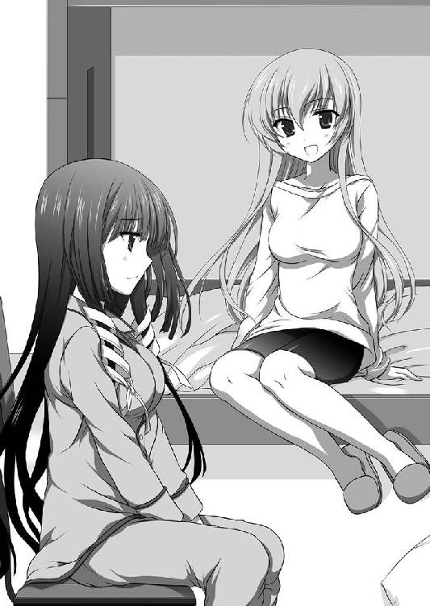
その時に心身共に大きな傷を受けて、生死の境をさまよってた。孝介に傷を負わせたのは山童に取り込まれかけていた、さくや自身だ。
今も山童という怪物が生き残ってるのなら、その時の孝介の行いが報われないと感じていた。
「兄さんが全部終わらせたはずなのに、まだ終わっていない気がして......」
「なるほど......う〜〜ん。そうだね......こうちゃんとは何度かこういった話をした事があるんだけど......うう〜ん」
「銀子さんには手間を繰り返す事になってしまうかも知れませんが、よかったら教えて頂けませんか？」
「わかった。それじゃ、さくやちゃんの疑問の方から解いておこうかな」
沈むさくやと裏腹に、にっこりと笑みを浮かべた。
「まず一番気にしているこうちゃんの行いだけど、報われないなんて事は絶対にないよ。そのおかげで、山童になった動物たちも救われてるのは間違いないから」
「そうなのですか？」
「そうだよ。完全に怪物になっちゃったようなのは、もう出ないだろうしね」
「......ああ......」
「そもそも山童っていうのは、コレだしね」
ポケットから青いプレート......天女の羽衣を取り出して、さくやに見せた。
天女の意識に支配され山童を統制していたさくやには、当然その記憶もある。
銀子の姉である皆神家の初代の天女は、人を愛し、そして人に裏切られた。
彼女の夫であるさくやの祖先を殺した人間達は、天女の持つ力と不老不死の秘密を探ろうと、天女に果てのない責め苦を与えた。
何十年にも及ぶ責め苦に積もった憎しみ、怒り。そして絶望と憎悪が、彼女の羽衣に一つの命令を刻み込ませる事になった。
人に災いあれ。
形を失い、御奈神の山にばらまかれた羽衣は、動物の体内に取り込まれる。
生物の生き死にのサイクルと共に、羽衣は増殖を続け、水に、風に乗って拡散をしてどこまでも広がっていく。
一定量を体内に取り込んだ生物は、羽衣の核に刻まれた命令を受けて人を襲うようになる。
それがさくやが知り、夏の事件で遭遇した山童だった。
「さくやちゃんも知っての通り、羽衣を体内に入れて命令を受けて人を襲う動物を人間は山童って呼んでた。いつしか人を襲う怪物の名前になって、やがて動物とは呼べないようなモノまでそう呼ばれるようになって、後は知っての通り」
「......はい」
だから問題がある。
今の話からすると人を襲うから山童のはずだ。
孝介が天女が残した呪いを失くしたはずなのに、今もまだ残り続けている。
「でもそれは、あくまで事情を知ってる私たちの話。山にいる怪物をそう名付けた人は、そこまで深く事情を知らない訳だからもっと単純だよ。単に山に居る怪物だからそう呼んでるだけで、今はそっちの方が正解になってるよ」
「そうなんですか......？」
「うん。紛らわしかったら私も別の呼び方考えようか？」
「じゃあ、積極的に人を襲うような事は、もう無いと考えていいのでしょうか」
「もちろん。そう命令を出し続けていた羽衣の核は、こうちゃんが命令を上書きしてリセットしちゃったしね」
「......よかったです」
大きく、胸をなでおろした。
怪物の話を聞いた時から、胸の奥底に巣食っていた暗い思いが一つ消えた。
「でもこれもまた紛らわしい所なんだけど......」
どう説明したものかと、銀子が頭をかく。
「動物って別に命令されなくても、人を襲ったりするものなんだよね。同じに見えてもそれぞれ性格も違ったりするし。例えば同じ犬でも、臆病で人から逃げるのも居れば、人を見ればすぐに噛みつこうとするのもいたり」
「それは、そういうのもいますね......」
「で、その攻撃的な方が羽衣を取り込んじゃった場合、すごく頑丈で死にづらくて、人を見れば噛みつく動物になっちゃうの。......でもこれって誰からも命令されてないだけで、やってる事は呪いを受けてた山童と同じだよね」
「う......た、確かに」
身も蓋もない台詞に思わずうめく。
「あ、で、ですが。羽衣も兄さんは回収してたはずです。ですから問題ないのでは？」
「それは無理だよ。そして、こうちゃん本人も分かってる。あの時、さくやちゃんを核に融合してヌエになろうとしていた動物からは回収できたと思うけれど。間に合わなくて、そのまま逃げだしたのもいるんじゃないかな」
「じゃあ今回怪物と言われているのが、本当の意味で怪物である可能性も......」
「うん。ある」
一抹の望みを潰されて、肩を落とした。
結局の所、皆神の始祖のしりぬぐいを銀子がし続けているのは変わらないのだ。
以前ほど人が被害に遭う事態は減っただろうけれど、いつどこに潜んでいるのか分からない。
「といっても、私から見ればなかなか死なないだけの動物にすぎないけどね。本当の怪物ってどうしようも無いものだから」
さくや自身を核として巨大な怪物を形成しつつあったヌエのように、事件の時には言葉通りの怪物と呼べるものがいた。
今はそれらである心配が無いのだから、少しは安心ともいえる。
「さーて、そろそろ寝ようか。明日は忙しくなるよ」
「はい」
電気を消してベッドに入る。
乾かしていた髪もすっかり乾いていた。
明かりの消えた室内で、銀子の穏やかな寝息を聞きながら思う。
明日、兄さんに連絡をしてみよう。今回の事が始まってからメールも打ってないけれど、事情を話しておこう。
心配させてしまったとしても、私は大丈夫だと言っておこう。
全ては明日の事だ。
だから今日は怪我人が出ませんように......。
さくやが起きた時には、既に銀子は身支度を整えていた。
今朝は夢は、何も見なかった。
頭に血が回らない。
しばらくすれば思考も活性化してくるので、ぼんやりと着替えながら、朝の覚醒を待っている。
「私は森の中でも見にいってこようかな。帰ってきた後は部屋には勝手に入っちゃっていい？」
「はい......だいじょうぶ......です」
「さくやちゃん、ほんっと朝弱いんだね」
「......だいじょうぶ、です。もう目は覚めてます」
「ほんとうかなぁ」
着替えてるうちに目も覚めるだろう。
衣服を脱いで制服を手にとる。
「そういえば昨日また出たよ」
「..................！」
急速に血が巡るのを感じた。
ぼやけていた視界がクリアになる。
心臓が全力で血液を体内に送り込んでいる。動機が激しく嫌な汗が流れるのが分かった。
「でも私が敷地に入れないようにしておいたから、それで逃げていったみたい。今晩また来るかもしれないけど今の所は大丈夫だよ」
「......よかったです......ありがとうございます」
「逃がしちゃったから、まだまだこれからだけれどね」
「私も学園の方で見た人がいないか探してみます」
大体の待ち合わせの時間を決めて、外に出る。
朝から良い話を聞いたせいだろうか。冬の寒さが薄らいで感じられた。
教室に入ったさくやは、真っ先に友人達の姿を探した。
ほぼ無人に近い教室が広がっている。今日は銀子にあわせてそのまま出てきてしまったからか、早く来すぎてしまったようだ。
席に着いて、今日やるべき事を確認する。
まずは怪物の続報を集める事だ。
たとえ一件でも、あやふやな情報しか無くてもいい。何かしらでもあれば、対策を立てる材料にはなるだろう。
例え徒労に終わろうとも、兄がやっていた事に比べればずっと簡単なはずだから。
「怪物？ ああ、昨日なんか騒いでたよね」
「はい。あれからどうなったかが知りたいのですが」
「なんかすごい可愛い〜って話だよ」
「............はい？」
「あたし見た訳じゃないんだけど、そういう話を聞いたよ」
「ちょ、ちょっと待って下さい。だとするとどこから怪物の話が出てきたんですかっ」
「さぁ。見間違いじゃない？」
「............」
そういう物なのだろうか？
そもそも、この正反対の話の出所は一体どこなのだろう？
ただこれ以上は聞けそうにない。さくやは礼を言って打ち切った。
その後も休み時間のたびに、校舎を歩いてみた。
噂話が聞こえたら耳を傾けてみたが、一昨日さくや自身が聞かれた怪物に襲われた話と、勘違いだったという話が入り混じっていた。
『そりゃ事情が変わったんだろ』
昼休みに兄に相談する事にした。
「あっさり断言するんですね。兄さんの考える事情とはどのようなものですか？」
『そんなの俺が知る訳ないだろ。現地にいるのはお前なんだから』
「......からかってます？」
『そうじゃないって』
怒気を含んださくやの声に、言葉が足りないと思ったのか慌てて付け加えた。
『昨日まで語られてた内容に変化が出てるんだから、新情報が出てきたと考える方が近いだろ。元の話は怪我人が出た、どうやら怪物を見たらしいという情報が発端になって、それにさくやが遭遇しかけたモノなんかで想像が補足されて、噂として成立した訳だ。でも、元の話ももうちょっと細かく出来る』
「そうでしょうか？ 怪我をされた方が怪物をみて、それが噂の発端になっているのであれば、そうおかしな事には思いません」
『あ......っと、そうか......普通はそう考えてしまうのか......』
自分の指摘が常識的な物だと思っていたさくやは、孝介が何故急に考え込むのか分からなかった。
普通はという事は、孝介は異常な根拠で反論したと言える。そこまで極端ではなくても数少ない事例を持ち出そうとしていたと想像が出来た。
もちろん、話の根拠までは分からない。先を促さず、孝介の考えがまとまるのを待った。
『これは俺たちの山童についての認識の違いが原因だ』
「認識の違いですか？ 私と兄さんのでしょうか？」
『まさか。俺たちと他の人だよ。襲われたり怪我したり、年単位で山童に付き合ってる俺たちと、漠然としたイメージの中の怪物しか知らない人では同じ単語や同じモノを見ても違いが出てくる』
「それはそうだと思います」
『では、さくやの考える怪我人っていうのはどれくらいの規模だ？』
「......そんなの今さら言わなくても、山童に襲われたとしたら怪我の度合いは兄さんの方が良く知っているじゃないですか」
『ま、そりゃそうだ。身を持って味わったし実際に死にかけた。俺にとってもさくやにとっても印象が強すぎて、怪物による怪我と聞いてまずはそっちを思い浮かべる』
「ええ。ですからこうして銀子さんと一緒に──」
『この場合重要なのは、噂話の元を流したのは山童なんて言葉も知らない普通の女の子って所だ』
「..................」
言われて気づく。
そこを完全に失念していなかっただろうか？ 怪物が山童なら何も知らない生徒が襲われたら大変な事になると思った。それは事実だし急を要する事態だ。
では発端になった子は？ 救急車は出ていないのだから、きっと軽傷なのだろうと漠然と考えた。
しかし、本当に相手があの怪物化した動物なら、逃げ切る事は可能だろうか？
考えるまでもない。無理に決まっている。
となると、この場合の怪我というのはどの程度の事になるだろう？
『野犬に噛まれただけでも大騒ぎになってニュースが流れる。怪我人といってもそれ以下だが、先生が聞きに来ている辺り無視もできない話だ。野犬に噛まれる以下のレベルで重大事......学園だとどの程度だろう』
「......なるほど。それだと少し話が変わりますね」
『ああ。逃げる途中で転んで打撲か捻挫か......本人にとってはすごく痛いだろうけれど、他人からすればこう思われるだろう。怪物に遭遇したという割に怪我が軽いなと』
「兄さんの言った、事情が変わったの意味が分かりました。怪物に襲われて怪我というセンセーショナルな話題が過ぎれば、実際はどの程度だったのか？ という所に話は行きますよね」
『どうなるかを知ってる人間だと、自分の記憶の光景を当てはめれば済むからな。何も知らない人ほど知ろうとする。......正直俺も、さくやから聞いて痛みを思い出したくらいだ』
「......お大事になさってください」
『最近寒くて塞がった所が痛むんだよなぁ。優しい妹が付きっきりでいたわってくれないかなー』
「お正月で良ければ一緒にこたつに入ってお昼寝くらいはしてあげますよ」
『優しい妹でお兄ちゃん嬉しいよ』
「たっぷり喜んで下さい。そしてお年玉下さい」
『鬼めっ！』
話が脱線しきってしまった。
軽く咳払いをして、話を戻す。
「心辺りのある人が噂を上書きしたと考えても間違いなさそうでしょうか」
『昨日の今日で話題が変わるなら、そういう事だろう。でも口先で上書き出来るもんかな？ 怪物の正体っていう証拠でもあれば別だけど』
「......そうですね。でもそこは私の方に──」
心当たりが、と続けようとした時、不意に声が響いた。
校舎裏からも少し離れた所。森の方だ。
『さくや？』
「すみません切ります。後でまた知恵を借りるかもしれません」
『そんときは遠慮なくな』
電話を切って声の方向に行く。
校舎裏の森の入り口。ここは昨日も通った場所だ。小柄な後輩とも会った。
となるとこの先にいるのは......。
歩幅を落とし、木の陰になるように選んで歩く。
聞こえてくる怒声に聞き覚えはなかった。一方が一方を怒鳴りつけているような調子だ。
物影から覗きこむように顔を出した。
最初に見えたのは腰くらいまでの高さのある柵だ。併設されるように物置小屋のような物が見える。
柵の中には犬小屋があり、竹箒などの清掃用具が立てかけられていた。
犬小屋から離れた所に出入り口があり、そこに女の子が二人立っていた。
「あんた何テキトーな事言ってんのよ！ あたしが見たって言ってるでしょっ」
「で、でも......」
穂波は怒声に肩をすくめ、うつむいている。
それを見てか、もう一人が声を張り上げた。
右足は学園指定のローファーだったが、左足は包帯で固められており、松葉杖に支えられていた。
「あんたが変な噂流したせいで、登校してきてあたしがなんて言われたと思う!? 狸に驚いて無様に転んで恥ずかしいのを誤魔化したなんて笑われたのよっ。嘘言ってないのに！ なんでこんな思いしなくちゃいけないのよっ」
「そ、それは......っ」
「なんでこんな目にあわなくちゃいけないのよっ。怖い思いして！ すごく痛くて、もう死んじゃうかもって思ったのに！ なんで何も知らない連中に笑われないといけないのよっ！ 何とか言いなさいよっ」
「ごめんなさい。ごめんなさい。本当に......」
会話に割り込む前に、胸に手を当てて呼吸を落ち着ける。
これから先、間違えたら彼女たちの心もプライドも傷つける。
そしていくつか疑問が解けた。
怪我した本人が見つからないのは、病院に行っていたからだ。
昨日休んで今朝登校してきた時に上書きされた噂を聞いて、犯人を探していたのだろう。
分からないのはどうしてそんな嘘をついたかだ。
無論、想像は出来る。しかし、乏しい状況判断からの想像で押し通しては真実を見誤ってしまう。
......どうしましょう？
しかし答えはあっさり出た。
真実が分からないなら、本人に話して貰えばいいだけだ。きっと怒声を上げている子も、下手に仲裁に入るよりも耳を貸してくれるだろう。
「少々よろしいでしょうか」
勤めて冷たい声で──兄の軽口を黙らせる時を意識しながら姿を現した。
「皆神先輩......」
伏せていた顔をあげる。目尻に涙が溜まっている。
「......なんですか？ 先輩。事情も知らないくせに余計なちょっかい入れないで下さい」
「大体把握しています」
何食わぬ顔で言い放つ。
表情を動かなさいようにするのに苦労した。
下級生からのケンカ腰の態度も意に介さず歩み寄ってくる上級生に、やや気圧されたようだ。
さくやが目の前に立つと、松葉杖を使って向き直った。
「どうして怪物の話を差し障りない物にすり替えたんですか？」
「──っ」
怪我をした子ではなく、穂波に単刀直入に訪ねた。
「そ、それは」
「ほらっ！ あんたのやってる事はおかしいのよっ。だからこうして先輩も──」
「少々お待ち下さい。今は私が聞いています」
「......うっ」
怒気の籠った視線を向けられる。
内心でごめんなさいごめんなさいと念仏のように唱えた。
ここでどっちかに肩入れしたら、こじれて修復不可能になる。
冷たい上級生が一方的に場をかき回す方が、傷は少なくなるはずだ。
「そ、それは、あのっ。悪気があった訳じゃなくて」
「怪我をして保護されている動物がいましたよね。それが関係していますか？」
「なんですか？ それ。そんなのいたんですか？ ......あ、もしかしてそれがあたしを襲った──」
「いえ、それも違うと思います」
さくやに制されて、とてもやりづらそうにしている。
自分の味方だと思った先輩が話の腰を折るばかりで、困惑が伝わってきた。
「そんな事が出来る子じゃないんです。大きな怪我していて、それで頭良くて、人懐っこくて。今は居なくなっちゃったんですけど、絶対に見つけて違うって証明しますからっ」
「そんな事聞いてないわよ。なんで嘘ついたのよ」
「......そもそも、嘘をついたのですか？」
「え、えっと、それは」
態度が引っ掛かって、聞いてみる。
当たらずとも遠からずだったようだ。
「あの......えっと」
「ここに居るのは私たちだけです。黙っていると誤解も解けませんよ」
「それは、先輩が......あ、皆神先輩じゃなくて、二年の先輩がきて、犯人探しだって......」
「それで、どうされたのですか？」
促すと目元に涙が溜まる。
悔しさを堪えてるのが分かる。
「私、違うって言ったんです！ そんな事が出来る子じゃないって。いっぱい、いっぱい説明して分かってくれたと思ったんですっ。そしたら、分かってくれなくて！ 私がそんな風に言ったって事にされて......っ」
「............」
嘘は言ってないように思える。
ここで動物が保護されてから怪物の事件が起こった。
昨日さくやと銀子が連想したように、関連付けて考えた生徒が他にも居たという事だろう。
しかし、それにしても広まる速度が速すぎる気がした。
単なる伝言ゲームの広がり方じゃない。具体性を伴っている。
「その怪我した子は、大勢の方が知ってるんですか？」
「はい......一年の子は大体......。来たのが授業中でしたし、休み時間にも大勢見に来てましたから」
「そういう事があったんですか？」
今度は隣で憮然としている、松葉杖の少女に訪ねる。
「......ええ。あったみたいですよ。あたしは興味無かったけど友達が見に行ったって」
「わかりました。ありがとうございます」
二人に頭を下げて、さくやは背を翻した。
「え、あの──っ」
「ちょっとっ。それだけですか!?」
背後から二人に呼び止められる。
ゆっくりと、出来るだけ雰囲気を作るようにして振り向いた。
「はい。私は噂の怪物を探してるだけですから。そういえばあなたは遭遇した当事者の方ですよね。一体どのようなモノでしたか教えて頂けますか？」
「......先輩は信じるんですか？ みんな信じないのに。笑い者にされたのにっ」
「信じる信じないも、全てはその時の様子を聞いてからです」
「............」
事務的なさくやに反感を覚えたのは間違いないだろう。
不味い態度だったかな？ と内心で悔む。せっかくの当事者の話が聞けなくなったら、大きく遠回りになってしまう。
「......一昨日の夜......外に出たんです」
ゆっくり、口を開く。
さくやは黙って、先を促した。
日が落ちると同時に、寮に戻った。
銀子は既に帰ってきており、部屋に入ると「おかえり〜」とのんびりした出迎えがあった。
「どうでした？ 危なくなかったですか？」
「大丈夫だよ。空振りに終わったから......って、これ変な返事だよね。探しにいったのに」
「そうなのですが......」
「さくやちゃんの方はどうだった？」
「なんだか噂話が錯綜してて、あまり参考にならないかもしれません」
「というと？」
「二つの話が混ざって、どこまでが本当か分からないんです。幸い......といっていいのかどうか、私も迷う所ですが......怪我をされた当事者の方からお話は聞いてきました」
「なんだ。それなら噂なんてどうでもいいじゃない。で、どうだったの？」
「良く分かりませんでした」
「............というと？」
「それが......」
夕方の話を思い出す。
彼女はさくやがやったように、夜に買い物に出ていた。
時刻は少し遅い。
とはいえ深夜になっては学園の敷地を出られなくなるので、夜一〇時前なのは間違いない。
最初は物音だった。
ばき、ぼき、ごきと何かを砕く音がしていた。
最初に聞いた時には、木の枝を折ってるんだと思った。
クリスマスリースにするにしても、まだ時期が早い。
何をしているのかと好奇心に駆られて覗きこんだ時──それがいた。
「大きな影に見えたと言っていました。体がごつごつとしていて、知ってる動物の形には見えなかったようです。それで逃げ出そうとした時に転んで足を捻挫してしまって。後は助け起こされるまでそのままだったようです」
「ふむふむ。大きな影か......山童がらみだとありきたりだね。でもこれだと大きさがはっきりと分かってるんじゃない？ 良く分からないなんて事もないよ」
「それが......本当にその大きさの動物がいたのかが不明なんです」
「ああ、現場見にいってみたんだ」
「はい」
話を聞いて、現場の場所を聞きだした。
学園の敷地を出てコンビニに向かう途中の道だから、敷地のすぐ近くだ。
そんな所で大きな音を立てる何かをしていたなら、痕跡が今も残ってるはず。
そう考えて行ってみたのだが、何も発見する事は出来なかった。
「怪我して保護された方は忽然と姿を消して、夜に見えた方は大きな音を立てて何かやってた......と」
「飼育部の子は、怪物が本当にいて食べられてしまったんじゃないかと気が気じゃないようです」
「その可能性もあるよね」
「怪我をした子は、捕まる前に逃がしたんだと疑ってるような感じでした」
「......その可能性もあるよね......」
銀子が肩を落とす。
結局、可能性だけで論じるなら何だって有りになってしまう。
「なので、良く分かりませんでした」
「そういう話なら仕方ないと思うよ。......もっとも、山童がらみっていっつもこんな感じだけど」
「あ。それで質問があるんですがいいですか？」
「どうぞー」
「昨日の話の続きになるんですが、もう人を襲うようにと命令を受けてなくて、羽衣が体に残ってるだけの死にづらい動物を山童として引き続き呼んでるという話でした。でもそうなると、今は全部ただの動物に過ぎない訳ですから、今さら普段食べないようなのを捕食したりするのでしょうか？」
「今はまだあると思うなぁ......あんまり時間も経ってないし」
「時間......というのは夏からの日数という意味ですよね。それは関係あります？」
「あるある。大アリだよ。だっていきなり習慣変えるなんて人間でも無理でしょ。それまでずっと同じモノを食べてたのに、ある日突然変わるなんて無いと思うよ」
「なるほど......普通の動物だからこそ、それまでの習慣に則る訳ですね」
「そういう事だね。これがもっと時間が経って、普通の動物の生命が終わるくらいの月日が流れてたら、また違ったのかもしれないけれど」
手掛かりにはならなさそうだ。
結局、兄がやっていたように足で探すしかないのだろうか？ 考え込むさくやに、銀子が小さく手をあげた。
「今度は私の方なんだけど、森の奥で何かに食べられたような動物の死体は見つけたよ」
「......どんなのでした？」
「残った毛皮からすると、元は犬か猫かな。綺麗に無くなってて殆ど分からなかった」
「怪我をされた方が聞いた物音も、やはり食事の音だったのでしょうか」
「骨まで食べるならその可能性はありそうだね。でもそうなると、そんな凶暴な奴がすぐ目の前に人が居るのにどうして襲わなかったんだろう？ って疑問にもなるけれど」
「やはりそれも習慣だったり......」
「人に警戒を抱いていて、迂闊な事はしない慎重な動物なら、十分あり得る話だね」
人を襲うモノだという先入観があるから、疑問がわいてくる。
しかし、あくまでただの動物だと思うと不可解に見える出来事にも理由を付けられそうにも思えたが、どうしても違和感がついて回っていた。
「それはやっぱりおかしいですよ」
「どうして？」
「本当にそこまで警戒心が強いなら、こんなに人間が多くいる場所の近くを餌場にするでしょうか。たった一日か二日だとしても、同じ所に居続けるなんて変です」
自分で言いながら、それならどういう事だろうと思案する。
今の山童は人を害するようにという命令を受けてない、ただの動物だ。
だが動物それぞれにも個性や性格の違いがある。同じ犬種だとして全ての犬が同一の性格になる訳ではない。食べ物の嗜好だって違うはずだ。
先ほど個体の習慣について話していた。
呪いのような命令が途絶えたとして、いきなり食べ物を変えられない。それは自らの生命活動のために行っていたからだ。
ならば人を害し続けてきた獣が、人の集団が住む場所の近くに位置取り続けるのは......。
「......あまり考えたくないのですが」
自分たちがそう思われているなんて考えたくもなかった。
動物の厩舎は目にした事があるのに、勝手な言い草だと自分で思いながらも、嫌悪感は湧いてくる。
「学園を餌場に考えている......とか......」
「............無いとは言い切れないね」
銀子の言葉もどこか歯切れの悪い物だった。
あまり時間を掛けてはいけない。
それが二人の出した結論だった。
「手分けして探しましょう」
今までも目撃情報は夜に出ている。見つけるなら早い方がいいだろう。
「さくやちゃんは危険かもしれないから、残っていた方がいいと思うけれど」
「見つけて連絡するだけなら大丈夫ですよ」
「こうちゃんもそうだけど、止めるのはもう諦めてるから大丈夫。それより服脱いで」
「え、ええ......!?」
「上だけでいいから」
「ちょ、ちょっと銀子さんっ!?」
動揺するさくやをよそに、羽衣をプレート状から布のように広げて手に持った。
伸縮性があるようには見えない金属に近い光沢をしているのに、横に引っ張るとそれだけいくらでも伸びていく。
さくやの手を取ると巻きつけた。
「とりあえず、見えてる所や噛まれたら危ない所に巻いておくから。これで一応安全だと思うけど無茶はしないで」
「あ、ありがとうございます」
意図が分かったので、抵抗をやめて上着を脱いだ。
裸になる必要があるのかと思ったが、銀子は気にせずインナーの上から巻いている。
肌に触れた瞬間だけ違和感があったが、すぐに馴染んで気にならなくなった。
「どれくらい強度があるんですか？」
「こんな感じかな？」
机の上にあるボールペンを手に取った。
背の部分を向けて、さくやの腹めがけて勢いよく振り下ろす。
「────！」
思わず目を閉じる......が、予想された衝撃は軽く、カンっという金属音にも似た乾いた音が響いただけだった。
「一定以上の圧力は跳ね返すから、銃で撃たれても平気だよ。動物の牙くらいなら通らないと思うけど、無茶はしないで」
「はぁ......便利ですね。これ」
「強い山童だとあんまり意味がないけどね」
「そうなんですか？ 防御を破られてしまうとか」
「それは平気なんだけど、体に巻くのに羽衣を大量に使っちゃうから攻撃力が激減しちゃうんだよ。これだと少し強い程度の山童でも倒せなくなっちゃうし、腕が無くなるくらいのちょっとした怪我なら治るから、私自身に対してはあんまり意味がないの。特に今は他の人に見えないようにしたり、声が漏れないようにいろんな使い方しているし。音の方は出発前に解除して羽衣に戻しておくつもり」
「それは絶対にちょっとした怪我ではありえないですが、まあ今さらおいといて......羽衣の総量が決まってるから、どのように振り分けるかという話ですか」
「そういう事だね」
「ちなみにどの程度落ちるんですか？」
「近接だと小さなナイフ作れるくらいかな。遠距離系は無理だね。例えば拘束したり、他の所にカメラみたいに設置したり。武器にする材料は今外においてるのを回収して使うつもりだから、また置き直すまで監視は出来なくなる。後は電撃も弱くなるかなぁ......言っちゃうと羽衣の分子同士をぶつけて作る静電気だから、手元の羽衣が減ると電子の量も減るんだよね」
「そんなに変わるものなんですか」
「万全な時でその後一時的に出力落ちてもいいなら雷の半分くらいは出るよ。五〇〇〇万ボルトくらいかな」
「......い、今だとどれくらいです？」
「スタンガンくらいじゃないかなぁ。ビリってするくらい」
ずいぶんな変化だ。
さくやの目からは万能の道具に見えても、それはそれで制限もあるらしい。
「でも羽衣の守りの万全じゃないから、無理はしないでね。呼吸できなくなるから顔も覆ってない。それから私が先に見つけたら、さくやちゃんに付けてる羽衣を解除するからそれが合図。そっちが先の場合は音声と位置は把握してるから信じて任せて」
「わかりました」
寮の前で二手に別れた。
銀子は食べ跡と思われる物があった森の中へ。
さくやは目撃者がいた入り口の方へ向かった。
警備室には今日も明かりが灯っている。
外に出るか、それとも敷地の中で様子を見るか、少しだけ考えた。
「こんばんは。外出したいのですがよろしいですか」
「はい。足元に気をつけて下さいね」
外に出る事にした。
今の所、敷地内での目撃情報は無い。外に出た方が可能性が高いだろう。
「......兄さんには、危ない事はするなと言っておきながら......はぁ」
自らを省みてため息をつく。
孝介が危険を承知で首を突っ込んだのは、こういう心境だったのか。事情を知るのが自分だけで、他人のために動く......それは一種の麻薬だと思った。
放っておけばいいのに、それが出来ない。
見捨てた気がして、心の中を苛まれる。
そんな心境に陥ると動いていた方が気楽になる。
御奈神村での兄もこんな気持ちだったのだろうか。
......いや違うはずだ。
自分自身の抱えている物は兄とは違う。天女の血に連なり、一度は取り込まれ掛けた。
その時の記憶、想い、絶望。
天女に端を発した怪物騒動は、自分の責任のように感じてしまう。
それは半分は思い込みだ。過去に起きた行動に未来の人間が責任を取れるはずがない。
しかし、もう半分心のどこかで、どうにか出来たんじゃないかと思えてならない。
心を支配される前にもっと抵抗が出来なかったのか。
それより以前から。それこそ子供の時に押さえこめていたのならば、今も母が生きていたのではないだろうか。
忸怩たる思いはさくやの胸の奥に棲みついて離れなかった。
暗がりを歩きながら、注意深く耳を済ませた。
僅かな物音も聞き逃してはならない。
......学園に怪物が出る事について、さくやは違和感を持っていた。
森を抜けて街が見えた時に、ふと思ったのだ。
御奈神村から離れたこんな所までやって来なくても、人を襲うなら民家は多数あった。
しかしこの辺りで大きな被害が出たという話は聞いた事がない。
では他に理由があるのではないだろうか？
可能性は三つ。
一つは勘違いである事。
山童とは関係ない事件を、さくやが大きく捉えすぎている。
二つ目は偶然。
人里は獣が棲む場所ではない。山を抜け、森の先にを目指して辿りついたのが、森の中にある学園というのは獣の常識からすれば分からなくもない。
そして最後は必然。
この学園に山童に深い関係のあるさくやがいて、その場所に現れたのは全て繋がっている。
「............」
森の出口まで辿りついて、来た道を戻る。
不審な動きに見えないようにするコツは、堂々と開き直る事。
もし尋ねられたら財布を忘れて、知り合いが通り掛かるまで待っていたと言い張るつもりだった。
幸運か、あるいは不運にもその言い訳を使う機会は訪れなかった。
森の奥から何かが聞こえた気がした。
それは人の耳には届くはずもない微かな音であったが、今のさくやには感じ取れた。
銀子の羽衣のおかげか、それとも一度獣の感覚を得た事の後遺症か、あるいは極度に集中していたのか、それは分からない。
今のさくやにとっては異変を感じ取れた事の方が重要で、それ以外はどうでもよかった。
足元すら見えない夜の森の中を駆け抜ける。
本来見えないはずの風景が、今のさくやには見えていた。
「──ひ──っ」
森を抜けだすと急激に視界が開けた。
小さく整備された森の中の空間だ。東間屋があり、森林浴が出来る散歩道になっている。
森の中を抜け、ショートカットして辿りついたさくやの前に、恐怖に震える小柄な少女と──怪物がいた。
唸り声をあげて、少女を睨んでいる。
買い物に行っていた帰りなのか、地面にはコンビニの袋が落ちて中身が散らばっていた。
「大丈夫ですか？」
急に現れたさくやを見て、何度も繰り返し頷く。
その顔に見覚えがある。夕方校舎裏であった飼育部の穂波だった。
湧き上がる緊張と恐怖を押さえながら、少女の前に出た。
いくら押さえこみ、一度はそう成りかけたとしていても、目の前の異形には身が竦んだ。
「せ、せんぱい......あ、あれ......なん、なんですか......？」
「落ち着いて。大丈夫ですから」
さくやの背にしがみつく後輩に、毅然と言った。
自分の声が震えないように。まっすぐ頼って貰うに値するように、努めてすくみあがりそうな胃の下に力を込めた。
目の前にいるのは、怪物としか言いようのない存在だった。
元ははたしてどんな生き物だったのだろう。鹿か何かの中型の野生動物か。
体のあちこちが変形して、元の形を止めていない。体の中央には大きな節があり、肉がラクダのように盛り上がっている。
前足の関節が通常の四足の動物より多い。途中から無理矢理他の物をくっつけているかのようだ。
元の鹿は他の動物を襲うなんて出来なかったはずだ。
それが今は猛々しい呼気を吐いて、さくやを見据えている。
「あなたはどうしてこんな所に？」
「わ、私、クロの無実を晴らしたくて、それでずっと探してて、そしたらこんな......」
「それはお世話をしていた動物ですよね。見つかりましたか？」
「い、いえ。それが......まだ......」
もしかしたら銀子が見たという死骸がそうなのかも知れない。
「そう......。......っ!?」
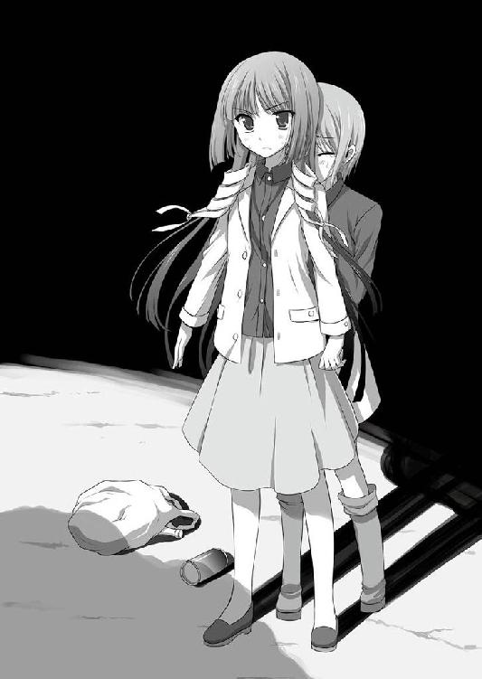
獣が、地面を蹴った。さくやの目にはそれしか映らなかった。
とっさに背後の少女を抱きしめてかばう。
──頼みます。銀子さん......！
羽衣がどれだけの防御があるのか分からない。自らの背を盾にして、衝撃に備えた。
ガンッという激しく金属を打ちすえる音と共に、重力の喪失を感じた。
抱えたまま大きく放りだされ、一瞬の浮遊と共に地を転がる。
抱きしめたままだったので下敷きになった片腕に二人分の体重が掛かった。
本来なら折れてもおかしくないはずだ。
「あ......れ......」
腕は折れていなかった。
激しい衝撃はあったが、ただそれだけ。激突した背を中心に鈍い痛みが全身を走ったが、大きな怪我にはなっていないようだった。
むしろかばったさくやよりも、庇われた少女の方が落下の痛みに喘いで咳きこんでいる。
「立てますか？」
「は、はい」
大きくはじかれた事で距離が出来た。
少女を助け起こして、背を押す。
「行って。走って下さい」
「で、でも先輩は──」
「私は大丈夫です。もうすぐ助けも来ますから」
「え？ だ、だれですか？」
混乱しているのか、自分がどうすべきか分かっていないらしい。
「行ってくださいっ」
再び背を押して、突き飛ばした。
鹿はさくやめがけて距離を取っている。
今の一撃を受けても平然としているのを訝しんでいるかのようだ。
それはあまりにも人間臭い。知恵があるかのような動きだ。
山童は元は天女の呪いを受けて動かされていた。羽衣の破片を大量に取り込んだ中には、人の思考回路を解するものがいてもおかしくない。
関節の多い足で地面を数度掻く。それはまるで助走のような──。
「──っっ！！」
多分、両手で防いだと思う。そうとしかさくやには認識できなかった。
走りだすと思った瞬間、跳ね飛ばされていた。
外傷を受けない変わりに衝撃が全身に響いてくる。
「ぐ......っ」
そう何度も受けられない。
山童はさくやをターゲットにしているようだ。
「あ──っ」
跳ね飛ばされたまま、転がって逃げる。
寸前までさくやの体があった場所を、蹄が通り過ぎて行った。
「はぁ......はぁ......っ」
危なかった。今のは本当に。
踏まれても大丈夫だったかもしれないけど、地響きを立てて走り抜ける巨躯を前に試す勇気は無い。
体の震えを押さえつける。
もう少し、時間を稼がないといけない。銀子がやってきてあの子が逃げ切れるまで。
「お待たせ！」
唐突に響き渡った明るい声は、天啓のように聞こえた。
さくやの前に降り立った銀子は、怪物の姿を油断なく見据える。
「......こんな大物が今まで大人しくしてたなんてね」
「大丈夫ですか......？」
「へーきへーき。でも羽衣返して貰うから、今度は怪我に気をつけてね」
「わかりました」
さくやに伸ばした手に重ね合わせる。
自身の体にあった何かが抜けて、銀子の方に流れていくような感覚があった。
「下がってて。もしそっちにいったら、何か障害物挟んで逃げて。回り込むの苦手そうな感じだから」
「はい」
銀子に任せて素直に下がった。
手にしたプレートが瞬時に長い刀に変わる。
反対の腕に残りの羽衣を巻きつけている。盾にするつもりだろう。
音も無く前に出た。
振り下ろされる刃を獣は大きく跳躍して避けた。
止められない刃が地面を穿つ。切れ味の良さが裏目に出たのか、刃は深々と地中に潜り込んだ。
「銀子さんっ！」
思わず、声が出た。
獣も失策と見てか、銀子めがけて突進する。
「下手に知恵があると......」
銀子は地に刃を食いこませたまま、一回転して振り抜いた。
「............え」
あまりにスムーズな動作に、眼前の光景が信じられない。
食い込んだ刃は羽衣を変形させるより先に、地にめり込んだ抵抗を感じさせずに、銀子の動きに合わせて円を描いていた。
蹄の前足を切断される。
突進を支えきれずに、地を滑るように倒れた。
「もう一回っ」
胴体を輪切りにしようと振り下ろされた刃を、後ろ足で跳ねて避ける。
「す......すごい......」
銀子の戦いぶりを見たのは初めてだった。
ヌエに取り込まれている時に、情報として銀子の戦いは伝わってきていた。
その時に銀子と対峙していたのは、羽衣の溶けた水で構成されたミズチという化け物だったが、水を相手には刃は意味をなさず、苦戦している情報が伝わってきていた。
強さを過小評価していたとは思わないが、羽衣を変化させた武器とあわせても想像以上の強さだ。
青い刀を振るたびに、怪物の体を寸断していく。
逃げ回るから致命傷は与え切れていないが、並の獣ならとうに命が尽き果てているダメージだ。
初めて、怪物が天に吠えた。
ベースとなったであろう鹿を連想させる、細く、高い声を響かせる。
「これで終わり......っ！」
振りかぶった刃は止まらず、長い首を切り落としていた。
首が落ちる。黒い血をまき散らし、転がって止まった。
頭部を失った巨躯が崩れ落ちる。
「ふぅ......」
地響きを立てて、失った前足を地に付けた。──刹那、首を失った体が跳ねた。
「え──きゃっ！」
銀子を跳ね飛ばし、さくやめがけて疾走する。
「────」
失った足をも動かし、頭部のない生命がさくやめがけて走り抜ける。
その時に確かに見た。大きな節くれに見えた胴から覗く、鋭い眼光を。
前足のみならず、幾つもの獣の合成で出来ていた。
今は羽衣の守りが無い。
突進を食らったら、今度こそひとたまりも無い。
目は、閉じなかった。
さくやが取り込まれ掛けたあの時、孝介は体中を山童に食われながらも目を閉じずに見据えていた。
だから、横合いから走り込むもう一匹の姿もはっきりと見えていた。
抱きかかえられそうな大きさの狸だった。
小柄な体を動かして、不格好に走ってくる。
前足に巻かれた包帯が夜の闇でも白く見えた。
「銀子さんっ」
体を起こす銀子めがけて一直線に走り込んでくる。
「く......っ」
銀子は立ち上がると羽衣で作った刃を伸ばした。
自分の体よりさくやを守る事を優先した。銀子自身ならば、人なら即死の傷でも問題なく回復する。
その場で振りかぶると、さくやめがけて疾走する怪物めがけて振り下ろした。
「あ──」
走り込んできた狸は、銀子に目もくれずに走り抜けた。
刃の下に滑り込むように、横から鹿だった獣に飛びかかると、胴体から突き出た犬の顔に食らいつく。
「まず......っ！」
銀子の焦りが響いた。
振り下ろされた刃は鹿だった体を両断し、そして今なお食らいつく狸の胴に半分埋まって、ようやく止まった。
一泊の間を置いて、長大な刀に跳ね飛ばされた巨躯がどさりと落ちる。
「あ、あの子は......？」
半ば両断され、横たわる獣の影からふらつきながら狸が姿を現した。
胴の傷は深く、歩くたびに体液がぼたぼたとこぼれていく。
倒れたままの山童に近づくと、切断された胴に首を突っ込んで、咀嚼しはじめた。
「......銀子さん......」
「うん......あの子もそうだね......」
やがて咀嚼をやめると、体を引きずるようにしてさくやと銀子の元にやってきた。
口元には青い石を咥えてる。
さくやの足元にそれを置くと、何かを期待するかのような眼差しで見上げた。
「これを、私に？」
言葉が通じるとは思わなかったが、意図は察したのだろう。
前足でさくやの方に押し出すと、学園とは反対側に歩きだした。
「待って！」
呼び止める声に、足を止める。
さくやの方を振り返ると、少しだけ待つ仕草をして、再び歩き出す。
やがて、再び振り向いた。
......まるで待ってるかのようだ。
「さくやちゃん、私が後を追う」
「あの子の手当てを。後輩が探してたんです。私も助けてくれましたからっ」
「分かってる。任せて......っと、その前に......」
銀子は倒した山童に近づくと、羽衣をかぶせるように覆った。
青い光がこぼれていく。
羽衣をはずした時には、青い炎が広がり静かにその体を灰に変えた。
「あの子がどこにいくのか分かったら連絡送る」
「......はい。よろしくお願いします」
待っていた狸に銀子が追いつくと、ハンカチを取り出して胴を縛った。
長さからすると、さくやに巻いたような羽衣の一部だったのかもしれない。
やがて先導されるように、銀子は夜の森の中に姿を消した。
「............はぁ......」
色々な事があった。
すぐに起き上がる気にもなれずに、東屋の柱に背を預けるように座り込む。
どれくらいそうしていただろうか。
遠くから大勢の人の声が聞こえてきた。
さくやを探し、声を張り上げている。安否を確認する物に混じって、聞き覚えのある女の子が繰り返し名を呼んでいる。
先頭にいるのは、先ほどさくやが逃がした後輩の女の子だった。
翌日、学園でのさくやの扱いは少しだけ変わった。
教員や警備員が駆け付けた時には、現場には大きく血の跡があり、体中汚れたさくやが一人座り込んでいた。
安心させるように平然と対する姿は、まるでさくやが身を張って後輩を守り、大立ち回りしたかのように受け取られてしまったのが気がかりだったが、翌日になってそれを悔んで机でのたうつ事になる。
結果、夜の出来事は新たな噂話として瞬く間に広がり、武勇伝として大きく伝わっていた。
級友たちの追及もそこそこに受け流し、どんな風に広まっているのか聞くが、どれも真相とは程遠い願望交じりの内容だ。
......放課後に聞く所によると、たった一日でＭＳＦのメンバーは四人から二十人に増えたらしい。
さくや様ならば当然ですと、鼻高々なＭＳＦ部長の御雪の言には苦笑するしかない。
そして、銀子から連絡があったのは、更に翌日の事だった。
届いたメールには簡潔な文章で、御奈神村に来て欲しいとだけ記されていた。
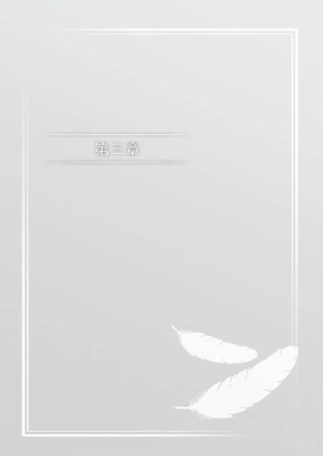
電車が止まる。さくやの通う学園のある清宮駅から御奈神村までは、快速を使えば三〇分も掛からない。
見慣れた風景が近づいてくるのを見ながら、孝介との電話を思い出していた。
先日の山童事件の後、孝介に連絡を取ったのは終わってから一日過ぎてからだった。
当日は疲労困憊ですぐに眠ってしまい、翌日は広がり続ける噂話に翻弄されていた。
さくやから事件の事を聞いた孝介は、長い時間考え込んだ後に『ま、怪我がなくてよかったな』とだけ言った。
自らを危険にさらした事を咎めるでもなく、身を案じてくれる。
色々と言いたい事はあったのだろうけれど、呑みこんでくれたのは信頼を感じられて嬉しかった。
それから土曜日の昼に御奈神村の改札で合流する事を打ち合わせして、泊まり先である岩永家に連絡を入れた。
「............」
あの山童と狸は、何の目的があってここにやってきたんだろう？ 御奈神村でそれが分かるのだろうか。
「あ......」
窓の外を白い影がちらつく。
季節の到来を示すように、白い粒が一つ落ちて窓に触れて雫になった。
車内のアナウンスに後押しされるように外に出た。
「よ。俺の方が早かったな」
「お久しぶりです」
孝介は既に到着していて、さくやを待っていた。
「......なんだかお前の冬服って久々に見るな」
「そういえばそうかもしれませんね。今年のお正月は家に戻っていないですから」
久々に見せるのなら、もっとおしゃれに気を使っても良かったかもしれない。
自分の服装を改めて見直してみるが、特におかしな所は無いだろう。
「良く似合ってると思う。夏の白いワンピースもシンプルでいいけど、普通の服着てても違和感ないな」
「普通の服で違和感出る人なんていませんよ......」
突っ込みを入れながら改札に向かう。
先日降った雪は、積もらずに一晩で消えてしまった。
山登りにはありがたいが、風情は無いと思う。思えば御奈神村とは夏の間の付き合いばかりだった。
四季折々の様々な顔を持っているだろうに、最近ようやく秋の紅葉を見る事が出来たくらいだ。
それ以前の四季の記憶は十年以上前になってしまう。
隣では孝介も感慨深そうにクリスマスムードに染まりつつある駅前広場を見ていた。
「おーい。こっちこっちー」
「あ、いろはさん」
長身の女性が大きく手を振っている。
肩口まで伸びた髪は前にあった時より少しだけ長い。ゆったりとしたマフラーにコートというファッションは、彼女の持つイメージを覆い隠して、普通の大人の女性に見えた。
「巫女服じゃないいろはも新鮮だな」
「あたしだっていつもいつも巫女服着てる訳じゃないわよ。特に駅前に来る時に着てたら変でしょうが」
「お久しぶりです」
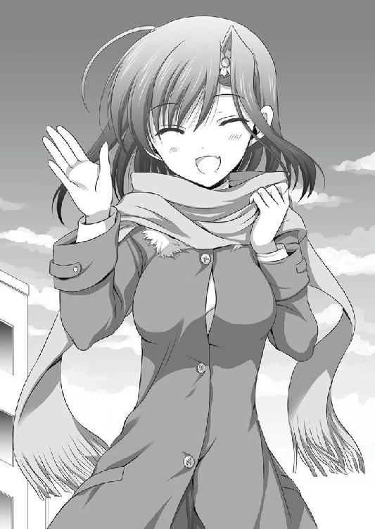
「おー、さくやちゃん、その服可愛いねー。誰かに見立てて貰ったの？」
「ありがとうございます。同じ寮の方に選んで頂きました」
「こーすけもこれくらいファッションセンス磨いておいた方がいいよ。変な服プレゼントしてドン引きされる前に」
「わかったわかった。お前のクリスマスプレゼントはミニスカサンタのコスプレな」
「いらないわよっ。大体うちじゃクリスマスのお祝いなんて大っぴらに出来ないっての」
「......さすがに神社の境内でクリスマスも変ですからね」
「でしょー？」
御奈神村には天女の伝説の残る神社が存在している。
春日神社という建立八〇〇年を超える歴史のある社は、天女降臨の地として観光地にもなっている。
春日いろははそこの一人娘で、今では祖母から引き継いで一通りの神事を執り行ってた。
御奈神村まではここからバスに乗ってしばらく掛かる。
そして着いたら銀子と合流し、山を登る事になる。
せっかく褒めて貰った服装だが、ついたら着替えなくてはならないだろう。
「......それじゃ、行きましょうか」
「だな」
さくやも孝介も表には出していないつもりだったが、生まれた頃から共にいた幼馴染は、二人の態度に何か感じ取ったのか......。
何か釈然としない顔をして、首を傾げていた。
「それでどうしたの？ 二人して急にやってくるなんて」
「なんだよ。きちゃ──」
「悪いなんて事は言わないわよ。そんなベタなやり取りも要らないからね」
「......ぐ」
「兄さん読まれてますね。まだまだ未熟です。修業を怠ってましたね」
「すまないさくや。後はお前が頼みだ」
「意味分からないわよっ」
こほんとわざとらしく咳払いして、いろはは話を戻した。
「二人が慌ただしいと、何かあったのかなって思っちゃうわけよ。例えば、この前の事件の事とか」
「......日本の巫女って霊感あるんだっけか」
「あるとは伺ってますけれど。兄さんの方がその手の事柄は詳しいのでは？」
「俺の知識も偏ってるからなぁ。明治前、明治以後、戦前、戦後で巫女の立場や扱いも変わってるし」
「いやだから。素直に認めればいいのに、なんでそう遠回りなのよ二人とも！」
「ごめんなさい」
「すみません」
二人でいろはに頭を下げた。
「......なんと説明していいのか、まだ分からない事なんです。ただ危険は無いと思います......多分......」
「そうあって欲しいけど。また血まみれのこーすけをさくやちゃんが運び込むなんてのはごめんだからね」
「あの時は死ぬかと思ったなぁ」
「ほんとよく生きてたわよ。怪我の治りも早かったし」
「人間の神秘って偉大だよな」
「......本当にね」
「また脱線してますよ。二人とも」
「お前が言うのかっ」
兄の指摘に、さくやは満足そうに頷いた。
「なかなか楽しいですね。これ」
「でしょう？ 病みつきになるのよ。だからもっとあたしにツッコミ入れさせる隙を作ってね」
「俺はお前らの会話に突っ込みたい......」
孝介の呆れに、さくやはこほんと咳払いをした。
「兄さんはともかく、皆さんはどうですか？ 朱音さんや美里さんともあれからご無沙汰しておりますが、変わりはないでしょうか」
「皆元気だよー。今日来るっていったら会えるの楽しみにしてたから、帰るまでに顔出してよ。朱音さんは今度雅楽の試験受けるって言ってたっけ。美里さんはたった数ヶ月じゃ変化なしだね。今も翔子ちゃんと沙智子ちゃんの担任の先生やってるよ」
「そりゃ先生が少しの間に変化あったら生徒も大変だしな。美里さんにとっては来年の新年度の方が頭痛いのかも」
「そうかもしれませんね。私も皆さんにお会いできるのが楽しみです」
一通りの幼馴染との会話を済ませて調子も出た所で、さくやは本題に入る事にした。
特に危険な事はないはずだ。しかし、春日神社の主としては気にしない訳にはいかないだろう。
日本全国の動物が異常行動を起こした時に、ある一つの目的地を目指して移動を始めた。
その終点がいろはの春日神社であり、より正確に言うならば裏の天女が降臨したという湖にいたさくやが目的だ。
目的地に近いにも関わらず、神社は一種の空白状態になっていた。
そのため多くの怪我人や避難した人で溢れて、混乱の極みを見せていた。
孝介にとっての戦いはさくやを取り戻す事であったが、いろはは人々を守る戦いをしていた。
当時は重苦しいだけの話が、今はこうして軽口にも出来るのだから、時間の流れの変化は偉大だとさくやは思う。
長い時を越えて不変だった呪い。時の積み重ねにより少しずつ変化していった兄との関係。
それぞれが違った結末を迎えている。
「だからぁ。お守りのおかげって話が出てるのよ」
「お守りっていっても、春日神社に供えられているのは依代としての物だろ。そんなありがたみ全開でいいのか？」
物想いにふけっている間に、二人の話題は更に変化していた。
春日神社の本殿に供えられている人形群は、さくやも見た事がある。
どうやらそれに対しての会話らしい事は知識で分かった。
「すみません。違いが良く分からないのですが。神社にお供えするなら、ありがたみのある物ではないのですか？」
「一般的なイメージだとそうなんだけど、神事に限っていうなら実はそうでもない。むしろ、ありがたくない物を奉ってる所の方が多かったりするんだよ」
「そういうものなんですか？」
孝介の言を疑う訳ではないが、本職のいろはに確認をする。
いろはは頷いて続けた。
「例えば神様にもいろんな側面があってね。あえてその神様の悪い部分......荒御魂っていうんだけど、そっちだけを奉ってるお社もあるよ。例えば菅原道真なんかは有名かな。今でこそ学問の神様だけど、元は落雷を起こして人々を苦しめたから、もう勘弁して下さいって事で神社が建てられたからね」
「その話、前に聞いた事があります。......確か授業中に先生の雑談だったような」
「それくらい有名って事。それでこーすけも、うちの人形をそんな風に見てるから、ありがたいって思うのは違うんじゃないかって言ってる訳ね」
「神社に人形ってきたら、依代以外ないだろ」
「それ以外ないと兄さんは言われましたが、藁人形なんかも想像しますけど。後は髪の伸びる日本人形なども」
子供の頃にテレビの怪談で見たそのままだが、そこはあえて触れなかった。
「それこそ依代だな。例えば藁人形の場合は、釘を打ち付ける対象を特定の誰かとして当てはめて呪いを掛ける。打ちつけられた人形を相手の代わりにするのも、相手の魂を藁人形に入れて釘を打つにしても、どっちにしろ対象と藁人形をイコールで結んでいる。これはもう立派な依代だ」
「なるほど......それは負の方面の話ですよね。でもお守りだとどうなるのでしょう？」
「藁人形が、人形のダメージと本人のダメージをイコールで繋ぐのと反対に、本人が受けるはずだったダメージを人形に肩代わりさせるという意味合いになるな」
「となると肩代わりした人形は、その分の傷を負う事になりますよね」
「いい所に気がつくな。流石俺の妹だ」
唐突に褒められて、さくやは目を僅かに見開いた。
何故褒められたのか理解が出来なかった。
「さくやちゃんが疑問に思ったのは、人形をお供えしても、後から見た時に何の変化もなかったら、それはお守りの機能を果たしてないんじゃないかって意味よね」
「はい。その通りです」
「そこで人形を供えた場合は一つの決まりごとがついて回る。人形の代替わりだ」
「ああ......夏のお祭り特集なんかで見た事がありますよ。人形を焼いたり、河に流したり」
「御奈神村の場合も焼くんだよな」
「一部の家の物以外はね」
焼いて消失しているのだから、人形に傷を確かめる必要はない。
結果、人形を供えたという事実だけが残り、消失した物は確認できないために、守られたという風聞だけが残る。
「......なんだか面白い話ではありますね」
「ま、そう思っていた方が気楽ってのは確かよね。こーすけもさくやちゃんも、夏祭りの時に人形作って奉納したんだから、きっと守ってくれるわよ」
「ま、そうあって欲しいもんだな」
バスが次の停留所を告げる。
三〇分くらいの車内だったが、会話に熱がこもっていたせいか、あっという間に感じた。
暖房の効いた車内から降りると、山から吹く寒風に身を竦めた。
「雪、積もらないでよかったわね」
「降ってたんだ。いつのまに......」
「ついこの前、ぱらぱらっとね。すぐに止んで溶けちゃった」
「東京だと年が明けないと降らないからな。ここ最近、満足に雪みてねーや」
「ここは積もるんだから、休みになったら来なさいよ。神社の雪かき手伝って貰うんだから」
「それはそれで重労働だな......」
二人の話に耳を傾けながら、さくやは御奈神村の冬の様子を目に焼きつけておこうと思った。
夏の匂いと蝉の声。山から吹き下ろす涼風に汗を冷やされながら、頬を伝う汗が地面に落ちて蒸発する......御奈神村と聞いて思い出すのは、そんな夏の光景だ。
今は人々が厚着をして、身をすくめるように歩いている。
冬の日差しは高さが足りない。山の影が長く伸びて、より一層寒々しく感じられた。
雪が降ればいいのに、と思った。
白化粧が施されれば、寒々しく寂しい風景に鮮やかな彩りが加わるのにと。
「あんたたちこれからどうするの？ 岩永さんちに直行？」
「......いや。ゆっくりする前に、早めに目的を果たしておきたい」
「そうですね......時間もどれだけ掛かるか分かりませんし」
神社の方で銀髪の女性が手を振っている。
「そっか。じゃあ荷物は預かっておくから、終わったら取りにきて」
「悪いな」
「今さらでしょ」
神社へ続く石段の下には、銀子が待っていた。
「行ってらっしゃい。銀子さん二人の事お願いしますね」
「どーんと任せてよ、この私がいれば大丈夫」
銀子のいつもの態度に笑顔で返して、孝介とさくやの荷物を手にいろはは石段を登って行った。
「お守りというなら、いろはさんかもしれませんね」
「んん？ 何の話？」
「春日神社の人形の話です。依代として人々を守ってるって。さくやにはいろはがやってくれる気づかいが、そう見えたんでしょう」
兄の補足に頷いて肯定する。
「あ〜......なるほどね」
だが対する銀子は、どこかぎこちない複雑な笑みを浮かべた。
神社へ続く石段の前に敷かれた道路をまっすぐ歩くと、御奈神村を通る河に突き当たる。
そこを上流に向かって歩くと、山の中腹までの直通ルートになっている。
「さっき、どうして浮かない顔をされたんですか？」
「ん？ 何の事？」
「春日神社の人形の話です」
「......ああ......うん。まあね」
はぐらかそうとする空気が漂っていたが、さくやは続けずに銀子の言葉を待った。
孝介も同じ気持ちのようで、無言でただ黙々と足を進める。
「......守り神っていっても、あんまりありがたいモノじゃないからね」
ぽつりと話しだしたのは、歩く地面が土から岩に変わった辺りの頃だった。
「あの習慣が出来たのは山童が多かった時代の頃なんだ。その時は今よりずっと大変で、神様に祈るしかなかった。その中で生まれたのは、ただ一年過ごせれば良いと言うこの風習。一年ごとに新しく作り替えて、その度に古い自分は死んだ新しく生まれ変わったとして新しい年に望みを託す。......悲しい生まれだよね」
「でも銀子さんが来た事で、それは果たされた訳ですよね」
「皆を助けられた訳じゃないよ。......そもそも、私は人を助けに来たんじゃないから」
自嘲するように薄くほほ笑んだ。
「いろはちゃんのご両親もそう。私は二人を見つけてあげられなかった。だから、あまりお守りって好きじゃないんだ」
「銀子さん......」
しばらく山を登る足音だけが聞こえていた。
「ところで、あの狸って今はどうなったんですか？」
「あ......うん。人懐っこい、頭のいい子だったよ」
「へ〜。翔子ちゃんが見たら喜ぶだろうな。でも狸だとごんたとケンカしそうでもあるな......」
今では御奈神村の守り神になった狐だ。
神社の裏で飼われているごんたは、少しずつ人にも慣れてきて観光客の前にも姿を現すようになってきているらしい。
いずれ御奈神村の名物になるかも知れないと、先日電話した時にいろはが言っていた。
「今はもうあの子に付けたアンカーもはずれちゃってるんだけど、今もこの山の中にいるのは間違いないよ。さくやちゃんを連れてくるって約束したから」
「......はい」
「ただ」
銀子は何かを言いかけて、止めた。
唐突な話題の停止に二人が銀子を見る。先を言うのを待っているのだが、続きの言葉は出て来なかった。
「ただ、なんです？」
さくやが後を引き継いで訪ねる。
「いや......二人とも、この先に何か嫌な物を見てしまうかも知れないけれど、大丈夫？」
それは当初言おうとしてた内容とは違うだろうけれど、詮索はしなかった。
銀子がそう判断したなら、きっと言葉にするのが難しい物だったのだろうと思っている。
「はい。あの子は私に用があるみたいでしたし、山童が......いえ、天女がらみの事件では全て私に責任が繋がっていると思っていますから」
「俺も同じです」
「......そっか。分かった」
頷いて今度は少しだけ意地悪な笑みを浮かべた。
「いやー、覚悟の程を聞いて、お姉さんほっとしちゃったよー。さすがにこの中に行くよーって言っても、頑張ろうなんて迂闊に言えないしね」
何時しか山の上の方まで登っていたらしい。
銀子は切り立った崖から、眼下に見える景色を手で示した。
山の中は木々が乱立しており、人の手が入っていない。眼前には鬱蒼とした森が広がっており、果たして歩ける所があるのかも分からない。
「こ、この中ですか？」
「場所は分かってるんですよね」
「やだなー。さっきアンカー外れたって言ったでしょ」
楽しそうにけらけらと笑う銀子と裏腹に、孝介とさくやの肩が徐々に落ちていく。
「大丈夫大丈夫。一日歩けばきっと何か見つかるよ」
「......そうだと、いいんですが......」
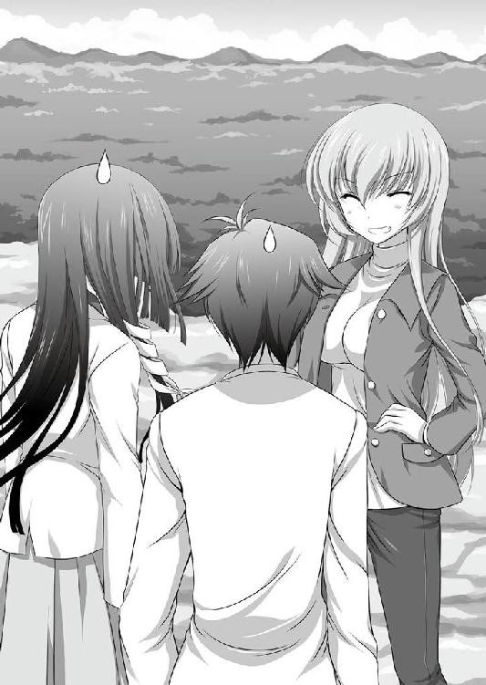
「というか、そもそも下に降りるのだけでも一日掛かりそうなんですけれど」
「そこはお姉さんにお任せあれ。ここなら誰にも見られないし、かるーく移動させてあげるよ」
ますます楽しそうな様子に、孝介とさくやのテンションは目に見えて落ちていく。
「......ここでグダついてても仕方ない。行くか」
「お弁当を用意してくれば良かったですね......」
「あんまり言うな。気が重くなる。でもまあ、銀子さんがいれば遭難はしないのが救いか」
「野宿も楽しいよー」
無責任な発言に二人の肩がますます重くなるのだった。
崖下への移動は銀子の羽衣で運んで貰った。
銀子の持つ青いプレートを広げれば、体を覆う羽衣になる。それには数多くの機能があり、機能を解放すれば空を飛ぶ事も造作も無かった。
「そういや二人を乗せて飛んだのって初めてだっけ？ どう？ 面白かった？」
「............いや、あんまり......」
「足元が不安定すぎて、怖すぎるんですけれど」
安全ベルトもなく、頼りないくらいに薄い布地に腰掛けろと言われた時は、樹海に入ると言われた時以上に絶望的な顔をしていた。
重量を無視して空間にとどまっている布切れに腰掛けると、予想以上に力強い動きで三人分の体を持ち上げる。
力は強いのに、地面から離れても捕まる所が無く、中心にいる銀子の両腕にしがみつくので精一杯だった。
帰りもあるのかと思うと気が滅入る。
森の中の歩みは快適とは言いづらかったが、地に足がついている事の大事さは実感できた。
先頭を銀子が歩き、羽衣を伸ばした薙刀のような形にして、背の高い草を薙いで道を作っていく。
どれだけ切っても切れ味は落ちる事なく、力を込めた様子もないのに、一振りで行く手を阻む草木が開けていく光景は便利だと思った。
「さっきの話なんだけれどね」
森に入ってどれくらい時間が過ぎたのか。
一通り雑談する内容も無くなり、無言で歩くだけになった頃だった。
「この前の事件で......正確には、二人のおかげで御奈神村は変わったのは間違いないよ。人に害をもたらすだけの山童はいなくなったし、もう少し後始末はしなくちゃいけないけど、これまでに比べたら放っておいても大丈夫なくらいだし」
今回の件も学園の敷地内でなかったら、さくやも積極的に関わろうとはしなかっただろう。
あの怪物にしても人に被害は出していなかった。
それはただの偶然かもしれないけれど、素直に嬉しい事だと言えた。
「そう言って貰えると嬉しいですが、銀子さんだから分かる視点なのかな......俺たちにはまだ実感が無くて」
「そうかもしれないね」
銀子は長い年月を御奈神村と共に過ごしている。
彼女が過ごした数百年の時間からすれば、僅か数ヶ月なんて一瞬の事だろう。
それでも変化はあったのなら、それは喜ばしい事だと孝介は思った。
「さっきの人形の話に戻るんだけど、一番最初に出来た頃ってどういう物だったか分かる？」
「先ほど銀子さんが言われた物ではなく......ですか？」
「あれは昔の話ではるけど、少し時間が経ってからかな。といっても百年か二百年か......、それくらいだけれど」
人の一生以上の時間を少しと言いきる事に、微かな困惑が無いじゃなかったが、これは銀子なりのヒントだと思った。
それだけの時間が経ってしまえば、当初の仕組みを作った人間は居なくなってしまう。
そうなれば、それだけ物事は最初の思惑を忘れて、形から連想される思想だけが残っていく。
「元々は、お守りなんて物じゃなかった。あれも呪いの一部だったんだよ」
「呪い......ですか？」
「あの人形って作った物は自分で使わないよね。その事は知ってる？」
「ええ。前にいろはから聞きました。人形を作って、それを親しい人や身近な人と交換する。相手の事を思って作るから、それだけ不幸を肩代わりしてくれる力が強い......という感じでしたけれど」
「でもそれ聞いた時に思わなかった？ 知り合いが奇数だったらどうするんだろうって」
「......実は少しだけ」
さくやの素直な告白に孝介も同意する。
形だけのお祭りなのだから、何重にも交換して回してしまえば良いだけだ。実際、今はそういう風にもしているらしい。
三人しかいないなら、それぞれ輪になって隣の人に回す。そうすれば自分の手元に人形は残らない。
「本当はもっとシンプルなものだったんだ。誰かと交換をして、その人が一年後も御奈神村に居るのが重要だった。一度交換した人形を翌年には廃棄しないといけないからね。村の外に出たとしても、お祭りに人を呼び戻す理由にもなった」
「交換した結果、それがお守りになるのが重要なのではなく、ただ単に交換するだけの目的だったんですか？」
「うん......だって、人形交換しても山童の牙や爪からは守ってくれないでしょ？」
「それは、そうですけれど」
ストレートに形骸化した迷信を切って捨てる。
銀子には何の嫌味もなく、お祭りという文化を理解し受け入れている上で、言葉を濁す事なく言っている。
「元気な人は村から出ていける。......でも、出ていけない人もすごく多かった。たった一年後にも知り合いが残っているという保証も無かった。だから、この仕組みが生まれたの」
「......だから呪いですか。人形を渡すという事は、自分を置いて村を出て行くなと言う無言の要求になった。でもそれは同時に、自分自身に掛ける枷にもなってしまったと」
「あ、そっか......人形を渡した側が村を出ていけないですしね。そもそも交換ですから、渡すだけの人も受け取るだけの人もいないですから」
「そういう事だね。本当の意味での発端は、もう少し軽い物だったのかもしれない。物を貸し借りして、お互い返すまでは死なないように......なんて言うね」
「......なんか映画で見た事あるシーンのような」
「少数でやると見せ場になるけど、大勢でやったら怖いよね」
「そうかもしれません」
森の中に入って、一時間ほどたった頃に休憩を挟んだ。
銀子はどこに持っていたのか、ジュースの缶を取り出すと二人に渡した。
「だから、これがその人の健康を祝うお祭りになったって聞いた時は驚いた。だって本当に相手の無事を願うなら、直ぐに村から離れた方がいいよって言う物だし」
「どうしてそこまで変化したのでしょう？ 銀子さんの言った通り、効果が無いなら直ぐに廃れて、止めてしまう物だと思うんですけれど。最初の目的が忘れられてないなら、むしろ被害が出るたびに続けるのは分かります。でも、お守りだったなら効果は無い訳ですから......」
「いや、それの答えはお前が自分で言ってるだろ」
さくやの疑問に兄から即答で指摘が入る。
「お守りとしての効果はあったんだよ。だから後世まで残り続けた。......まあ、その本人が意味ないとばっさり切ってるのが、また一部皮肉な部分があるというか」
「銀子さんがですか？」
「ああ。山に入った人が、銀子さんに助けられる。羽衣の仕組みなんて現代でも意味不明なんだから、昔ならそれこそ神様の仕業だ。......まあ、実際銀子さんはシロガネ様として村の昔話に残ってるくらいだから、そう考えた人は多かったんだろうな。つまり、神様の御利益だ」
「あ、じゃあ銀子さんに助けられた人が、村に戻って神様の事を皆に話したとして、それは素直に信じられたのでしょうか」
「それこそまさかだろ。すぐに信じられてたら、むしろ今まで儀式が残ったりもしない」
「そういうものなんですか？」
「そういうもんだ。広まるのが早いほど沈静化も早い。逆に世代を掛けてゆっくりとした速度で広まると、どこまでも広がり続けていく。銀子さんはそれだけ長い年月ここにいるんだから、ご利益が止まる事はない」
「な、なんだか本人の前でそこまで言われると、とっても恥ずかしい物があるんだけれど......」
白い頬を赤く染めて、所在なさげにしている。
何百年も生きているというのに、素直な少女のようだとさくやは思う。
こういう所があるから、普段のノリ優先の言動でも嫌味がないのは人徳なのだろう。
「だからまぁ、もしも本来の目的と変わって、今はご利益として信じられているのなら、それは銀子さんのおかげですね」
「......なんだか先ほど話をした、神様の違う側面の話題を思い出しました」
「そうだな」
天女の残した災いを、血縁の天女が収めている。
状況次第で同じ力を持っていても奮い方が正反対になる。
「銀子さんは当事者だから、いまいちピンと来ないかもしれませんけど、これまでの出来事があったから、人を守ってくれる守り神なんて言う風習が残ってるんだと思いますよ」
「......守れない人も多かったけどね」
「それでも、今村に生きている人の中には、銀子さんが祖先を助けなかったら生まれてない人も大勢いると思いますよ。あるいは俺とさくやもそうかもしれません」
「......そう言って貰えると......お祭りの事も、ちょっと見方が変わったような気がするよ」
「来年は一緒にお人形を供えてみますか？」
「それも良いかもしれないね」
休憩が終わり、再び森の中を歩きだす。
仲良く話してる二人の後ろを歩きながら、孝介は人形の風習の行く末について考えてみた。
先ほどはああ言ったが、この風習も徐々に廃れていくのかも知れない。
人を襲う山童と、襲われる人間。
そして人を守る銀子。
この三者が揃って、初めてご利益として成立していたものだ。
その一角が欠け、大昔とは治安も医療も段違いに良くなった今となっては、身近に危機が迫る事は滅多にないだろう。
そうなると身の安全を実感する機会は無く、徐々に形骸化して廃れていくのかもしれない。
......それでもいいか。と孝介は素直に思う。
時間と共に徐々に変化していくのなら、不幸を下敷きにして残る風習ではなく、その時には新しい物が出来あがっているだろうから。
「ところで銀子さん、あの狸の場所ですが本当に分からないんですか？」
「ですが兄さん。先ほどそうはっきりと言われていたじゃないですか」
「それにしてはまっすぐ歩いているからな。それに相手が銀子さんだから確認するくらいはしても良いだろ」
「う〜〜ん。まだもう少し先みたいだね」
あっさりとした返事にさくやは驚きながらも、納得した。
言われてみれば銀子の進み方に迷いがなかった。まっすぐ森の奥を目指して道を作っている。
足元を覆い隠す程の草を切り払う時も、その陰に探している狸がいない事は承知しているかのようだった。
「場所分かるんですか？」
「目印は外れちゃったけど、近づけば分かるよ。途中までは追跡できてたから」
「......よかった」
兄から漏れ聞こえた声は嘘偽りなく本音に思えた。
先の見えない森の中を歩いているのは精神的な圧迫感がついて回っていた。
以前、さくやと孝介は夜の森をさまよった事があった。
山童に追い立てられ、暗闇の中を包囲される気配と微かな獣の唸り声に追い詰められかけてた。
あの時の恐怖と焦燥感はしばらく尾を引いていた。一年以上経過し、様々な事があって今は平気になっているが、御奈神村から戻った後は学園の中の森に近づく時も不必要なまでに警戒をしてしまっていた。
木々の影や繁みの後ろに、得体の知れない怪物じみた獣がいるのではないかという思いがついて離れなかった。
でもそれはきっと、兄も同じだったのではないだろうか。
さくやの前では常に気丈で何も気にしていないという態度を崩していないが、怖くなかった訳がない。
「銀子さんは山の中を歩くのを怖いと思った事はないんですか？」
孤独は人間が持つ根底の恐怖だ。
いくら万能の羽衣を持つとはいえ、少しも恐怖を感じない事はないだろう。
「銀子さんなら無いんじゃないか？」
「どうしてそう思うんです？」
「だってこの場合の不安っていうのは、大抵が戻れないかもしれないという不安に根差した物だろ？ 銀子さんの場合は迷っても空飛んで出口向かえばいい訳だからな。足滑らせて崖下に落ちる事もないし」
「確かにそうですけれど......銀子さんも女性なんですし」
「そうだよー。もー。失礼しちゃうなー。こんな若くてかよわい美人なんだから、常日頃から怖い物でいっぱいだよ」
「すみません。兄さんの言う通りでしたね」
「だろ？」
「ちょっとちょっとー！ どうしてそうなるの！」
「......すみません。冗談です」
「今の絶対に半分は本気だった！」
「まあ、それはともかく」
「脇に置かれた!?」
「銀子さんだって怖い物がないとは言えないと思いますよ。今はそうでも、この世界にやってきた頃は全てが見知らぬ物ばかりですから、怖い思いもされたと思いますし」
「まあ、それはそうだけどね。刀で切られた時は痛かったし......うう〜ん。でも答えが難しいなぁ」
「さくやが言ってるのは精神的恐怖についてだな。俺は肉体的な物を中心に語ったから食い違ってたんだ」
「兄さんが例にあげた、帰れなくなるかも知れないという恐怖は精神的な物ではないのですか？」
「微妙に違うんじゃないかな。結局、遭難による精神的な圧迫はその後の体力低下や空腹、出口が分からない心理的閉塞感による肉体的不調......まあストレスだな。これが原因だ。逆に言えば出口を何時でも確認できるなら大幅に軽減されるんだよ」
「まるで実体験があるように語りますね」
「そりゃ実体験あるからな。御奈神村の事件以外にもサークルの活動やらなにやらで、山の中はよく行ってるから」
「あ......なるほど」
孝介は大学で民俗学のサークルに所属している。
教授の手伝いで山中のフィールドワークは幾度も経験しており、さくやと山の中で山童に追い立てられた時にも、その経験を生かしてさくやを奮い立たせて守っていた。
離れて暮らしている分だけ、兄の大学生活に対する印象は薄い。どうしても顔を合わせている時の兄で判断してしまう。
「山の上からでも見下ろせばゴールが見える時と、見下ろせないほど深い森の中だと、やっぱ精神的な圧迫感が違う。俺ももちろん銀子さんが恐怖を抱いた事が無いなんて言わないけど、森の中で怖いとは思わないんじゃないかな」
「なーんか、そうはっきり言われるとそれはそれで気になるんだけど......確かに本当の意味で怖いと思った事はないかな」
「ほらな」
「さくやちゃんの言った、この世界に来て一人になった時に感じた怖さというのはもちろんあるよ。でもそれは誰しも持つ物だろうし。むしろ、普段街中で生活している孝介くんやさくやちゃんが、今ここで怖いと思うのと同じなのかもね」
「生活圏の違いは未知との遭遇であり、孤独の恐怖ですからね。自分の常識とはかけ離れた生活を送ってる人を見ると、自らのアイデンティティを大きく揺さぶられてしまう。汚い行為と思っている行動で出来た作物を口に運び、それで生を繋いでる文明を受け入れられない人は多い。そこまで行かなかったとしても、生活サイクルが違うだけで人は多大なストレスを感じてしまう」
「さすがに、それは極端な例では？」
「そうでもないと思うぞ。今でこそ大航海時代の旅人達は傍若無人で新天地で非道の限りを尽くしたと言われているけど、その発端になった出来事もあるはずだ。無論、今の常識では押しかけ強盗のようにしか見えないけれど、全員が全員そうだった訳でもないからな」
「また飛躍しすぎのような」
「そうかな？ あがめる神の違いは常識とモラルの違いだ。ナイフとフォーク以外を使うのは野蛮で神への冒涜だと思ってる連中からすれば、ナイフもフォークも知らない土地の人たちは文明なんて持たないと見えても不思議じゃない。......もちろん逆に見れば、自らの文化を解さない他所者だったんだろう。個同士ならまだしも、集団同士になると激突は避けられなくなってしまう」
「それは恐怖ゆえにですか？」
「そういう事もあると、俺は思う。紛れ込んだ異物が少なければ取り込んでしまうか、外へ排除してしまえばそれで終わり。だけど、大きければ大きいほど、取り込む事も排除する事も出来ずに居座り続ける事になる。そうなったら、後は同じだ。取り込めるか排除できる程に片方のグループを小さくしてしまえばいい。......と、こういう流れになるな」
「私の場合は一人だったからね。結局はこっちの世界に慣れて居場所も出来た訳だけど......もしも、初めに降りてきた時に攻撃を仕掛けてきた人間達を、簡単に蹴散らせるくらいの人数でいたら......今こうしてここに居ないだろうね......」
「なんだか怖い話ですね」
「ずっと精神的恐怖についてに話だっただろう」
「いえ、そうではなく」
ただ何となく思ったのだ。
見知らぬ土地に対する恐怖や心理的圧迫。兄の言うグループの大きさというのを個人の力に変えてもそれは同じだ。自分に戦える力があったら、どうにかしてしまおうと考えるのは人も動物も変わらないかもしれない。
牙も爪も持たない戦いに向かない動物だとしても、種族として弱い訳じゃない。
様々な方法で今この時も生き残っている。
山童化した動物は、凶暴性を増して戦闘力が大きく上昇する。それは動物の身体能力に加えて、体を切断した程度じゃ死なないという卓越した生命力。更には人に対して攻撃を躊躇しないという凶暴性を獲得するからだ。
しかし、攻撃性を失った今の山童が個や少数の群れで生きるとしたら、動物本来の行動に戻るのだろうか。
学園に現れた二体の事が引っ掛かって離れない。
片方はさくやを襲い、片方は守ろうとした。
しかし、双方共に人を襲った形跡はない。
それは何故なのだろう......？
「さくや？」
「あ......ちょっと考え事を......」
「そうじゃなくて」
兄が先導して歩く銀子を示す。
銀子は立ち止り、二人が着くのを待っていた。長刀に変えた羽衣も既に元の形に戻している。
辿ってきた道を振り返ると、そこだけ綺麗になぎ倒されて踏まれ、人の歩く道になっていた。
「ついたよ」
二人をその先に促す。
しかし、その声がどこか硬いのは何故だろう。
つい先ほどまで、明るく孝介とやり取りしてたのが嘘のように沈痛な面持ちが見えるのは、果たしてどのような事情による物か。
兄も同じ物を感じ取ったのか、自然と顔を見合わせてしまう。
意を決し、小さく頷く。
銀子の示す先に、学園で遭遇した狸が居た。
傍らに倒れ伏すのは子供だろうか。
それがどのような状況なのか、確認しなくても分かる。既に生を終えてからずいぶんと時間が経っている。
寄りそう親には銀子の手当てか胴に包帯が巻かれている。寄りそい、気だるげに頭を持ち上げてさくやをまっすぐ見た。
「............」
息をのむ音が伝わってくる。それで隣の孝介も色を失ってるのが分かった。
さくやを見る呼気が荒い。
本来ならもう助からない傷だ。とっくに絶命してしかるべき物を、山童の強靭な生命力で持ちこたえている。
そして、すがるような眼差しでさくやを見据えていた。
「着いてこいって言ってるように見えたのは、ここに来て欲しかったんだね」
「でも、どうして」
よろけながら体を起こす。
傷が塞がっていないのか、既に赤黒く変色した包帯の下から真新しい体液がこぼれおちる。
「あ......」
思わず駆けよる。
しゃがみこんで手を伸ばすと、さくやの靴を噛んで引っ張った。
力の無い顎が滑り、バランスを崩す。
それを再び繰り返した所で、気づいた。
子供の方に案内しようとしている。
「......さくや」
さくやの肩に手を置いて、孝介が子狸だった亡骸を覗きこんだ。
顔をしかめてるのは、状態が酷いだけではないだろう。
「これ、羽衣か......？」
狸に問いかけているが、答えない。
ただすがるような眼で孝介とさくやを見上げている。
さくやも後を追って覗きこみ、兄の動揺を知った。亡骸の中に青い石が置かれている。
生物に入り込んだ羽衣は、その生命活動が終わる時に寄り集まって青い石のようになる。
核を持つ人間が近くにいれば、そちらで回収する事が出来るが、そうでないならば青いだけの石として残り続ける。
そして、子狸の亡骸におかれたのは一つだけではなかった。
これらに命令を与えていた核は、既に孝介が元の世界に戻るように命じている。
今現在の行方は分からないが、この世界にあったとしても手の届かない位置にあるだろう。
「これだけの羽衣を体内に持っていたら、死ぬと思えない......死んでる傷でも生き続けてしまう。実際、どう見ても生物としては死んでるはずの山童に何度も襲われたしな」
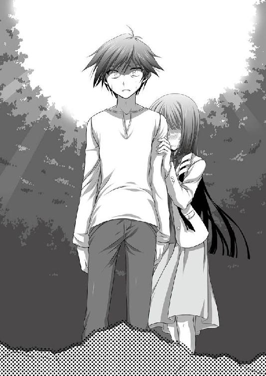
「ええ。でもそうなると、これは......」
「ああ。こいつが、集めたんだ」
まさかという思いと、予想通りという思考が入り乱れる。
夏の事件の時に、羽衣を体内に持つ動物達が天女の呪いを受けて、この御奈神の地を目指して来ていた。
死滅した物も多数いるだろうし、孝介が呪いを解き放った時に羽衣を体内から解き放ったモノもいるかもしれない。
その中心地点にいて、ニュースや報道も見ていながらさくやは完全に思考から抜け落ちていた事を思い知らされた。
何故さくやの元に現れたのか？ と考え続けていた。
その答えがここにある。
「............」
手負いの狸が、さくやを見上げてきゅぅと小さく鳴いた。
次に傍らにある小さな亡骸を見る。それを幾度も繰り返し、懇願するように、座り込んだ膝頭に頭を擦りつけた。
ぽとりと地面に小石のような物が落ちた。
それは羽衣の欠片である青い石だ。
口先でくわえてさくやの方に差しだす。
「これ......」
差し出されるまま手に取ると、今度は指を引っ張って、亡骸の方に導いた。
「......まさか......助けてって言うの？ この子を、私が......？」
呟きに答えるように、ひときわ長く、高く鳴いた。
小さな獣の嗚咽が、森の中に響いて広がっていく。とても澄んだ悲しい音は聞く者の胸を打ち、不意に目がしらに熱を感じた。
「......ぅ......っ......」
溢れだす涙を抑える事が出来なかった。
「ごめん。ごめんね......」
神ならざる人の身には、何も出来ない。自らの無力が今はただ悲しかった。
「本当に、ごめんね......っ」
今のさくやにはただ謝る事しか出来なかった。そして望む通りにできたとしても、それは死にながら生き続ける可哀想な獣を生み出すだけなのだ。
さくやの嗚咽の意味を、果たして獣の思考で理解出来たのか。
高く遠い、笛のような鳴き声が再び森の中に響いていた。
来た時と比べるまでもなく、帰りはあっというまだった。
目印を残し、銀子の羽衣を使って崖の上まで戻る。
来る時にはあれこれと言い合っていた空を飛ぶことへの驚きも、心が凍りついてしまったように、何の感情も動かなかった。
ただ眼下で小さくなる狸の姿と、追いかけてくるような鳴き声がいつまでも焼きついて離れなかった。
崖の上に降り立った。羽衣で空を飛ぶという感覚は強い違和感となって残っており、大地を踏む現実味がない。
見下ろした崖の先には先ほどと変わらず一面の緑が広がっていた。
広大な森に気が滅入る。そんな話をしてから数時間も経ってないはずなのに、今は違う場所のように見えていた。
「あの子、もうダメだと思う」
二人と同じように崖下の森を見ながら、銀子が言った。
「どのくらいでしょうか」
「多分、後数日のうちに。私が切った所が一番大きな傷だからその言い訳ではないんだけれど、元から体の中がボロボロだったから、多分あの傷が無くても年は越せなかったんじゃないかな」
「あんな子は......今もこの山にいるんですか？」
「うん。沢山いる」
「......そう、ですか......」
青ざめた顔に足元がふらついている。
孝介は崖下に足を滑らせないように、さくやの手を引いて支えた。
「疑問に思ってたんです......山童が人を襲うなら、なんで学園に来るまで何も騒ぎが起きてなかったんだろうって......もちろん、被害が出ないのは良い事だと思います。でも、学園で出会ったもう一体の山童は私に敵意を向けてました......」
「さくや」
「きっとこういう事だったんですね。あの子は私に救いを求めて、もう一体の山童は、自らの生を穢した事の怒りをぶつけに来ていた。そんな事にも気づかず、私は異形の姿を見て、ただ怖い、恐ろしいと思ってしまった......」
「さくや」
「私は......どうやって......償ったら......」
「さくやっ」
三度、孝介に名を呼ばれる。
初めて呼ばれていた事に気付いたさくやが顔を上げると、心配気に覗きこむ一対の瞳があった。
「今日の所は山を下りようと思います。あいつは少し苦しみを伸ばしてしまうかもしれませんけれど」
「うん、まあ私が見てるから大丈夫だよ」
「......ありがとうございます」
力なく頭を下げる。
それだけで膝が崩れてしまいそうになっていた。
「あ、さくやちゃん。待って」
「......？」
「さくやちゃんは悪くない。気にしないで......といっても無理だろうけれど、それだけは忘れないで」
「............」
「一番最初の発端は、さくやちゃんじゃない。私のお姉ちゃんに起きた事だから、全ての責任を背負おうとしちゃダメだよ。それだとお姉ちゃんの存在もさくやちゃんが塗り潰して消してしまう事になる。良い事も悪い事も、お姉ちゃんの行いは誰の物でもなくお姉ちゃんの......さくやちゃんのご先祖様の物だから、全部を背負おうと思っちゃダメ。それに、山童を切ったのは私だし、あの子はさくやちゃんを庇ってた」
「ですがそれは、自分の子を助けて貰うために」
「それが出来る保証なんて無いのは、きっと皆分かってた事だよ。それでも縋るしか無かったんだと思う」
「............」
「それだけ言いたかったの。さくやちゃんが気にする事じゃないよ。むしろ私の方こそごめんなさい。お姉ちゃんがさくやちゃんと心を重ねたから、自分の事のように感じるのは仕方ないと思うし、それもお姉ちゃんが残した罪だと思うから」
「銀子さん......」
「さくやちゃんをお願い」
「はい。また明日来ます。その時には......」
孝介は言い淀んだが、銀子とさくやにも伝わっていた。
あの山童はもう長くない。
今は羽衣で生かされてるだけの状態なのだから、どうするかを決めないといけない。
それが分かっていても、今の二人にはどうする事も出来そうになかった。
森から高い笛のような音が聞こえる。
崖を登る風が、岩肌にあたって奇妙な音を響かせる。
だがそれは、先ほど聞いた嗚咽のような鳴き声に驚くほど似ていた。
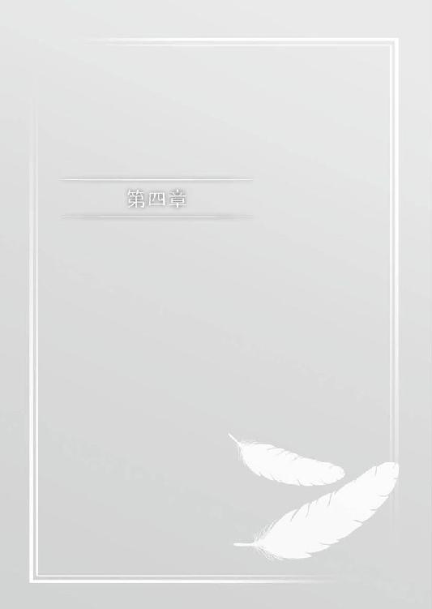
銀子と別れて御奈神村に戻ってくると、二人の体を言いようのない倦怠感が包み込んでいた。
先ほどの出来事がいつまでも尾を引いていて離れない。
村にやってきてから僅か数時間のはずが、長い間森の中にいた気がしてくる。
「二人ともいらっしゃい」
「おにいちゃん。さくやちゃん！ いらっしゃいっ！」
岩永家に着くと、叔母の皐月とその娘の翔子が出迎えてくれた。母の妹である皐月だが、容姿が母に酷似しているさくやとはあまり似てはいなかった。
さくやの長いストレートの黒髪に対して、亜麻色の髪は緩くウェーブが掛かっており、身長も高い訳ではない。
姉妹であっても似ても似つかない血族なのも、皆神家の特徴の一つとも言えた。
「急で申し訳ありません。お世話になります」
「いいのよ。来てくれて嬉しいわ」
「そうだよー！」
柔らかくほほ笑む皐月と反対に、翔子は満面の笑顔を浮かべて孝介とさくやの手を引っ張る。
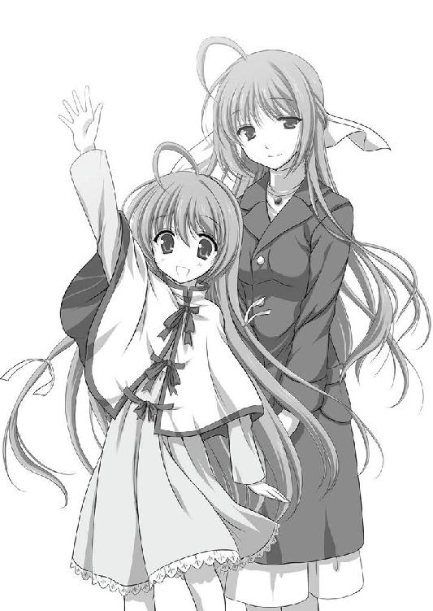
引っ込み思案で心を開いてくれなかった少女の面影はそこにはなく、明るく迎え入れてくれるのがとても嬉しい。
目の前の母子の姿に、さくやはずきりと胸の奥に痛みを感じた。
「二人とも疲れたでしょう。翔子はお風呂を入れてくれる？ 私ご飯作っちゃうから」
「はーい！」
「さ、二人とも。......何があったのかは今は聞かないから、ゆっくり休んでね」
「......はい......ありがとうございます」
夕食は冬らしく温かな鍋だった。
さくやの顔色は今も優れなく、食欲は無いと言っていたが、皐月が取り分けてくれたお椀に箸を伸ばすと、肩の力を抜いた。
「美味しい？」
「......はい。とても温まります。こちらのお野菜は御奈神村の物ですか？」
「ええ、そうよ。大根と葱は高見さんから頂いた物。人参は近所の菊池さんに貰ったの。お豆腐やお肉は買ってきた物だけれどね」
「美味しいです」
「よかった。沢山お代わりしてね。......あ、最後にご飯入れて雑炊にしようかしら。うどんもあるけれど、どっちがいい？」
「両方！」
「もう。翔子に聞いてるんじゃないの」
「俺も両方で」
「ふふ。分かりました。それじゃ先にうどんを入れて、まだ入りそうなら雑炊にしますね」
「ありがとうございます」
「............」
目の前のやり取りを、さくやはただ眺めていた。
どこか懐かしく遠い光景だった。
数ヶ月前の夏休みに滞在した時にも、日常にあった物なのに、今はそれが懐かしくて仕方がなかった。
こんな感傷はいけない。そう思うのに、脳裏に浮かぶのは子の亡骸を労わる小さな姿と、どこまでも澄んで響く高い鳴き声だけだった。
さくやを先に休ませて、孝介は一人居間で佇んでいた。
夏場と違い、窓を開ける事は出来ない。畳の上で寝ころんだまま、ガラス越しに月を見ていた。
「......今日は満月か」
「残念。後一日かしらね」
声に体ごと振り向くと、皐月の姿があった。
「今日はみんな休むのが早いのね。てっきり、久しぶりの帰郷に皆で飲むつもりだと思ったんだけれど」
「俺も今は酒は......」
「大丈夫。孝介くんはこっち」
湯気の立つグラスを置いた。
「軽く付き合ってちょうだい」
「はい」
皐月から熱燗を受け取るとグラスに少し注いだ。
「じゃ、改めてお帰りなさい」
「......はい。ただいま」
キンと小さな音を立てて入れ物が合わせられる。
湯気の立つグラスに口を付けると、暖かな烏龍茶だった。
「さくやちゃん、何かあったの？」
「そうですね......少しだけ」
「またこの前の事件の関係で？」
「はい」
皐月もこの村で過去に起きた悲劇と天女に端を発した事情は知っている。
天女は皆神家の始祖と呼べる存在だ。今でこそ結婚して家を出てるため姓は変わっているが、皐月も天女の子孫である事に変わりはなく無関係ではない。
さくやの変調を見て真っ先にそれを思い浮かべるのも当然の事と言えた。
「......あいつは、学園でも色々な事があったみたいです。今日も少し。自分が苦労するのは構わないけれど、他人に負担を掛けるのを嫌がる奴ですから、ちょっと堪えたみたいで......」
「......そうなんだ」
多くは聞かずに、酒を注いで静かに待つ。
孝介もさくやに起きた事を全て把握している訳じゃない。整理する時間を与えてくれるのはありがたかった。
「この前電話があった時には、もっと平和だったんです。クリスマスでミスコンに出されそうになったとか、学園に自分のファンクラブが出来ていて驚いたとか、そんな軽いノリの笑い話で。こっちに来たらもっと大げさに言って、笑いでも取ってやろうかと思ってたんですが......」
「......ファンクラブ？」
「あ、はい。なんかＭＳＦ......皆神さくやファンクラブと言うらしくて、流石にそれが校内活動として認められるって、どんな学園だよと思わずツッコミ入れてしまいましたが、あいつは困っててもすごく楽しそうでした」
「なんだか懐かしい響きね、それ」
「......懐かしい？」
「あ、ううん。こっちの話よ。とても楽しそうよね。保護者もクリスマスに参加できないのかしら」
「俺も出来れば行きたい所ですが、流石に女子寮には入れないだろうなぁ」
「下手したら、翌日から塀の中にお泊りする事になりそうだものね」
「ええ。それさえなきゃ行くんですが......はぁ」
「何もそこまでがっかりしなくても」
「仕方ないです。涙を飲んで諦めます」
「ふふ。写真を撮ってきて貰ったら？ 私も見てみたいから」
「......さくやが素直に言う事を聞きますかね」
「それに出場してたら、自分で撮る事も出来ないものね......」
「自分の恥ずかしい姿を人に見せるために、友達に撮影をお願いする......なんてのも、さくやのキャラじゃないですし」
「孝介くん。その言い方だと誤解が生じるわよ」
「ありがとうございます。今日はさくやが大人しいのでツッコミが大変ありがたいです」
「......本当にもう......」
呆れたように苦笑して、再び日本酒を注いだ。
「何か、手伝えることはある？」
「こうして俺たちを迎え入れてくれてるだけで、十分すぎるくらい助けられてますよ」
「あら、それは違うわよ」
孝介としては本音だったのだが、即答で返された。
どういう意味かと問う前に、皐月が続ける。
「それは私たちにとって当たり前の事だもの。当たり前の事をしても手助けをした事にはならないわ。もちろん、日常に感謝をしてくれるのはとても嬉しいものよ。当たり前といっても人の手も労力もお金も掛かっている。これに胡坐をかく事なく感謝を伝えられるのは、孝介くん達が獲得している美徳だわ。でも、今はそれだけの話じゃないのも分かっているでしょう？」
「......はい」
皐月に向けて今度ははっきりと頷く。誤魔化した事を、孝介は素直に認めた。
「動物の親子を見たんです。親は山童になっていて、今にも死に掛かってます。あるいはもう死んでるのを延命されてるだけなのかも知れません。子供の方はずいぶん前に死んでて、親が寄りそってました」
「......そう......」
皐月の声に陰りが生じる。
同じ物を思い出してるのは明らかだった。
孝介とさくやの母、皆神さやは約十年前の水害でこの世を去った。
引き金になったのは精神を天女に同調されかけたさくやであり、唐突に流れ込んだ鉄砲水は二人を押し流し、住人にも多数の被害者が出た。
銀子が母を発見した時に、孝介とさくやを抱きかかえるように寄りそいながら亡くなっていたらしい。
二人にはその時の記憶が無い。
水に押し流された時点で断絶し、気づいた時には母の葬式に繋がっている。
思い出せない空白だからこそ、さくやは記憶の断絶に苦しんでいる。
亡くした子の亡骸に尽くす姿が、母に重なったのも不思議な事ではないだろう。
「......母さんは俺たちを助けてくれました。そして、あの山童も子供のためにさくやを頼りました。......もちろん最初から無理な願いではあった訳ですが、それでもさくやは自分の責任だと思ってしまってるんでしょうね......」
「そんな事は無いと言ってあげたいけれど、それはさくやちゃん自身も分かってるのよね」
「......はい」
気がつかないのなら教えてあげればいい。
しかし、気づいてなお思い悩んでいる相手には、掛ける言葉が見つからなかった。
それは自分で納得するしかないからだ。
ある種の開き直りが出来るなら、もっとさくやの負担も軽かっただろうにと孝介は思う。
クリスマスの相談にしても、自分には関係ないで押し通せば終わった話だったのに、奔走した末に出る事に納得をしてしまった。
妹の真面目な所は微笑ましいと思うが、それは日常での話だ。
自然の摂理から離れた出来事にまで責任を感じる必要はないと思うのだが、これは孝介の考えであってさくやと同じではない。
それがまた、もどかしい気持ちになるのだった。
「......母さんといい、あの山童といい、親って子供が大事なものなんですね」
「それはどうかしらね」
同意されると思っていたのだが、皐月から出たのは意外な言葉だった。
「そう思わない家族も沢山いるわ。大事にしているつもりが、親が自分自身しか見ていない事もいっぱいある」
「......そうなんですか？」
「ええ、そういうものよ。そしてもちろん、孝介くんの言った側面を持つ人も沢山いると思う」
少しだけ引っ掛かりを感じて、孝介は聞き返した。
「俺が言ったみたいな人もいる......ではなく、俺が言ったような事をする人もいるって事ですか？ ......って、なんかちょっと分かりづらくなったな。でもなんというか、皐月さんの言い方だと気紛れな感じにも聞こえるというか」
「ふふ、そうかもしれないわね」
「......え、ホントに？」
孝介の驚きが面白かったのか、少し悪戯っぽく笑って続けた。
「誰しもとっさの行動なんて分からないのよ。その時になって初めて行動に出てしまう物だと思うの。それはつい体が動いたとか、やってから後悔したとか、そういう事もあるかもしれない。逆に常日頃からいざという時を待ちかまえて、自分は献身的に子供を守ろう......なんて考えてる人がいたら、私はそれは本当の気持ちかしら？ と思っちゃうわね。だって、日常を生きるなら、いざと言う時の一瞬より、長い目で見た食事や勉強の方が大事だもの」
「それは、いざという時の心構えとか、災害時の備えとか、そういう話ではなく？」
「違うわね。それはやって当然の事なのよ。用意できる物は用意した上で、私たちは日常を生きている。そして、唐突に割り込んでくる予想不能な事態だから、強く心に刻まれて後からそれだけが残り続けるの」
「..................なるほど」
「姉さんは孝介くん達を守った。その結果、命を落としたかもしれない。......でも絶対に確信を持って言えるのだけれど、姉さんは最初から命を落とす気は無かったと思うのよ。だってあの姉さんですもの」
「聞けば聞くほど、とんでもない人だったイメージしか湧かないんですが」
「そっちが日常の時の姉さんね。悪戯が大好きで皆が困って、そして笑ってるのが好きな人だったの。二人を悲しませる結果になってしまったのは、本人からすると不本意に違いないのよ」
「............ああ......そっか......」
そこまで言われて、ようやく皐月の本意を理解出来た。
献身的に子供を守ったのは事実だ。だが、それだけの人物ではない。
守られた側である孝介とさくやのイメージが、命の恩人であり子供のためにその身を投げ出した人物として、母の本意を知らずに定着してしまっているだけなのだ。
だからこそ、献身的に子を守った行動は側面にしか過ぎないと皐月は言った。
あの山童にしても、子が生きている間はその日の糧の事だけを考えていたはずだ。
今直面している状況だけで、相手の全人格を決定は出来ない。
「だから、答えの出ない物だと思う。心の中でどう思っていたかではなく、とっさに行動できたかという判断力と反射によって決定される物だから」
「......どれだけ大事に思っていても、人間なんて体が動かない事も多いですしね。俺も散々思い知りました」
「ええ。本当にそれだけの話だと、私は思う。あまり考えたくないけれど、もしも翔子が当時の二人のような事になったら、私は姉さんと同じ事をするかも知れない。でもそれは翔子の危険と隣り合わせだから、待ち望んでいる訳ではないの。......そうなるとやはりいざという時の状況というのは、本当に一時の物だと思うのよね」
「......なるほど」
「やっぱり上手く答えにはならないわね」
熱く語りすぎたとばかりに、手で頬に風を送る。
頬が赤く上気しているのは、アルコールのせいだけではないだろう。
「少し話を変えてもいい？」
「もちろんですけれど......」
皐月はくすと笑って、自分のグラスにお代わりを注いだ。
「この前の話なんだけれど、翔子が山の中を探検してたみたいでね。親としてはもしもの事があったらと思って心配だったんだけれど、沙智子ちゃんも一緒だったみたいだし、ごんたも居たから行ってらっしゃいって言ったの」
「......野良狐が一緒にいるからってのもすごい話ですよね。きっと知らない人には訳分からないでしょうね」
「そうよね。でも翔子はどうしても行きたいみたいで、心配だったけど送りだした。でも翔子は私の葛藤は分からないと思うし、親としても子供に知られるのはちょっと恥ずかしい物があるわね」
「そうかもしれませんね」
だとしても、危ない事をすると分かっていても送りだす事を愛してない事になる訳じゃない。
例えリスクがあったとしても止めたい気持ちを抑えて送り出す。それは別の勇気のいる事だ。
「結局大変な事になったみたいで、沙智子ちゃんと一緒に泥だらけになったみたいなの。私はその時はみてないんだけど、着ていった服が洗濯に出てたから」
「......怪我は大丈夫だったんですか？」
「少しはしたみたいだけど、軽い物ね。......でも次の日から翔子は晴れ晴れとした顔をしてたわ」
「良かったです」
「本当に」
しかし皐月は言葉とは裏腹に少しだけ暗い顔をして、小さなため息をついた。
「でもこれは結果論。もしも翔子が山の中で大きな事故にあったら、私は自分を許せないと思う。何で送りだしたんだろうって後悔しながら生きていくに違いないわ。かといって、そうしなかったら、今度は翔子に暗い顔をさせてたと思う......今回は結果的に良かったわ。でも次に似た事が起きたら、どちらが正解なのかは、本当に分からないわね」
「皐月さん......」
「だからね、孝介くん。迷ってる事があったら一番後悔しない方法を選ぶといいわ。それがきっと孝介くんらしい道になると思うから」
じんわりと、胸の奥にしみこんでくる。
感謝の言葉はすんなりと出てきた。
「ありがとうございます」
「どういたしまして。お代わりはいる？」
「......じゃあもう一杯だけ」
空になったグラスを取り、皐月が居間を出ていく。
窓から覗く月は、今も変わらず煌々と光り輝いていた。
翌朝、さくやと共に孝介は再び山を訪れていた。
「どうするか決まった？」
「はい」
「......はい」
さくやの声に力はなく、顔色もすぐれない。
「あの山童の力にはなれない。さくやを頼られたとしても、俺達が山童に対してするのは決まっています」
「............はい。私も同じです」
孝介に続いてさくやも同意する。
その返事は孝介には予想外の物だった。
「お前、それでいいのか？」
「いいも何も、兄さんが言いだした事じゃないですか」
「それはそうなんだけれど」
「昨日、帰ってからよく考えたんです。いろんな夢を見て、夜中も起きてしまって」
「......皐月さんとの話、聞いてたか？」
「なんです？ それ」
「あ、いや。それならいい」
聞いてないという事は、さくや自身が得た結論なのだろう。
口をはさまずに聞こうと、孝介は続きを促した。
「最後に見たのは、千年前の天女の......銀子さんのお姉さんの事でした。とても幸せそうに、この村で暮らしてました。......それを見て思い出したんです。事件に関わる悲劇は終わらせないといけない。責任を感じるだけではダメなんです。責任を負わないといけないのだと、そう思いました」
「......つまり？」
「既に撒かれてしまった残りの羽衣の回収に協力する事。兄さんが終わらせたものを、無駄にしてはいけない事。それから」
そこでさくやは一呼吸置いた。
「苦しんでるのを長引かせてはいけない事......です」
「......そっか」
孝介が空に返した羽衣を呼び寄せれば、体を癒し、子狸を亡骸のまま活動させる事も出来るかもしれない。
今この時点において、それは魅力的な事に思えた。
しかし、その強い魅力的な誘惑は、麻薬と同じだ。
人に過ぎた力を欲して、この地は千年の悲劇が訪れていた。
同じ事を繰り返してはいけない。人の手にあってはいけないのだから。
ならば、やる事は同じだった。
人として看取る事だけが、残された選択肢だった。
「わかった。二人ともそれでいいんだね」
「実際に羽衣の回収なんかは銀子さんにやって貰う事になりますけれど」
「うん......でも祈ってあげて欲しい。核はもうないけれど、きっと二人の祈りは通じるから」
さくやが正面を見据える。
昨日、訪れた時よりも憔悴した顔で力強く頷いた。
「......はい」
そうして、森の中、昨日と同じ場所で狸はさくや達を待っていた。
時間が無いと昨日銀子は言っていた。
呼吸が荒い。浅い息を繰り返すたびに小さなお腹が微かに動く。もうあまり呼吸も取れないようだった。
「家に連れていこうかとも思ったんだけど、この場所からどうしても離れてくれなくてね......一応、この辺り一帯は消毒して清潔になってる。虫も近寄らせてないよ」
「......はい」
亡骸にたかっていた虫も今は消えている。
体を起こす力も無いようで、伏せたままさくやを見上げていた。
「申し訳ありません。私にはあなたの望みを叶える力はありません」
ひざまづき前足を取った。
肉体の反射的な物か、それとも意味を理解出来たのか、触れた前足がさくやの手の中で微かに動く。
「私を恨んでくれて構いません。......苦しまないようにしますから」
前足の毛並みを優しく撫でる。
森の中にいてなお、なめらかな手触りをしていた。
二度、三度と呼吸が繰り返される。
さくやを見上げていた目を閉じ、微かに小さな声で、きゅぅと鳴いた。
「..................っ」
唇をかんだ。
名も無い出会ったばかりの動物なのに、どうしてここまで心が動かされるのだろう。
自分自身の過去に重ね合わせただけではない。それはきっと、この地に残された傷の深さを改めて知ったから。
愛した地を呪わざるを得なかった天女の苦しみを思い出したからだ。
「二人とも立って。少しだけ手を離した方がいい」
「わかりました」
立ち上がり、祈るように手をかざした。
もう呼吸はしていない。
そこに居るのはこの山に居た、獣の親子だったものだ。
もしも生の循環があり、次という物があるのなら。
今度はきっと穏やかに生きて欲しい。
地に落ちたままの羽衣に願いを掛ける。
やがて微かに青い光が立ち上り......二人の手を抜けて、空へと昇って行った。
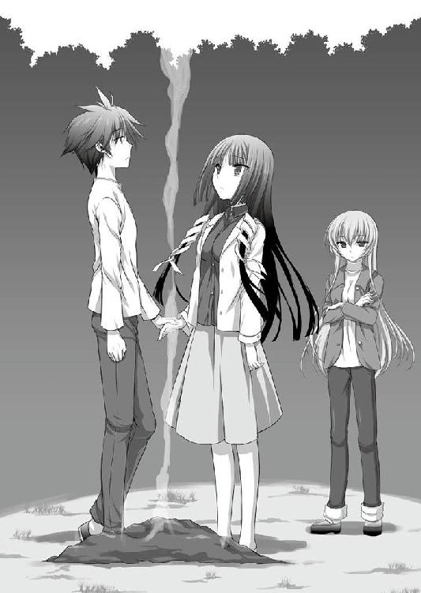
週の終わりというのは、言い知れぬ倦怠感を伴っている。
森から帰ってきた時にはまだお昼前だったのに、翔子やいろはと遊んでいたら、あっと言う間に日曜の夕方だ。
「もう少しゆっくりしてけばいいのに」
「まだ冬休みまで時間あるからなぁ」
「もう休んじゃえば？」
「出来るかそんなことっ！」
バスを待ちながら、兄といろはの雑談を何とはなしに聞いている。
御奈神村は今日も変わらず、平和で穏やかな一日を過ごしていた。
「でも、もうちょっと居て欲しかったなぁ」
「冬休みになったら来ますよ」
「......いや、無理だろ」
「どうしてです？」
さくやが首をかしげる。
自分の立てた計画すら忘れてると孝介は頭を抱えた。
「クリスマスパーティのミスコン出るんだろ？ こっち帰ってくるヒマなんてあんのかよ」
「ですが、二十五日だけですよ？ こちらでそこまで過ごして、前日くらいに戻れば大丈夫ではないかと」
「いや、そうじゃなくて」
「こーすけが言ってるのは、きっと事前の準備もあるんじゃないかって事よ。出るだけじゃなくて、皆と準備していくんでしょ？」
「あ......そうですね」
もしかしたら後輩の子達はさくやに何を着せるかで、また勝手に相談して進めてるのかもしれない。
変な服にならないように、顔を出して釘を刺すしかないだろう。
しかしそうなると、クリスマスまでに定期的に見て、必要なら一緒に買い物に行って、設営の支度もあるかもしれない。
受験勉強もおろそかにする訳にはいかないから......。
そこまで指折り数えてさくやは気付いた。冬休みの前半のスケジュールは既に埋まりきってしまっているのだと。
「ええ〜。じゃあさくやちゃんクリスマス来ないの？」
「いえ、翌日は来ますよ。大丈夫です」
「二十六日もクリスマスって言うんだっけ」
「私の中で言いますので、ツリーは片づけないでおいて下さいね」
「じゃあ翔子ちゃん、うちで何かやろっか」
「......流石に神社でクリスマスはなんか違うだろ......。俺はこっちに来るから、そしたら皆でパーティやろうか」
「わーい、やったぁっ」
「ああっ！ それずるいですよ。私が参加出来ないじゃないですかっ」
「寮の女の子たちと楽しくやるんだろ？ 両方同時は無理なんだから今回は諦めろ」
「そうなんですけれど......うう......」
本気で肩を落とすさくやの姿に、笑いがこぼれる。孝介はさくやの姿を見ながら、きっと女子寮のクリスマスも楽しい物になるのだろうと想像が出来た。
「そう言えば昨日、人形の依代の話してたよね」
「唐突にどうしたんだよ」
「いや、今ので思い出しちゃってさー」
「......クリスマスと、お盆に作る人形に関連が？」
「そっちはあまり無いんだけれど、あ、いや。関係あるのかな？ 身近な人の無事を祈る物って昨日は言っていたけれど、じゃあそうじゃなかった人たちの事はどうなるんだ？ って話になっちゃうでしょ」
「......そうだな......」
山童に襲われる以外にも、事故や病死も多かったはずだ。
その年に人形を交換した相手と、翌年も出来るとは限らない。人との交換の話を聞いた時にも疑問を感じたが、昔からある風習になっている時点で、その時に応じたシステムがあるのだろうと流してしまっていた。
「でもそれでも続ける人がいるんだよ。その人の事を偲ぶために、二体分入れさせて下さいって。今年も何人かいたかな」
「そうなんだ......」
「他にも誕生日に入れて欲しいとかね。生まれてからずっとお守りになりますようにって。これって生まれた事を祝福して忘れないって事でしょ」
「そういやクリスマスも誕生会だっけな。意識して過ごす人がどれだけいるか分からないけど」
「でも、こうして機会があれば思い出す。きっとそういう風に思う事でも、今まで続いてきたんじゃないかな」
「......亡くなった人を忘れないように......ですか」
「そして身近に感じるためにね。あっちの世界でも苦労してるかもしれないから、守ってあげてねって言う思いもあるのかも」
「死んでまで苦労するのは嫌だな」
さらりと言った孝介だが、その言葉には妙に強い実感がこもっていた。
「本当です」
「何が発端でどう言う風に始まったのか知らないけれど、続いてる事にいろんな人が意味を見出してくんだよね。なんだか面白いね」
「そうなのかなぁ。よく分からない」
「翔子ちゃんが大きくなった頃には、もっと違う意味がついてたりしてね」
「ええ〜〜。そんな事ないよ」
「いやー、あり得るかも」
夕空に楽しげな声が木霊していた。
それがあまりにも楽しかっただけに、帰りのバスは静かだった。
さくやは窓の外を見て、孝介は物想いに沈んでいる。
何時までも手を振る翔子の姿が、今でも印象的だった。
「......ついちまったな」
出会った時と同じ駅のホーム。
これから孝介は東京に戻り、さくやは寮へと帰る。
それぞれが違う道を行き、再びここで道を交えるには、少しだけ日数が必要だった。
「時間と共に訪れる見る者の変化......いろはってたまに核心的な事を言うよな」
「いろはさんはよく言われますよ。やはり社会経験と立場の違いがあるからでしょうか。年も大して変わらないのに、大人だと思います」
「同じ年の俺から見ても、たまにそう思うんだよな。......本人に言うと怒られるけど」
「ふふ、そうですね。でもそれは兄さんがよく怒らせてるから邪推されてしまうんですよ」
「へいへい」
さくやはひとしきり笑う。
「時間による変化ってのは怖いよな。俺たちがずっと続くと思いこんでる物でさえ、いつかは覆されてしまうのかもしれない。俺たち自身は変わらなくても、後から違う風に解釈されたりな。何も変わってない、変化はないはずなのに、俺たちを見た誰かの思い込みが真実になってしまったりとか......」
「......そうですね。それは確かに怖い事です。自分たちの想いの決定権を第三者が有している事になりますから」
さくやは続ける。
そこには力強さがあった。
「ですが、それすら跳ね返す程に続く物もあると思います。死しても寄りそい続けた山童の親子のように、疑問の余地も誤解も抱かせない程にまっすぐで強い物も、きっと」
それを決めるのは自分たち自身だと、さくやは孝介を見据えてまっすぐ言った。
「お前強くなったな」
「そうでしょうか......？」
自分の姿を見下ろしているが、そんな肉体の筋力の話なんてしてはいない。
妹の行動を笑いながら、孝介は言った。
「じゃ、またな」
「ええ。それではまた」
電車がホームに入ってくる。
背を向けると同時に、孝介の携帯にメールが入った。
──また会いましたね。
文面に驚いて振り向くと、携帯を片手にさくやが微笑んでいた。
「ふふ。冗談です。でも最近の兄さんはメールをさぼりがちなので、もう少し送って下さいね」
「善処するよ。......お前も、クリスマスの写真とって送れよな」
「......考えておきます」
発車のベルに後押しされるように、二人はそれぞれ違う道を行く。
遠く離れても心が繋がっているのを、感じていた......。
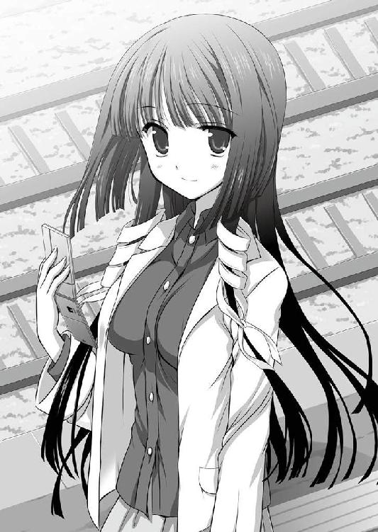
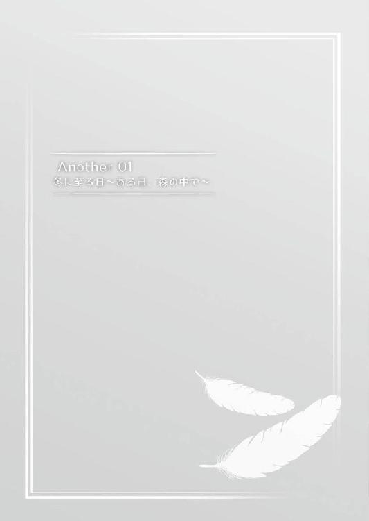
季節が年末に移り変わろうとしている。
夏の気配が過ぎさり、御奈神村でも厚着をする人が増えてきた。
バスから降りると、吹きすさぶ風の強さに翔子は襟元を合わせて身震いした。
もう少ししたらマフラーが必要になるかもしれない。
山に囲まれた御奈神村は夏場は暑く、冬は日の入りが早くなる。週末を迎えた今日の天気は快晴で雲ひとつなかったが、だからこそ冷えるのも早いのかもしれない。
バスに乗った時には傾き始めていた太陽が、もう山の向こうに姿を隠そうとしていた。
「何やってんのよ。早く降りなさいよ」
「あ、ごめん。沙智子ちゃん」
後ろから急かされてバスを降りる。
翔子の後に続いて高見沙智子が降りると、バスは次の停留所を目指して走りだした。
「うわっ。さむっ！ 何よこれー。昼間なんて暑いぐらいだったのに」
「だから上着持っていった方がいいよって言ったのに」
「うっさいっ。昼間は暑かったんだからしょーがないでしょ」
間髪いれずに、沙智子は大きなくしゃみをした。
半袖から見える素肌を抱きしめるように両手で擦り、身震いしている。
「これ着る？ わたし今まで着てたから」
「ふん。いらない。これであんたが風邪ひいたら寝ざめ悪くなるもんっ」
相変わらずの調子に苦笑しながら、二人は帰路についた。
途端、大きな音に翔子は足を止めた。
反射的に沙智子の方を見ると、目が合う。二人はおそるおそる背後を振り返った。
「え......何？ 事故？」
「わかんないけど......」
畑に面した長い通りは村から駅前まで一本道だ。まっすぐ続く道路につい速度を上げてしまうドライバーは珍しくない。
みれば先ほどのバス停の辺りにライトを付けた白い乗用車が停まっているのが見えた。
「事故かな」
「さあ。知んないわよ」
そう言いながらも、沙智子は振り返り車の方に向かっていく。
「あ、待って！」
翔子はその後を小走りで追いかけた。
事故らしき現場には車から降りた初老の男が一人辺りを見渡していた。
「おじさん何やってんの？ 事故？ けーさつ呼んだ？」
「んん？ ああ、高見さんとこのさっちゃんじゃねぇか。そっちは......ああ、岩永の娘さんか」
「こ、こんばんは」
「それで何やったのよ」
「いや、それがわかんねぇ」
男は誤魔化すでもなく、不思議そうに首を傾げた。
「はぁ？ なんかぶつかったんじゃないの？」
「多分そうだと思うんだけど、何も見えねぇんだよ。人って訳でもなかったから、犬かなんかだと思ったんだけど、どこにも見当たらなくてなぁ」
「んじゃ音は派手だったけど、怖がって走ってっちゃったとか」
「そーかもしんねぇけど、見えねぇ所に落ちてたらほったらかしとくのも気が引けるしな。ここらは田端さんちの畑だから、朝来た時に死骸転がってたら嫌な気分になるだろうしよ」
「......う、まあ確かにね。あたしも朝起きてお店の前掃除する時に、潰れたカエルあったら嫌な気持ちになるもん」
「夏はてぇへんそうだな」
「ほんと嫌になっちゃうわ」
一向に姿の見えない『ぶつかった物』への興味から雑談に話題を移している二人はそのままに、翔子は周囲を探してみる事にした。
車の下を覗きこむ。が、日の陰り始めた時刻ではよく見えないが、何も無い。
思い返すと足を止めて振り返るくらい大きな音がした。
車に轢かれたなら、そんな音はしないだろう。
「えっと......」
やっぱり畑の方に飛ばされてしまったのだろうか。
もしも怪我をしてるなら、早急に手当てをしてあげないと......。
そこまで考えて、金色の視線と目があった。
「え」
畑の中、風に吹かれる作物の隙間から金色の獣眼が翔子を睨みつけている。
そう取れるほどに、鋭い視線だった。
「あ、あの」
とっさに声を掛けてしまった。そうせざるを得ない程に、警戒心と強い敵意を感じる眼差しだった。
「何してんの？」
沙智子が無造作に近づいてくる。
その途端、視線の主は口元に何かを咥えると、山へ向けて走り去った。
「あ、まってっ」
手を伸ばすが、もうそこには何もいない。
「......待っても何も......人の言葉なんて分かる訳ないでしょーに。まあ、あんたの狐は分かってるっぽいけど、あんなの滅多にいないわよ」
「う、うん......」
既に走り去っていたが、直前に見えた物が気になっていた。
口にくわえていたのは小さく見えた。ならあれは子供だろうか。
となると子供が跳ねられてしまったのかもしれない。眼光がとても鋭かった。人に敵意を持ったとしても当然なのかも......。
「ありゃ狸だな」
突然の言葉に翔子の思考が中断される。
「たぬき？」
「おお。なんだ見た事ねぇのか」
「えっと写真でなら。本物ははじめて」
「この辺りにも昔は沢山いたんだがなぁ」
「今も居たじゃない」
何を言ってるのと言わんばかりに、沙智子が首を傾げた。
「そうじゃなくってだなぁ。......ほら、前に動物が大量にやってきた事件があっただろ。今のもそん時に外から来たんじゃねぇかな」
「なら、今まで見た事無かったのもおかしくないわね。というかもう理由は分かったんだから帰るわよ。何時までもこんな所にいたら風邪ひいちゃうわ」
「流石に半袖は寒いだろ。乗ってくか？」
「ん、まあ乗ってもいいわよ。ありがとう」
「ほれ、岩永の嬢ちゃんも早く乗れ」
「う、うん......ありがとうございます」
車のドアを開けて中に入る。
風が遮られるだけでも、ずいぶんと暖かく感じた。
やがて緩いエンジン音と共に車が走り出す。
窓の外の景色が流れていく。
翔子はやがて見えなくなるまで、先ほどの獣が走り去って行った方向を見ていた。
向けられた眼差しが、目に焼き付いて離れなかった。
翌朝、翔子は朝食よりも早い時間から山に来ていた。
山の入り口にあたる春日神社の裏には、青い湖がある。天女が降臨したと伝えられている場所で、御奈神村に残る神話の元になった所だ。
「ごんたー。いるー？」
そこから山へ向かって呼びかける。
しばらくして繁みを揺らす音と共に金色の毛並みを持った狐が顔を覗かせた。
「ごんた。おいで」
翔子が手招きすると、ごんたは答えるように小さく鳴いて駆け寄った。
後ろ足の片方が不自由なのか、一本を引きずるように他の三本の足を使ってる。
しかし、ぎこちない様子はなく動きも機敏だった。
「ごはんだよ。今日はいろはちゃんの代わりに持ってきたんだ」
翔子が見つけて世話をしていた狐は、今はなし崩し的に神社で飼われてる。
夏の事件──日本中の動物が御奈神村に押し寄せるという異常事態があった時に、この狐は翔子達を守るために戦った。
その姿を覚えている者が多く、野生の獣が身近に棲む事に異を唱える者はいなかった。
今では人を守ったお稲荷様の使いと言う老人もおり「やがて稲荷神社でも建てられるかもねー」と、春日神社の主である春日いろはは言っていた。
「おいしい？」
狐はがつがつと餌皿に盛られたご飯に食いついている。
どれだけ賢くとも人語を喋る訳ではないが、答えは一目瞭然だった。
「ねえごんた。お手伝いして欲しいけれど、いい？」
餌皿から顔を上げる。
主に問いかけるように、きゅぅと鳴いた。
それから翔子はごんたを伴って、昨日の現場であるバス停の前までやってきた。
日が落ちた暗がりの中では気がつかなかったが、地面に血の痕跡が残っている。
生々しい色に胸のうちがずきりと痛んだ。
ごんたは傍らに控えて、翔子を見上げている。
その姿は山に住む獣ではなく、何をすればいいのか主の命令を待ちわびる忠犬のようだ。
「大きな怪我してるのに、すごい勢いで走っていっちゃったの。見つけてあげたいんだけれど、探せないかな」
ごんたに呼び掛ける。
それを理解したのか、血の痕跡に鼻を近づけて匂いを嗅いでいた。
「あーっ。やっぱりここにいたぁ」
急な声に振り向くと、沙智子が駆け寄ってきた。
肌寒い朝にあわせてか長袖のセーターに足首まで覆うズボン。それから運動用のスニーカーを履いている。
「沙智子ちゃん......どうしたの？」
「どうしたじゃないでしょーが。どーせあんたの事だから、来てると思ったのよ。昨日の帰りもずーっと山の方見てたしね」
「そうなんだ。ありがとう」
「意味わかんないわよ。で、どうすんの？ 探しにいくんでしょ？」
最初から山登り前提でこの格好だったらしい。
それが分かって、翔子は表情を綻ばせた。
「うん。どう？ ごんた。分かる？」
狐は答えるように、翔子に向かって小さく鳴いた。
それから、ごんたに先導されるように畑を迂回して山へ入った。
人里に面している所は雑草も刈られており歩きやすい。
この山の持ち主はある程度解放しているため、浅い部分は山菜採りのために自由に人が入り込めるようになっている。
しかし、それでも上に向かうにつれて草木が生い茂り、歩きづらくなってきた。
「うわ、なんでこんな濡れてるのよ。ズボンぐっしょりなんだけど」
「朝ってなぜか葉っぱが濡れてるよね。なんだか不思議」
「朝露っていうのよ。おばあちゃんから聞いた事あるもん」
「へー。そうなんだ。どうして雨降ってないのに朝露がたまるんだろ」
「そんなの知らないわよ」
「不思議だよね」
「ま、そうね」
普段から遊び場にしているのもあり、山道には慣れている。
しかし湿った服は徐々に体に張り付いて動きを抑制するようになり、三十分が過ぎる頃には疲労に足取りも重くなってきていた。
「......まだつかないの？」
「ごんた、どう？」
先導する狐に訪ねるが、翔子を振り返り何とも言い難い眼差しを向けるだけだった。
「はぁぁ。まだ先は長そうね......」
「......うん」
「あたしは一度帰るわ。ご飯食べてこないといけないし」
「あ、うん......それじゃ、また」
「じゃなくて、あんたも朝ごはん食べてないんでしょ。早く戻らないと朝ごはん抜きなんじゃないの？」
「でも......」
そう言おうとした翔子のお腹から、小さく音が鳴る。
「ほらやっぱり。どーせ先が長いんだから、お昼からまた来た方がいいわよ」
「......うん。それじゃごんた。一度帰ってまた後でこよう」
翔子に言われ、狐は逡巡するかのような様子を見せたが、やがて元来た道を引き返し始めた。
一度通った道だから、草木も掻き分けられて獣道のようになっている。
降りる時間はそう掛からず、登った時の半分ほどでバス停まで戻る事が出来た。
交差点で沙智子と別れて家に帰り玄関を開ける。母の皐月は既に朝食の支度を終えていて、翔子の汚れた格好に目を丸くしていた。
「一体どうしたの？ どこまで行ってきたの？」
「ごんたに餌をあげて、ちょっと山の中に......」
「ほら、着替えてらっしゃい。洗濯物はそのまま洗濯機に入れていいから」
「はぁい」
洗面所で濡れた服を脱いでタオルで体を拭きながら、二階の自分の部屋にあがる。
着替えて戻ってきた時には翔子の分の支度も済んでいた。
「もう......下着で歩きまわるなんて、そういうはしたない事はしないの」
「だって楽なんだもん」
「普段からやってると、孝介くん達が来た時にもやっちゃうわよ」
「しないもんっ」
「そのためにも日頃からはしたない事はしないの」
「はぁい」
頂きますと手を合わせて箸を取る。
ご飯に味噌汁と酢の物。岩永家だと一番多いメニューだ。
朝の冷え込みに暖かいご飯が美味しく感じる。歩きまわった疲れが消えていくように感じた。
「おいしい？」
「......ん」
気がついたら夢中で箸を動かしていた。
先ほどごんたが一心に食べる姿を見ていたけれど、きっと自分はあの時のごんたみたいにご飯を食べてるんだろうと翔子は思った。
「あらあらよほどお腹空いてたのね。お代わりはいる？」
「......うん......」
「ちょっと待っててね。お茶のお代わりも持ってくるから」
「ありがとう」
皐月が戻ってくるまでの間に、翔子は一つ息をついた。
どうしてこんなに気になってるのか、自分でも分かってなかった。でもあの強い眼差しを見た時から放っておく事も出来なかったのだ。
「それで？ 一体何があったの？」
「んと......」
「お母さんには話せない事？」
「そうじゃないんだけれど......」
ただ、どう言ったらいいのか分からない。きっと孝介なら、こんな時にも上手く説明してくれるだろう。
沙智子でも勢いよく本質をずばりと言い当ててくれるはずだ。
自分の口べたがもどかしく、嫌になる。
「焦らなくていいから、翔子の思った通りに教えて」
しかし皐月は急がせる事なく、翔子の言葉に耳を傾けている。
つっかえながらではあるが、自分が感じた違和感を皐月に話した。
「......そうなの」
「ごめんなさい。でもどうしても気になっちゃって」
「それは、構わないわ。でも......そうね。それは前の事件と関係がある事なの？」
「わからない。もしかしたらそうなのかもって思うけれど、今は気になっているだけ......」
「怪我してそのままの子がいたら、翔子は放っておくなんて出来ないものね」
「う、うん」
言外にごんたの事を言われているのが分かり、思わず委縮してしまう。
翔子がまだ子狐だったごんたを見つけたのは昨年の事で、その時には既に足を怪我していた。
人に強い警戒を示す子狐の手当てをする事も出来ず、ただ餌だけを与えて経過を見守るしかなかった。
今でもその時の事を、もっと色々と出来たという後悔があり、果たしたい気持ちもある。
そして何よりも、もしも夏の事件で他所からやってきたモノだとしたら、事故にあった原因は翔子を含む関わった人間のせいに思えてしまってならない。
だから、無関係だとはどうしても思えないのだ。
「危ない所にはいかない事。それから、自分一人ではやらない事。難しいと思ったらすぐにお母さんに話す事。......約束出来る？」
「うん。ごんたも連れていくよ。だから大丈夫」
「......狐がボディガードというのはちょっと心配だけれど......大丈夫かしらね」
「へーきだよ。ごんたなら熊にだって負けないもん」
「それは、実際に見たからそうだとは思うけれど」
皐月が額に手を当てる。
小柄な後ろ足が不自由な狐が、何倍もの大きさの巨大な動物を圧倒する姿は事件の時に避難に訪れた神社の境内で何度も見ており、今も覚えている。
それでも現実味を欠いた映画のような光景で、全ての事情を知っている今でも半信半疑に思えてならない。
「あまり奥にいっちゃダメだからね」
「分かってるよ。大丈夫」
「......なんだか心配だわ」
「もうっ。おかあさんっ」
翔子が怒った顔を見せると、皐月はほほ笑んで謝った。
山に行くのは時間と体力がいる。
朝はそれを痛感したので、午前中を掛けて準備をした。昨日は勢いよく走り去って行ったが、怪我をしているなら手当ても必要になる。
救急箱から包帯や傷薬などもいれてリュックに詰め込んだら、予想以上の大きさになってしまっていた。
皐月は仕事にいってしまったが、お昼の支度もしておいてくれていた。
用意してくれていたサンドイッチも食べ終わり、そろそろ家を出ようかという頃に、岩永家のチャイムが高い音をたてた。
「それじゃいくわよ。準備出来てるわよね」
「うん」
翔子と同じように朝以上に入念な支度をした沙智子が立っていた。
家に鍵を掛けて、失くさないようにポケットの奥に入れる。
途中で食べられるように携帯出来るお菓子やごんたに与えるペット用のおやつも持ってきた。
沙智子も似たようなものであったらしく、鞄の中が膨れていた。
「こんにちは。二人してお出かけ？」
「あ、先生」
「こんにちは」
神社の手前で担任の稲垣美里にばったり遭遇した。
昔から御奈神村に住んでいる女性で、子供の頃は皐月や皐月の姉にお世話になったらしく、何かと気に掛けてくれている。
それは沙智子のタカミ商店も同じらしく、休日に行くと店番をしている沙智子の祖母と話をしている美里に会う事があった。
「なんだか重装備ねぇ。どこか遠くでもいくの？」
「えっと、ちょっと......ごんたに」
「あらあら、ハイキング？ でも子供たちだけで遠い所に行っちゃダメよ」
「はぁい」
「だいじょーぶよ。あたしたちもう子供じゃないもん」
「それが心配なんだけれど」
先ほどの皐月と似たような心配をされる。だんだんと話の流れが危なくなってきた。
「先生もどこかお出かけですか？」
「ううん、そうじゃないんだけれど。というよりも今お出かけの用事が終わったの。朱音さんに少し用事があってね」
「そうなんですか」
神社に努めている南戸朱音は、美里の親友だ。
いろはより年上で穏やかな物腰の美人巫女は、村の外の人間だが、今では春日神社の看板のようになっている。
夏の事件以後は神社で働き続けるかどうかを、心配された家の人に問われた事もあったようだが、今も変わらずここで勤めていた。
「それじゃ行ってきます」
「本当に遅くならないようにするのよ」
「わかってるもん。だいじょーぶだって」
手を振って神社の石段を上がっていく。
二人から見えなくなるまで、美里は翔子達を見送っていた。
「なんだかドキドキしちゃった」
「先生、すっごく止めたそうな顔してた」
「うん」
そんな話をしながら境内を通り抜ける。
裏の湖にやってくると、そこには神社の巫女二人が揃っていた。
「いろはちゃん。朱音ちゃん」
「こんにちはー。今度はどうしたの？」
「こんにちは。翔子さん、沙智子さん」
挨拶を返しながら二人の所にいくと、足元にごんたがすり寄っていた。
「あ、ごんただ」
「さっきは犬みたいだったのに、今度はなんだか猫みたい。たまにこいつの元が何だったのか忘れるわね」
「ごんたは狐だよ」
「狐らしい所を見せて欲しいもんだわ」
沙智子の呆れた言葉に、いろはが声をあげて笑った。
「あはは、確かにね。最近は人にも慣れてきたから、この子目当てにくる子もいるぐらいだよ」
「ええ〜......」
「ま、一番は翔子ちゃんだけど。ね、ごんた？」
いろはの問いかけに小さくないて翔子に走り寄ってくる。
しゃがんで抱き上げると、舌を伸ばして頬を舐めた。
「翔子さんには懐き方が違いますからね」
「そーそー。飼い主とお客さんの違いみたいな感じ」
褒められたようで悪い気はしないが、同時に照れ臭くもあった。
「それで、二人してそんな恰好でどうしたの？」
「えっとね......」
ごんたを下におろすと、いろはに聞いてみる事にした。
昨日みた光景。それから山に走って行った狸の話。もしも怪我をしたまま神社にやってきたら、手当てをしてあげて欲しいと付け加えた。
それを聞いたいろはと朱音は、頷きながらも少し複雑な顔をして頷いている。
「なるほど。さっきのはそれだったのね」
「でもちょっと安心しました」
「どういうこと？」
「いやね、さっき駐在さんがきて、山の中で血が着いてる所があって、それで何かあったのか分からないから一応注意しててって言われたのよ。ここ山に近いしね」
「大丈夫だよ。きっと、そんな危なくないよ」
「狸ならそうだろうけど、血だけじゃ何か分からなかったからね。あたしも見つけたら獣医さんに知らせて手当てして貰うようにするから」
「はい。そうですね」
「うん......」
そこでいろはは改めて翔子達の姿に目を止めた。
納得したように一つ頷く。
「なるほどね。それでそんな恰好してたんだ。これから山に探しに行くつもりだったの？」
「うん」
「ですが危ないですよ」
「へーきだよ。ごんたがいるもん」
翔子の期待にこたえるように、足元のごんたが一声鳴いた。
「......まあ、ケンカは強いでしょうけど」
「ええ、ですが......」
それを見て、二人は不安そうに顔を見合わせる。
その反応が皐月と酷似していた。
「大丈夫だもん。それじゃ行ってくるから」
「普段入るくらいの場所なら大丈夫だろうけれど、でも奥には行っちゃダメだからね。特に崖の方は気をつけて。いくなら銀子さん呼んでついていって貰えば安心だから」
「うん」
「わかったわよ。後でぎんちゃんにも会ったらお願いしておくから」
それからいくつかの注意を言われて、山に入った時にはお昼を大きく回ってしまっていた。
「大人って本当に心配症。大げさなのよね」
「あ、あはは......」
それが良いとも悪いとも言えず、曖昧に返事をするしかなかった。
「それで？ あんた狸見つけたらどうするの？」
「怪我してたら手当てをしてあげて、後は飼ってもいいかお母さんに聞いてみようと思う」
「こいついるのに？ 狸と狐ってケンカにならないの？」
自分の事を言われたと察したのか、ごんたが沙智子を振り返る。
「ごんたはそんな事しないから大丈夫だよ」
「そういう問題じゃなさそうだけれど......まあいいわ。狸って興味あるし」
「大丈夫かなぁ。怪我酷くないといいけど」
「そのためにも今探してるんでしょ？ ......んで、あんた場所ほんとに分かってるの？」
先導して歩くごんたが、振り向いて小さく唸る。
自分を信用しろとでも言いたげだ。
「やっぱこいつ、人の言葉分かってるんじゃないの？」
「ごんた頭いいよ。とっても賢いんだよ」
「......もう完全に野生動物とは言えないけれどね」
ごんたに先導されるまま、山道を登っていく。
入った入り口が違うが、場所は分かってるようで、歩みに迷いがない。
今度はきちんと準備をし、昼を回ってからの登山のせいか、朝露も消えて歩きやすくなっていた。
「それで、あんたも考えてるのかもしんないけど」
しばらく歩いた後に、沙智子が言った。少しだけ慎重に言葉を選んでるようにも聞こえた。
「見つけた先で死んでたらどうする？」
「..................」
その事を考えなかった訳じゃなかった。
血の後は多かったし、何より車に轢かれた動物は何度も見た事がある。近所で可愛がられていた犬が事故で酷い状態になっていたのも見た事がある。
あの時はショックで、夕食のお肉が食べられなかった。
だから今もその可能性はある。
あの時に感じたようなショックを見るために、こうして山道を歩いているのかもしれないと思うと、足が少しだけ重く感じる。
「そうしたら、埋めてあげてお供えする」
「埋められる物持ってきたの？」
「......ううん」
そこまで考えていた訳じゃなかった。考えていたとしても、最初から死体を見つけるために行くという準備は出来なかった。
翔子を見て、沙智子はやっぱりねとだけ言った。
「あたし、小さいスコップ持ってきてあげたから。これで穴掘って埋めてあげましょ」
「......うん」
「ま、そんなの汚れるし怖いし嫌だから、何もないといいんだけど」
「うん」
本当にそうあって欲しいと、強く願っていた。
しばらく足を進めると、ごんたが歩みを止めた。周囲を見渡すようにあちこちに鼻を鳴らしている。
それがぴたりと止まると、ごんたが繁みの奥へと走り込む。
「あっ」
とっさの事にどうしていいか分からず、二人で顔を見合わせる。
遅れて後を追いかけると唐突に視界が開けた。
「ごんたっ」
唸りをあげるごんたの前に、小さな狸がいた。
体は血に染まっており、乾いた血が赤黒くこびりついている。
隣には更に小柄な狸の姿があった。
その弱々しい姿に思わず息をのむ。
「何よ......あれ、すごい怪我じゃない。よく生きてるわね......」
茫然と沙智子が呟く。
その通りだと、翔子も思った。あれで生きていられる訳がない。それならあの親子も、もしかしたら......。
「山童の親子......？」
子供を守ろうとしてか、翔子達に向けて精一杯の威嚇をしている。
ごんたが唸りと共に静止しているが、そうでなければ今すぐにも襲いかかって来そうな激しさだ。
「あ、あの。ね。怪我、手当て、しないと」
出来るだけ優しく言ったつもりだったが、声が震えてしまう。激しい敵意をぶつけられるなんて事はこれまで無かった。
「ちょ、止めなさいよっ」
沙智子に腕を引かれる。
もつれて転びそうになったが、踏みとどまる。
「でも放っておけない」
「そりゃそーだけど！ あいつすっごい怒ってるっ！」
「だからだよ！ 放っておけないっ」
腕を掴まれたまま、一歩踏み出す。
それに反応して、強い唸りを上げた。
「あぶないっ」
飛び出そうと身を屈めた。そう見えた時には、黒い弾丸のように飛び出してきていた。
翔子に向かって一直線に走り寄り、そして同じく金色の矢となって飛びだしたごんたに激突した。
「ごんたっ」
空中で身を翻して、立ちはだかるように翔子達の前に着地する。
対照的に、満身創痍の狸が地面に転がり落ちた。
「ダメっ」
静止を受けて、飛びかかろうとしたごんたが動きを止める。
「大丈夫......きっと分かってくれるから」
「翔子っ。ちょっとっ！」
背負ったリュックを下ろして、中からタオルを取り出した。
「えっと、確か......こうして......」
心臓の音が激しくなっている。
どくんどくんと耳の奥に響いて跳ねかえっている。
自分自身が大きな心臓になってしまったみたいで、目の前が暗くなっていく。
怖いという思いと逃げたいという気持ちが、体全体に広がってきて足が震えた。
「こう、して......」
従兄の孝介が山で怪物の前に立ちはだかった時、もっと怖かったはずだ。
震えて泣くだけの翔子を庇ってくれていた。
あの時に見た勇気がほんの少しでもあれば、きっと怖くなんかない。
──どくん、と胸の中で大きく震える。
動物が山童になって、それが人に敵意を向けている。その恐怖と爪や牙の鋭さは当事者でもあった翔子が良く知っている。
事件は夏で終わった。それなのに、今ここで怪我なんかしたらみんな悲しむ。危ない事はしないって約束もした。だから今は無理なんてする必要がない。
はずなのに。
「大丈夫」
今度は、しっかりと喋る事が出来た。
「翔子......」
沙智子の手を離し、ごんたを静止したまま唸る狸に近づいていく。
確かに怖い。牙も爪も、自分に害を与えるには十分だ。
でも一番怖いのはそれじゃなかった。
自分が夏の事件で引き起こした一端を見せつけられて、もう終わったとどこかで安心していた事を思い出して、それが一番怖かった。
「......ごめんね......」
涙がこぼれた。
何に対して謝っているのか自分でも分からない。
でも、それは言わなくては成らない事のように思えて仕方がなかった。
「ごめんねぇ......う、ううぅ......」
翔子を威嚇していた狸が、一歩下がる。
手を伸ばすと、びくりと震えて牙をむいた。
その体は今も大きく震えている。
──怒りだけじゃない。怖がっているんだ。
はっきりと分かっているのに、自分には助けてあげられない。悔しくて、悲しい。
ごんたが翔子に体を掏り寄らせる。
泣いているのを慰めるように、腕を舐めた。
少しずつ、唸り声が消えていく。自分自身を見て泣く翔子を見て、困惑しているようにも見えた。
「......ぐす......」
鼻をすすりあげ、顔を拭う。
子狸がよろよろと倒れ込みそうに歩いてくる。少し歩いて、地面に倒れ込んだ。
「あっ」
親狸が駆け寄る。傷を舐めて高く、細く鳴き声をあげた。
悲しげな音だった。
「見せて。大丈夫だから」
再びタオルを取り出すと、腕に巻きつけた。
噛まれてもいいように、その手で抱え上げようと手を伸ばす。
「──っ」
タオル越しにも、腕の先に圧力を感じた。
翔子の腕に噛みついて牙を立てている。それでももう片方の手でごんたを止めたまま、なすがままにしていた。
やがて、抵抗のない翔子の腕から牙を離した。
それを見て、大きく安堵の息をついた。
「沙智子ちゃん、包帯とってくれる？」
「あ──うん」
あっけに取られて見ていた沙智子が、はじかれたように動きだす。
「はい、これ」
「ありがとう」
受け取ってタオルを手から外す。
体に巻きつけると、じんわりと赤い物が広がっていった。
「大丈夫なの？」
「......たぶん。もう噛まれる事はないと思う」
「気をつけなさいよね」
「うん」
抵抗する気を失くしたのか、翔子にされるがままになっている。
怪我が大きそうな子供の方に巻いて、それから親に巻こうとした所で包帯が尽きた。
「あ」
何か変わりになるものはないかと見渡し、自分が持っていたタオルを体に巻きつける。
きっと無いよりは良いだろう。
「それで？ これどうすんの？」
「お医者さんに見せないと......」
「そうだけど、どうやって持ってくの？」
「何とかしないと」
探す事だけ考えていて、どうやって下ろすかを考えてなかった。
子供の方は抱いていけるだろうけれど、小柄とはいえ親はかなりの重さがありそうだった。
「この中に入って貰う？」
地面に置いたリュックに手を伸ばす。
大人しくされるがままになっていた狸が動いたのは、その時だった。
「あっ！」
沙智子の驚きに慌てて振り向く。
その時にはすでに遅く、子供の首の後ろを咥えて立ち去ろうとしていた。
「待ってっ！」
リュックを肩にひっかけるようにして立ち上がると、後を追って走りだす。
「あっ！ 馬鹿っ。あぶないっ！」
沙智子が慌てて手を掴む。
「え」
踏み出した足が草の先にあるはずの地面を、踏みしめられなかった。
「わ、わわっっ」
踏み外した事を理解した時には、翔子の体は斜面の上に投げ出されていた。
──どうしてこうなってしまうんだろう？
投げ出された浮遊感は一瞬。体が転がってあちこちぶつけて、上下左右の方向が分からなくなった。
気付いた時には、柔らかいクッションのような物にぶつかって樹の枝葉の隙間から空を見上げていた。
──どうして、上手くいかないんだろう。
昨年は孝介に沢山迷惑を掛けて、夏の事件では従姉のさくやも大変な事になった。
自分がもっと上手くやれていたら、いろんな事が出来ていたかもしれないのに。
今も沙智子に迷惑を掛けてしまった。
自分を止めて、腕を掴んで......。
「あっ」
どうなっただろう？ 慌てて体を起こすと、沙智子が抱きつくように翔子の腰にしがみついてた。
「あいたたた......もう......なんなのよ、いったいっ」
「よかったぁ。だいじょうぶ？」
「だいじょうぶじゃないわよっ。ああ、もう、泥だらけじゃない。おばあちゃんに買って貰った服なのに」
「怪我はない？」
「しんないわよっ」
いつもの剣幕にほっとする。
自分の体も見渡してみたけれど、怪我はないようだった。
来る途中に先生にもいろはにも格好の事を聞かれた。それくらいしっかりと服を着こんできたおかげかもしれない。
「それより、それ大丈夫？」
「それ......？」
沙智子の指差す方向──翔子の背中側だ。
「ごんたっ」
何かにぶつかったと思ったのは、ごんただったようだ。
走り込んで来て翔子達の下敷きになったのだろう。樹との間に挟まれるように、苦しげに鳴いていた。
「ごんたっ。だいじょうぶ？」
翔子が離れると、ごんたはやっと解放されたとばかりに大きく伸びをした。
「......へーき......みたいね」
「よかったぁ」
ごんたは怪我をした様子すらない。もはや古傷以外では怪我なんてしないのかもしれない。
山童の生命力に改めて驚くと同時に、無事で本当に良かったと胸をなでおろした。
「ほら、翔子。あれ」
「え」
今度は反対方向──落ちてきた斜面の上を指差した。
遠くに顔をのぞかせる小さな瞳があった。
斜面を落ちた翔子達を、先ほどの狸が覗きこんでいる。
「わたし、だいじょうぶだからっ。心配しないでっ！」
「......喋っても分かる訳ないでしょ。こいつじゃないんだし」
「うん、でも......」
あれだけ怖がって、人に敵意を向けて、それでも逃げずに今も待ってくれていた。
意味なんて分からないかもしれないし、違う意図で見ていたのかもしれない。
でも言わずにはいられなかったのだ。
やがて翔子達から目をそらすと、斜面の向こうへ消えていってしまった。
「あーあ。いっちゃった。さすがにもう無理。おいつけない」
「......うん」
改めて自分たちの姿を見下ろすと、泥だらけで酷い格好だった。
日当たりの悪い斜面は、朝露で濡れた地面が今も湿ったままになっている。
「帰ろっか。お風呂はいらないと」
「......そうねぇ。おばあちゃんになんて言おう」
「じゃあ、うちで洗濯していく？」
「..................はぁぁ。それしかないかぁ......」
翔子の提案に、がっくりと肩を落とした。
何とか岩永家まで帰ってくると、疲労に座り込んでしまった。
「ごんた、ありがとう」
家までついてきたごんたにお礼を言うと、玄関で丸くなってしまった。
きっと疲れたのだろう。
三十分くらい休んでやっと動けるようになって、お湯を沸かして脱衣所で服を脱ぐ。
下着まで泥が入っていて、自分たちの格好が想像以上に酷い事になってると笑い合った。
「そーいえばさー」
シャワーを片手に、沙智子が言った。
「あんたどうしてそこまで一生懸命だったの？」
「......わかんない」
「ま、いーけど」
見えない所が痣になっていて、お湯を掛けるとずきりと痛む。
しかし、それは不愉快ではなく、どこか達成感のある痛みだった。
「なんだか行かなくちゃいけない気がして」
「ちょっと見かけただけなのに？」
「......うん」
体に着いた泥を洗い落としながら、思い出す。
あの目を見た時に、強く思った。絶対に放っておいてはいけないと。
それは事件の後遺症と呼べるのかもしれない。
人に対する恨み、敵意──そういった物に長い月日の間、この村はさらされ続けていた。
翔子が生まれる何年も、何百年も前からずっと続いていた悪循環だ。
孝介とさくやが断ち切ったけれど、翔子自身にはどこが終わりなのか良く分からない。
もう終わっているのかもしれないし、自分自身で決着した時を見ていないから、実感が無いだけなのかもしれない。
でも......。
大好きな二人が頑張った事が、無意味になってしまう。
そう考えた時に言いようのない焦りが生まれたのも確かだった。
自分を助けてくれた二人に恩返しがしたかったのかもしれない。
それを言い表す言葉を翔子は見つけられなくて、上手く伝える事が出来なかった。
「沙智子ちゃんは......」
「なによ」
「どうして付き合ってくれたの？」
「そんなの知んないわよ」
即答だった。これ以上ないほど簡潔に、翔子に言い返していた。
「そうなの？」
「そんなの分かったら苦労しないわよ。でも、ほっといたらあんた一人で行くの分かってたもん。そしたら気になるじゃない」
「......気になる......」
「そーよ。あんただってそうでしょ？ 怪我した狸が気になったから追いかけた。で、見つけて手当ても出来た。それでいーんじゃないの？」
「......そっかぁ。そうなのかも......」
それはとてもシンプルで、だからこそ心に響いた。
胸の奥にあった硬い物が解けて消えたようにも感じた。
「それでいいんだ」
「違うの？」
「ううんっ。違わない。......うん、わたしもすごく気になった」
だから放っておけなかった。
今はまだ他の言葉が見つからないけれど、それでいいんだと思う事にした。
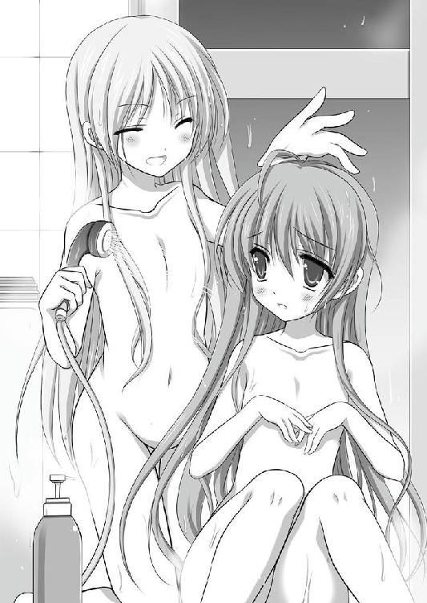
「そーいえば気になるって言えば、あんたこの前先生に言われた事覚えてる？」
「......この前？ えっと......？」
いつの話だか分からない。
先生とはほぼ毎日顔を合わせるし、先生からの注意事項なんて沢山ある。
「女の子はブラしてきなさいって話。あんたたまに面倒がって付けてないでしょ」
「......うう〜......」
思わず自分の胸を押さえる。
付ける大きさじゃないから別に要らないと思うし、恥ずかしくて母親にも相談出来てない事だ。
買ってくれてるのがあるからたまにそれを付けているけれど、なくても変わらないと思ってしまう。
「あはは、真っ赤になってるー」
「さ、沙智子ちゃんだって付けてないもんっ」
「あたし最近付けてるわよ。この前もおばあちゃんに選んで貰ったんだ」
「うう〜〜」
ますます赤くなる翔子に、沙智子の笑い声と洗い流すシャワーの水音が響いていた。
服が乾いた頃には、もう日が赤く染まっていた。
「それじゃ帰るわ」
「うん。今日はありがとう」
家の前で沙智子を見送る。
「別にいーわよ。じゃ明日ね」
「うん。ばいばい」
手を振って沙智子は家に向かって駆けだし──そして足を止めた。
「ねえ、翔子。あんた分かってるわよね。あの狸......怪我ほんと酷かった。あれじゃきっと長くは......」
「..................うん......」
それが何なのか、二人ともはっきりと言う事が出来なかった。
医者に見せてあげたいという気持ちと、他人に見せちゃいけない気持ちがせめぎ合っている。
どういう現象による物か分かっているからこそ、不思議な光景にも見えてしまった。
「......そう。ならいいわ。それじゃね」
「うん。ばいばい」
今度は振り返らずに帰って行った。
......こうして、翔子と沙智子の小さな冒険は終わりを迎えた。
狸の親はたまにごんたの所まで降りてきては、子供の分の餌も持って山の奥に行くのを見る事が出来たが......。
季節が冬になりクリスマスが近づく頃には、姿を見かける事もなくなっていた。
「あの子たち、元気かなぁ」
それでも折りにふれて、沙智子とそんな話をする。
「さぁね。今も山の中で食べ物探してたりするんじゃない？」
「お腹空いてないといいけど」
「ごんたに届けて貰うとか」
「それもいいね。今度お願いしてみようっと」
そんな会話を繰り返すが、本当にお願いしてみた事は一度もなかった。
「まあ、一つ言えるのは」
「うん？」
「......翔子の優しい気持ち、きっと伝わってると思う」
「............うん。ありがとう」
それは秋の深まる頃にあった、とても小さな物語だった。
あとがき
こちらを読まれてる方の多くは『はじめまして』でしょうか。
もしご存じの方がおられましたら、本当にありがとうございます。
改めまして、桐月です。
このたびは黄昏のシンセミア〜冬の木漏れ日〜をお手にとって頂きありがとうございます。
今回、出させて頂いた本は、二〇一〇年七月にＰＣで。二〇一三年一月にＰＳＰで発売した恋愛ＡＶＧ「黄昏のシンセミア」の本編後の物語を書かせて頂きました。
本編のゲームシナリオを書いてから、約三年。このような機会を頂けた一二三書房さんに感謝いたします。
ここまで読まれた方には改めて説明する事ではないのかもしれませんが、黄昏のシンセミアは天女伝説をベースに兄妹間の恋愛に踏み込んで描いたストーリーになっています。
今回の話を書くに辺り、二人が避けて通れず、そして本編中でも少しだけ扱われていた『親子愛』という物をテーマにさせて頂きました。
本編終了後も二人の今後にはまだまだ障害は沢山あると思いますが、このような調子で日々を過ごしていると思い描いて頂けたら幸いです。
最後に、今回文庫本を出すにあたり企画とお話を下さった一二三書房のＴ様。
本編のゲームに引き続き美麗なイラストを描いてくださったオダワラハコネ様。
それからあっぷりけの憲yuki様に感謝を送らせていただきたいと思います。
それでは失礼いたします。
もしまたどこかでお会い出来る機会がありましたら、どうぞよろしくお願います。
桐月
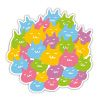
桐月
１９７９年生まれ。茨城県つくば市出身。
２００５年に『少女魔法学リトルウィッチロマネスク』でライターデビュー。以後は本作「黄昏のシンセミア」を含むゲームシナリオを中心に活動中。
猫とのんびり暮らす生活を目標にしているが、東京の部屋が動物禁止のため孤独な一人暮らしを余儀なくされている。
いずれ動物可のマンションに移り住むのが目下の夢。
黄昏のシンセミア
〜冬の木漏れ日〜
電子版発行 ２０１４年３月５日
著 者 桐月
発行者 辻 信幸
発行所 株式会社一二三書房
〒１０２－００７２
東京都千代田区飯田橋２－14－２ 雄邦ビル
電話 ０３－３２６５－１８８１
イラスト オダワラハコネ
©HIFUMI SHOBO
©AKATSUKI-WORKS
本書の無断複製（コピー）は、著作権上の例外を除き、禁じられています。
●本書は『黄昏のシンセミア』（２０１３年７月20日 初版第１刷）に基づいて制作されました。